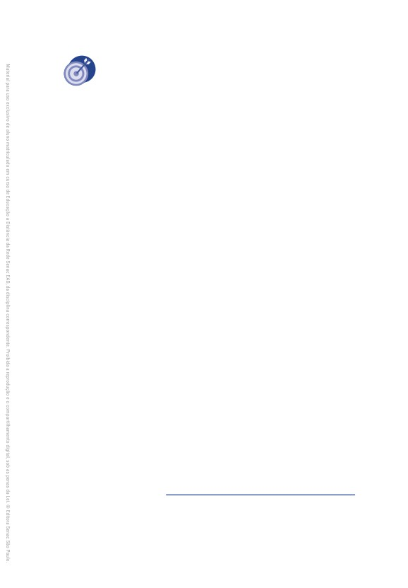
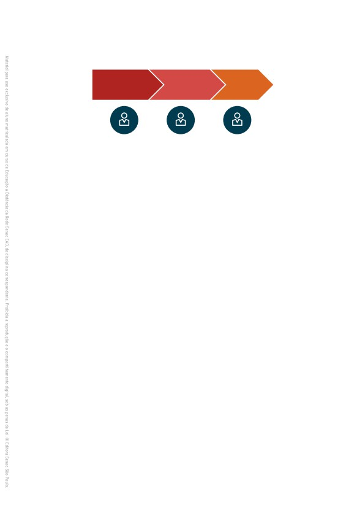
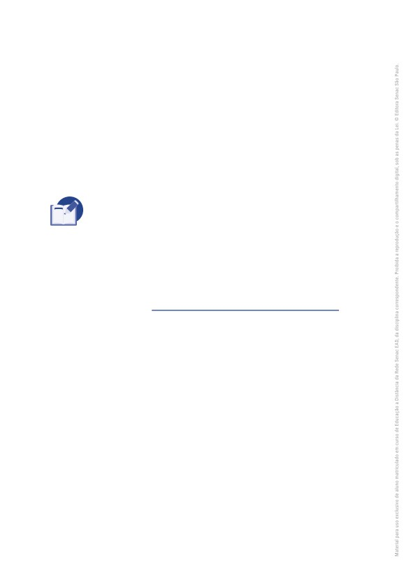
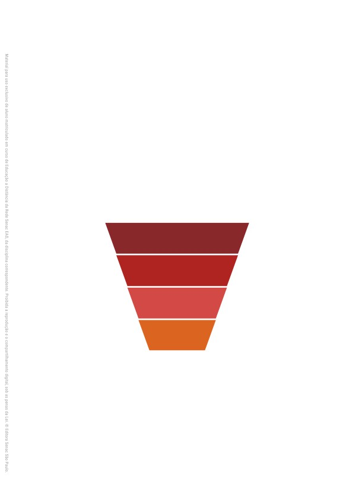
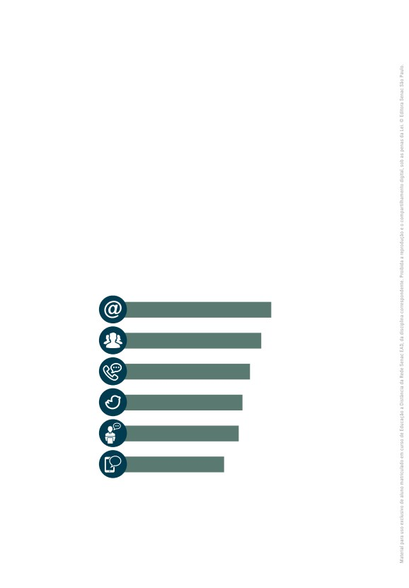
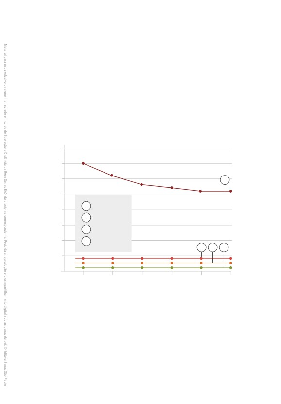

Renato Bongiorno
Implementação de
Negócios Digitais
Dados Internacionais de Catalogação na Publicação (CIP)
(Jeane Passos de Souza - CRB 8a/6189)
Bongiorno, Renato
Implementação de negócios digitais / Renato Bongiorno. - São
Paulo : Editora Senac São Paulo, 2017. (Série Universitária)
Bibliografia.
e-ISBN 978-85-396-1237-6
1. Negócios digitais 2. Marketing digital
3. Negócios digitais :
Ferramentas para análise de métricas digitais I. Título. II. Série.
17-510s
CDD-004.678
BISAC COM043050
COM060090
BUS090000
Índice para catálogo sistemático
1. Internet : Comércio eletrônico
004.678
IMPLEMENTAÇÃO DE
NEGÓCIOS DIGITAIS
Renato Bongiorno
Administração Regional do Senac no Estado de São Paulo
Presidente do Conselho Regional
Abram Szajman
Diretor do Departamento Regional
Luiz Francisco de A. Salgado
Superintendente Universitário e de Desenvolvimento
Luiz Carlos Dourado
Editora Senac São Paulo
Conselho Editorial
Luiz Francisco de A. Salgado
Luiz Carlos Dourado
Darcio Sayad Maia
Lucila Mara Sbrana Sciotti
Jeane Passos de Souza
Gerente/Publisher
Jeane Passos de Souza (jpassos@sp.senac.br)
Coordenação Editorial/Prospecção
Luís Américo Tousi Botelho (luis.tbotelho@sp.senac.br)
Márcia Cavalheiro Rodrigues de Almeida (mcavalhe@sp.senac.br)
Comercial
Marcos Telmo da Costa (mtcosta@sp.senac.br)
Administrativo
João Almeida Santos (joao.santos@sp.senac.br)
Acompanhamento Pedagógico
Nivia Pereira Maseri de Moraes
Designer Educacional
Hágara Rosa da Cunha Araujo
Revisão Técnica
Julia Stateri
Colaboração
Ana Paula Pigossi Papalia
Coordenação de Preparação e Revisão de Texto
Luiza Elena Luchini
Preparação de Texto
Rodolfo Santana
Revisão de Texto
Ana Luiza Candido
Projeto Gráfico
Alexandre Lemes da Silva
Emília Correa Abreu
Capa
Antonio Carlos De Angelis
Proibida a reprodução sem autorização expressa.
Editoração Eletrônica
Todos os direitos desta edição reservados à
Marcella Rigazzo Maiolino
Sandra Regina Santana
Editora Senac São Paulo
Thiago Ferreira Mullon Planchart
Rua 24 de Maio, 208 - 3o andar
Ilustrações
Centro - CEP 01041-000 - São Paulo - SP
Marcella Rigazzo Maiolino
Caixa Postal 1120 - CEP 01032-970 - São Paulo - SP
Tel. (11) 2187-4450 - Fax (11) 2187-4486
Imagens
E-mail: editora@sp.senac.br
iStock Photos
E-pub
Ricardo Diana
© Editora Senac São Paulo, 2017
Sumário
Capítulo 1
Capítulo 4
A importância do marketing no
A importância das métricas
sucesso de um negócio digital, 7
digitais, 89
1
Evolução do marketing, 8
1
As métricas e a sua importância
para o mercado digital, 90
2
Marketing digital, 10
2
Métricas: o que de fato analisar no
Considerações finais, 32
cenário digital?, 96
Referências, 33
3
Integrando plug-ins de métricas no
CMS WordPress, 116
Capítulo 2
4
Além das métricas digitais, 117
Educando clientes com inbound
Considerações finais, 119
marketing, 37
Referências, 119
1
Marketing tradicional (outbound
marketing), 38
Capítulo 5
2
Inbound marketing, 41
Ferramentas essenciais para
3
Metodologia inbound, 48
análise de métricas e ROI
4
Buyer personas, 51
digitais, 123
5
Jornada do consumidor, 52
1
Console de pesquisa do Google
6
Conteúdo: chave de sucesso para
(Google Search Console), 124
uma estratégia inbound, 56
2
Gerenciador de tags do Google
Considerações finais, 58
(Google Tag Manager), 134
Referências, 59
3
Anúncios de texto do Google
(Google AdWords), 136
Capítulo 3
4
Google AdSense: espaços
Marketing de busca, 61
publicitários, 140
5
Google Analytics: análise e
1
Estratégias de Search Engine
indicadores, 142
Marketing (SEM), 62
6
Integrando soluções de métricas
2
Melhorando resultados com SEO, 68
via CMS, 148
3
Foco no futuro, 79
Considerações finais, 149
Considerações finais, 85
Referências, 150
Referências, 86
Capítulo 6
Capítulo 8
Ferramentas essenciais
O novo profissional digital, 197
para análise de métricas e
1
O profissional de web
ROI sociais, 153
marketing, 198
1
Facebook Analytics, 154
2
O futuro do marketing digital, 205
2
Twitter Analytics, 163
3
O futuro do processo de vendas
digitais, 215
3
Google+ Analytics, 169
4
Métricas digitais, 217
4
LinkedIn Analytics, 171
Considerações finais, 218
5
Integrando as mídias sociais ao
CMS WordPress, 174
Referências, 219
Considerações finais, 175
Sobre o autor, 223
Referências, 176
Capítulo 7
Vendas + marketing =
smarketing, 179
1
Smarketing, 180
2
Integrando equipes de vendas e
marketing, 182
3
Funil de conversão de vendas, 184
4
ANS - Acordo de Nível de
Serviço (SLA - Service
Level Agreement), 190
Considerações finais, 194
Referências, 195
6
Implementação de negócios digitais
Capítulo 1
A importância
do marketing no
sucesso de um
negócio digital
Neste capítulo inicial, apresentaremos a importância e as principais
estratégias do marketing digital, e como os sistemas de gerenciamen-
to de conteúdo (CMS) podem colaborar para a implementação de tais
estratégias.
Dentre as muitas técnicas aplicadas pelo mercado, estudaremos
as seguintes ferramentas: websites, mídias sociais, vídeos on-line, apli-
cações mobile, blogs, reviews, e-books/whitepapers, landing pages,
webinars, newsletters e e-mails marketing.
Além da conceitualização, exemplificaremos a eficácia de cada es-
tratégia com dados atualizados de mercado, mostrando o comporta-
mento do consumidor sob influência de cada uma.
7
O objetivo deste capítulo é apresentar as ações mínimas de marke-
ting digital a serem implementadas em qualquer segmento de negó-
cio, mostrando o quão ampla é essa área e como os sistemas de CMS
podem ajudar a colocar em prática as estratégias aqui definidas.
1 Evolução do marketing
Segundo Philip Kotler,
o marketing não deve mais ser considerado apenas sinônimo de
vendas e/ou de uma ferramenta para gerar demanda. Deve, agora,
ser considerado a principal esperança de uma empresa para recu-
perar a confiança do consumidor. (KOTLER, 2010, p. 48-49)
O marketing mudou. As empresas que ainda direcionam suas es-
tratégias de marketing com foco apenas em vendas tendem a vender
cada vez menos. A famosa técnica de colocar “tiradores de pedidos” e
pressioná-los a cumprir metas impossíveis já não funciona mais.
A proliferação da cultura digital e o alcance do conhecimento de
massa via internet tornaram os consumidores ainda mais exigentes,
cautelosos e atenciosos. Além de pesquisarem profundamente as ca-
racterísticas técnicas dos produtos e serviços a serem adquiridos, eles
também analisam, entre outras informações, a reputação, a cultura e
os valores no processo de produção das empresas nos canais digitais,
prezando pelo respeito destas com seus colaboradores, clientes e for-
necedores e por instituições que realizam ações sociais e sustentáveis.
Esse comportamento contemporâneo nos faz pensar em uma refor-
mulação do processo de vendas: não basta apenas fabricar um produto
ou prestar um serviço; é preciso criar canais de relacionamento entre
empresas e pessoas, ou melhor, apenas entre pessoas, pois uma em-
presa, em sua essência, é formada por pessoas.
8
Implementação de negócios digitais
Hoje, as empresas que desejam se manter ativas no mercado
precisam encantar o cliente e entendê-lo, fazendo com que o produ-
to ofertado se torne parte fundamental para concretização de suas
realizações.
Em uma rápida análise pelo histórico evolutivo do marketing, de
acordo com Kotler (2010), podemos dizer que, para chegar ao cenário
atual, o marketing passou por três grandes processos evolutivos:
•
Marketing 1.0: consolidado na Revolução Industrial, era centrado
no produto e na empresa, tendo um único objetivo: vender.
O objetivo do marketing 1.0 era padronizar e ganhar em escala, a
fim de reduzir ao máximo os custos de produção, para que essas
mercadorias pudessem ter um preço mais baixo e ser adquiridas
por um número maior de compradores. (KOTLER, 2010, p. 16)
•
Marketing 2.0: caracteriza-se principalmente pelo avanço tecno-
lógico, essencialmente por conta das plataformas digitais e da
popularização da internet. Com esse avanço, o consumidor pas-
sou a realizar pesquisas e comparações de produtos, serviços e
marcas de forma prática e rápida, além opinar sobre estes em
múltiplos canais digitais, fazendo uma comunicação direta com
outros consumidores. O valor de um produto passa a ser definido
pelo cliente, não mais pela empresa.
•
Marketing 3.0: baseia-se em princípios e valores que vão além
de atingir as necessidades de consumo e emocionais dos consu-
midores. No marketing 3.0, as empresas precisam começar a en-
xergar os consumidores em sua essência humana, e isso envolve
mente, coração e espírito. Nesse cenário, as pessoas buscam
marcas que não só alcancem suas necessidades e emoções,
mas que também estejam preocupadas em transformar o mundo
em um lugar melhor.
A importância do marketing no sucesso de um negócio digital
9
Marketing 3.0 é a fase na qual as empresas mudam da abordagem
centrada no consumidor para a abordagem centrada no ser huma-
no, na qual a lucratividade tem como contrapeso a responsabilida-
de corporativa. (KOTLER, 2010, p. 17)
Quadro 1 - As três etapas evolutivas do marketing
MARKETING 1.0
MARKETING 2.0
MARKETING 3.0
(PRODUTO)
(CONSUMIDOR)
(VALORES)
Satisfazer e reter os
Fazer do mundo um
OBJETIVO
Vender produtos
consumidores
lugar melhor
FORÇAS
Tecnologia da
Nova onda de
Revolução Industrial
PROPULSORAS
informação
tecnologia
COMO AS
Compradores
Consumidor
Ser humano pleno,
EMPRESAS VEEM O
de massa, com
inteligente, dotado
com coração,
MERCADO
necessidades físicas
de coração e mente
mente e espírito
CONCEITO DE
Desenvolvimento de
Diferenciação
Valores
MARKETING
produto
DIRETRIZES DE
Posicionamento
Especificação de
Missão, visão e
MARKETING DA
do produto e da
produto
valores da empresa
EMPRESA
empresa
Funcional,
PROPOSIÇÃO DE
Funcional e
Funcional
emocional e
VALOR
emocional
espiritual
INTERAÇÃO COM
Transação do tipo
Relacionamento do
Colaboração do
CONSUMIDORES
um-para-um
tipo um-para-um
tipo um-para-um
Fonte: Kotler (2010, p. 17).
2 Marketing digital
Essa evolução na percepção de valores, seja por parte dos consumi-
dores, seja por parte das empresas, só foi possível graças às ferramen-
tas colaborativas que o marketing digital trouxe a esse novo cenário.
10
Implementação de negócios digitais
Para Torres (2010), o marketing digital pode ser definido como uma
série de estratégias de marketing e publicidade aplicadas à internet e ao
comportamento do consumidor digital. Trata-se de um conjunto coe
rente e eficaz de ações que criam um contato permanente entre a em-
presa e seus clientes, para que estes conheçam o negócio, confiem nele
e tomem a decisão de compra a seu favor.
Nesse contexto, o marketing digital refere-se a todas as ferramentas
digitais que permitem a troca de experiências e o conhecimento colabo-
rativo entre empresas e pessoas.
2.1 Ferramentas básicas de marketing digital
Depois de compreender a importância do marketing digital e do
marketing 3.0 para estreitar laços entre consumidores e empresas, pre-
cisamos assimilar as principais estratégias que as empresas necessi-
tam desenvolver para chegar a esse objetivo.
Dentre as principais estratégias digitais utilizadas hoje pelo mercado,
temos: websites, mídias sociais, vídeos on-line, aplicações mobile, blogs,
reviews, e-books/whitepapers, webinars, newsletters e e-mails marketing.
Antes de apresentarmos cada uma das ferramentas, o gráfico 1 nos
fornecerá um panorama de popularidade de algumas delas, justificando
a sua importância no marketing digital das empresas.
A importância do marketing no sucesso de um negócio digital
11
Gráfico 1 - Popularidade e eficácia das estratégias de marketing digital em 2015
Utiliza
Planeja utilizar nos
atualmente
próximos 12 meses
56%
Website corporativo
64%
25%
10%
26%
44%
Engajamento em mídias sociais
67%
22%
10%
27%
44%
Marketing em mídias sociais
66%
23%
9%
29%
44%
SEO/SEM
66%
25%
7%
31%
Landing pages
42%
66%
24%
8%
31%
(páginas de conversão)
41%
E-mail marketing
68%
23%
8%
27%
40%
Display/banner
59%
29%
10%
30%
39%
Publicidade em mídias sociais
68%
22%
8%
29%
38%
Blog
58%
27%
13%
31%
37%
Monitoramento de mídias sociais
68%
21%
9%
30%
35%
Vídeos
61%
27%
9%
29%
0%
20%
40%
60%
80%
100%
Muito efetiva
Efetiva
Não efetiva
Não sabe
Fonte: SalesForce (2015, p. 5).
2.1.1 Websites
Muitas vezes, pequenas corporações questionam-se quanto à viabi-
lidade de ter um website, já que muitos não comercializam seus produ-
tos e serviços pela internet. No entanto, existem inúmeros fatores im-
portantes - como a possibilidade de ser encontrado por mecanismos
de busca e em redes sociais - que precisam ser levados em considera-
ção e justificam o desenvolvimento de um site, mesmo para quem não
comercializa produtos ou serviços por meios digitais.
De acordo com dados da SalesForce (2015), ter um website cor-
porativo é a estratégia mais utilizada atualmente, com 56% de repre-
sentatividade frente as demais ações. Desse total, 64% das empresas
12
Implementação de negócios digitais
consideram ter um website uma estratégia muito eficiente, 25% consi-
deram eficiente, 10% consideram pouco eficiente e 1% não soube opinar.
2.1.2 Mídias sociais
Social media, ou mídias sociais, são plataformas que colocam empre-
sas em contato direto com clientes, futuros clientes (prospects), funcio-
nários, parceiros, concorrentes, enfim, todo o capital humano existente
nas plataformas digitais. Ferramenta essencial no compartilhamento de
conteúdos e experiências, as redes sociais promovem a expansão da em-
presa frente às plataformas de marketing digital.
De acordo com dados da SalesForce (2015), 44% dos investimentos
em ações de marketing digital são destinados à social media marketing.
Desse total, 66% das empresas consideram esse investimento funda-
mental, muito eficiente e efetivo impulsionador de novos negócios; já
para 23%, as ações em social media são eficientes, mas não primordiais
em sua estratégia de marketing; 9% consideram este investimento pou-
co efetivo; e 2% não souberam opinar.
Ao segmentarmos as estatísticas da SalesForce para o cenário bra-
sileiro, temos os seguintes dados:
88% das empresas acreditam que o investimento em social media
é fundamental para seus negócios;
para 66% das empresas, o investimento em social media é crucial
para comercialização de seus produtos e serviços;
53% das empresas possuem uma equipe dedicada para ações de
social media;
38% das empresas creditam a métrica de engajamento alcançado
via social media como a mais importante para sua audiência digi-
tal. (SALESFORCE, 2015, p. 39)
Ainda de acordo com dados da SalesForce (2015), entre as re-
des sociais mais utilizadas pelas empresas em âmbito global, as
A importância do marketing no sucesso de um negócio digital
13
cinco primeiras colocadas são: Facebook, Twitter, LinkedIn, Google+
e YouTube.
Gráfico 2 - Redes sociais mais utilizadas e sua eficácia
Utiliza
Planeja utilizar nos
atualmente
próximos 12 meses
80%
Facebook
73%
19%
8%
12%
70%
Tw itter
68%
22%
10%
18%
62%
LinkedIn
69%
21%
10%
22%
56%
Google+
69%
16%
14%
20%
56%
YouTube
68%
24%
8%
25%
0%
20%
40%
60%
80%
100%
Muito efetiva
Efetiva
Não efetiva
Fonte: SalesForce (2015, p. 28).
IMPORTANTE
Antes de publicar qualquer conteúdo nas redes sociais, é importante
que se defina a sazonalidade das postagens, o investimento financeiro
e as métricas de cada post, chegando assim a um resultado concreto
das ações realizadas.
2.1.3 Vídeos on-line
O desenvolvimento de ações de marketing no formato de vídeo é es-
sencial para estreitar o relacionamento entre empresas e clientes, uma
vez que os vídeos expõem de forma mais natural o cotidiano das corpo-
rações e a forma de utilização de seus produtos e serviços.
De acordo com O’Neil-Hart e Blumenstein (2016), até 2025, metade
das pessoas com até 32 anos não terão mais TV por assinatura, e seis
em cada dez pessoas darão preferência a plataformas de vídeos on-line
em vez da televisão.
14
Implementação de negócios digitais
Se analisarmos os dados disponibilizados pelo Google (2015 apud
O’NEIL-HART; BLUMENSTEIN, 2016), vemos que as pessoas entre 18
e 49 anos reduziram o tempo de televisão em 4%, enquanto o canal de
vídeos disponibilizado pela empresa, o YouTube, teve um aumento de
74% no tempo de transmissão de vídeos.
Isso mostra as mudanças no comportamento do consumidor e no
investimento das empresas em mídia on-line. De acordo com dados da
Adelie Studios (2016), vídeos publicados em canais sociais geram até
1.200% a mais de compartilhamentos do que a combinação de imagens
e textos. Se fizermos um comparativo entre empresas que investem em
ações de vídeos on-line com aquelas que não investem, o retorno de
investimento no decorrer de um ano é até 49% mais rápido.
Aprofundando ainda mais o estudo da Adelie Studios (2016), cor-
porações que investem em vídeos on-line em seus websites alcançam
uma taxa média de conversão de 4,8%, comparadas a 2,9% entre as que
não investem, além de obter aumento do tráfego orgânico pelos meca-
nismos de busca em até 157%.
PARA SABER MAIS
Segundo Izquierdo e Öberg (2016, p. 85-89) em matéria da revista Veja
São Paulo, nove em cada dez jovens brasileiros com idade entre 18 e 25
anos assistem a vídeos on-line, tendo o YouTube como principal plata-
forma com 68%; em segundo lugar vem o WhatsApp, com 22%; e por
último o Facebook, com 10%.
Já em termos de dispositivos, os smartphones são a principal forma de
consumo dos vídeos on-line, com 57%; seguidos dos vídeos reproduzi-
dos em computador, com 27%; TVs smart ficam com 14% e por último
os tablets, com 2%.
Com base nesses dados, procure criar e compartilhar vídeos que al-
cancem as necessidades e os valores de seus consumidores, transmi-
tindo transparência, ética e profissionalismo.
A importância do marketing no sucesso de um negócio digital
15
2.1.4 Aplicativos mobile (mobile applications)
Aplicativos mobile são softwares para dispositivos móveis como
smartphones e tablets. O desenvolvimento mobile é uma realidade nas
empresas que realizam investimentos de marketing digital. Como mos-
tram os dados da SalesForce (2015), para 66% das empresas o desen-
volvimento de aplicativos mobile esteve entre as cinco principais áreas
de investimento em 2015, sendo considerado um investimento funda-
mental para 71% dos gestores de marketing. No entanto, antes de reali-
zar esse tipo de investimento, é necessário tomar alguns cuidados, que
estudaremos no decorrer deste capítulo.
Gráfico 3 - Impacto do mobile marketing nos negócios
2015
16%
70%
15%
2014
14%
57%
29%
Mobile marketing é a fonte de receita principal do negócio
Mobile marketing é um elemento fundamental para produtos e serviços
Mobile marketing afeta indiretamente o desempenho dos negócios
Fonte: SalesForce (2015, p. 19).
No Brasil, até 2015, 93% das empresas que investiram em marketing
digital consideravam o mobile marketing fundamental para seus negó-
cios. Porém, apenas 53% das empresas possuíam o mobile marketing
integrado a sua estratégia, o que ressalta a necessidade de se avaliar
melhor a viabilidade desse tipo de investimento (SALESFORCE, 2015).
2.1.4.1 Funcionalidades para aplicativos corporativos
No cenário de aplicativos corporativos, o investimento valerá a pena
desde que seu objetivo principal seja integrar e gerar novas funciona-
lidades de seus sistemas ERP (Enterprise Resource Planning) e CRM
16
Implementação de negócios digitais
(Customer Relationship Management), visando facilitar a integração com
clientes, funcionários, fornecedores e demais envolvidos no fluxo de ativi-
dades da empresa, aumentando, assim, a viabilidade de novos negócios.
No entanto, esse tipo de investimento pode ser reavaliado caso a
empresa opte por desenvolver um aplicativo que tenha por objetivo ape-
nas facilitar as rotinas de trabalho entre os colaboradores, mas que não
afete diretamente clientes e fornecedores. Nesses casos, vale analisar
se tais funcionalidades já não existem em algum aplicativo disponível
nas app stores, reduzindo o investimento e agilizando os processos de
produção e utilização.
2.1.4.2 Funcionalidades para aplicativos web
Uma forma de avaliar a necessidade de desenvolvimento de um apli-
cativo é observar o volume de acessos a determinadas funcionalidades
do website via dispositivos móveis. Levando em consideração que o
website já conta com design responsivo1, caso o percentual de acessos
e a taxa de rejeição (que representa a desistência de navegação) sejam
altos, fica comprovado que o desenvolvimento de um aplicativo pode
melhorar a interatividade, a navegabilidade e a performance dessas fer-
ramentas, elevando assim o fluxo de conversões e as vantagens com-
petitivas do negócio no âmbito digital.
NA PRÁTICA
Uma alternativa viável para obter vantagem competitiva com o uso de
aplicativos é o desenvolvimento de parcerias para associar o aplicativo
a um segmento de negócio relacionado ao seu, alcançando o público-alvo
de diferentes formas. Um exemplo é o aplicativo Vá de Táxi, que, além de
estar disponível nas lojas de aplicativos (app stores), também está nos
1 O design responsivo é uma adaptação de layout que utiliza o mesmo código HTML para todos os dispositivos
(desktop, mobile e tablets). Realiza-se a adaptação do layout com alterações na linguagem CSS.
A importância do marketing no sucesso de um negócio digital
17
canais digitais dos clientes da rede Porto Seguro, que ofertam descontos
adicionais para quem utilizar o aplicativo, aumentando assim sua abran-
gência mercadológica.
2.1.4.3 Interoperabilidade
Outro ponto importante que precisa ser analisado antes do desen-
volvimento de um aplicativo é a falta de interoperabilidade entre os
sistemas operacionais dos dispositivos móveis, ou seja, um aplicativo
desenvolvido para Android não servirá para iOS e vice-versa, o que de-
manda investimento em equipes especializadas.
Uma solução viável para a falta de interoperabilidade entre os sis-
temas operacionais é o desenvolvimento de aplicativos multiplatafor-
ma. Desenvolvidos a partir de tecnologias livres como HTML5, CSS,
JavaScript e frameworks open source, são executados pelo browser, e
uma única versão pode ser acessada pela maioria dos dispositivos.
A falta de interoperabilidade e o uso de tecnologias proprietárias vão
contra os princípios de Tim Bernes-Lee, criador da web e do W3C. Ele afir-
mou em entrevista concedida ao programa Milênio da Globo News que:
o primeiro objetivo da web é que ela fosse universal, que fosse
usada para qualquer tipo de documento, qualquer língua, qualquer
gênero de comunicação. Não deveria haver limitação na forma de
usá-la. O princípio da universalidade era vital. (BERNERS-LEE, 2016)
2.1.5 Blogs
Blogs são plataformas web com objetivo de divulgar e promover re-
gularmente novos conteúdos. Para as empresas, é uma forma eficiente
de contato com seu público-alvo.
18
Implementação de negócios digitais
Por mais que empresas e pessoas possam se questionar quanto
à eficácia dos blogs como ferramenta de marketing digital, os dados
da SalesForce (2015) mostram que 38% das empresas utilizam blogs
como canais de marketing em seus investimentos. Desse total, 58% das
empresas consideram os blogs uma ferramenta muito efetiva e eficien-
te de marketing digital; 27% consideram os blogs razoavelmente efica-
zes; para 9% são pouco eficazes; e 6% não souberam opinar a respeito.
Aprofundando os estudos nas métricas de conversão, segundo
Pfannkuch (2014), empresas que possuem blogs aumentam em até
55% as visitas a seu website corporativo e, conforme Allen (2015), tam-
bém recebem 97% a mais de inbound links (links do seu site/blog refe-
renciados a partir de outros sites).
IMPORTANTE
Para Allen (2015), mais que aumentar as possibilidades de conversão
de clientes, os blogs criam canais de comunicação. Estima-se que até
2020, 85% dos consumidores irão interagir com empresas sem a pre-
sença humana.
Muitas empresas, porém, acabam não obtendo o sucesso esperado
ao desenvolver um blog, em função da má qualidade dos posts e da
falta de periodicidade nas postagens. O conteúdo a ser publicado em
um blog corporativo deve ser educativo, e não uma tentativa de venda
ou divulgação de produtos e serviços. Um post corporativo deve envol-
ver questões sobre aquele mercado de atuação, de modo que encante
e surpreenda o leitor, não sendo apenas um canal de comunicação de
informações sobre sua empresa.
Artigos que envolvem estatísticas do setor, dicas de produtividade,
previsões de investimento e curiosidades do mercado são bons exem-
plos de conteúdos que atraem leitores e tornam o blog uma referência.
A importância do marketing no sucesso de um negócio digital
19
Isso leva indiretamente o leitor a querer conhecer melhor os produtos e
serviços ofertados, então escreva artigos que respondam às principais
dúvidas de seus consumidores e torne-se uma referência no assunto.
2.1.5.1 Utilizando CMS para o desenvolvimento de blogs
Quando empresas decidem implementar estratégias de blogs, mui-
tas imaginam que será necessário realizar o mesmo investimento de
um novo site, quando, na verdade, não é isso que deve ocorrer.
Antes da escolha de uma plataforma de blog, é importante planejar
o seu funcionamento. Para muitos, isso pode parecer um pouco exage-
rado, no entanto, de acordo com Ezequiel Bruni:
Planos não são apenas ferramentas de produtividade: eles são o
início do pensamento original, criativo. Além disso, muitas vezes
você pode resolver metade dos seus problemas futuros ali mesmo,
na fase de planejamento. (BRUNI, 2016, s/p)
Bruni também sugere cinco etapas de planejamento para o desen-
volvimento de um blog:
1.
Tema: procure estudar os temas do blog de acordo com a marca
e o mercado de atuação. Cores, tipografia, imagens e design são
itens importantes a serem avaliados na escolha dos temas. O ob-
jetivo principal ao se definir um tema é o de não colocar o leitor
em dúvida sobre o assunto tratado no blog.
2.
Propósitos e objetivos: etapa que tem como objetivo a reflexão
sobre algumas questões, como:
Por que criar um blog?
Qual mensagem será transmitida nos posts?
Por que seu blog será relevante para o mercado e para os leitores?
20
Implementação de negócios digitais
Ao responder essas questões, você terá certeza de que estará es-
crevendo da forma adequada para o seu público.
3.
Audiência: para quem você pretende escrever? Públicos inician-
tes, intermediários ou avançados?
Blogs corporativos muitas vezes requerem uma abordagem hí-
brida, atingindo a todos os públicos: de quem ainda não conhece
muito sobre o mercado até empresários e investidores em busca
de informações atualizadas e relevantes sobre o segmento do
negócio.
4.
Agendamento/periodicidade: definir uma periodicidade de posts
é tarefa básica para quem deseja criar um blog. Pode variar con-
forme a audiência e o público almejado, no entanto, quem acom-
panhar o blog deverá saber que , em determinados dias, um novo
conteúdo será compartilhado.
5.
Plataforma de desenvolvimento: antes de escolher a plataforma
é importante avaliar todos os quatro itens do planejamento lista-
dos. Por mais que diversas plataformas de CMS sirvam para o
desenvolvimento de blogs, algumas podem ser mais eficientes
que outras, dependendo do conteúdo a ser compartilhado.
2.1.5.2 WordPress
O WordPress é uma das mais populares plataformas para o desen-
volvimento de sites e blogs, sendo atualmente o CMS mais utilizado
no mundo digital. Segundo a W3Techs (2016), entre todos os websites
publicados, o WordPress representa 26,5% desse volume: uma repre-
sentatividade de mercado de 59,5% quando comparado às demais pla-
taformas de CMS.
A importância do marketing no sucesso de um negócio digital
21
Com uma infraestrutura completa e integrada com diversos temas e
plug-ins, o WordPress possui uma instalação simples, que leva menos
de cinco minutos para ser concluída, sendo ideal para blogs com alto
volume de posts, com muitos escritores e que necessitam de recursos
avançados, como guia de posts relacionados, propagandas e gerencia-
mento de comentários.
2.1.6 Reviews
Os reviews, ou revisões, no mundo digital, são as opiniões sobre
produtos e serviços publicadas por consumidores em sites, redes so-
ciais ou blogs.
Muito comum em sites de e-commerce, blogs e portais de notícias,
a estratégia de marketing digital por reviews deveria ser incorporada e
monitorada pelas empresas de todos os segmentos, pois possibilita ana-
lisar o sentimento de seus clientes em função dos produtos e serviços
ofertados.
Apesar de estarem presentes em diferentes canais de comunicação
on-line, existem diferentes segmentos para a utilização dos reviews. No
e-commerce, seu foco é voltado para a avaliação de produtos. Já os
reviews de blogs e portais de notícias visam o compartilhamento de
opiniões e a geração de discussões em torno do assunto publicado.
No Brasil, temos exemplos de grandes portais de e-commerce que já
fazem o monitoramento de opiniões postadas por seus clientes, como
o Submarino e as Lojas Americanas, prática comum também entre os
grandes portais de notícias, como Olhar Digital e Folha de S.Paulo.
NA PRÁTICA
Existem sites especializados em reviews, permitindo que clientes opi-
nem sobre empresas, produtos e marcas dos mais variados setores.
22
Implementação de negócios digitais
Um site que oferece esse tipo de serviço é o portal Reclame Aqui, que
oferece um espaço para os clientes postarem suas reclamações.
Na maioria dos casos, os consumidores postam reclamações em sites
como este somente quando a empresa não lhe deu a devida atenção em
algum momento do atendimento. Além de expor publicamente o proble-
ma, isso “obriga” a empresa a resolvê-lo, a expõe perante os demais clien-
tes e mostra a seus concorrentes suas fraquezas.
O Reclame Aqui, além de publicar os reviews dos clientes, compartilha
um ranking de reputação. Nele, são analisados o volume de reclama-
ções e as soluções realizadas pelas empresas, constituindo um impor-
tante canal para análise de sentimentos.
2.1.6.1 Reviews - Estatísticas e benefícios
De acordo com dados do relatório da consultoria Nielsen (2015),
Global Trust In Advertising, a recomendação de amigos e parentes é
considerada a fonte mais confiável na indicação de produtos e serviços.
Em segundo lugar, temos as informações compartilhadas pelas empre-
sas em seus websites e blogs, ou seja, evidenciando a necessidade de
se desenvolver um website como estratégia básica de marketing digital.
Por fim, em terceiro lugar como a fonte mais confiável de informação
entre os consumidores, temos as recomendações de outros consumi-
dores, os reviews.
IMPORTANTE
Vale ressaltar que, segundo a consultoria Nielsen (2015), dois terços
dos consumidores on-line postam suas opiniões sobre produtos e
serviços.
A importância do marketing no sucesso de um negócio digital
23
Tabela 1 - Relação de confiança nas propagandas de acordo com a geração do consumidor
GERAÇÃO
GERAÇÃO Z
MILLENNIALS
GERAÇÃO X
BOOMERS
SILENCIOSA
(15-20 ANOS)
(21-34 ANOS)
(35-49 ANOS)
(50-64 ANOS)
(65+ ANOS)
Recomendação de
83%
85%
83%
80%
79%
pessoas conhecidas
Websites corporativos
72%
75%
70%
59%
50%
Reviews (opinião de
63%
70%
69%
58%
47%
consumidores)
Conteúdo editorial
68%
68%
66%
60%
55%
(jornais e artigos)
Anúncios em TV
58%
67%
64%
55%
48%
Marcas patrocinadas
62%
66%
62%
52%
42%
(brand sponsorships)
Anúncios em revistas
57%
62%
61%
50%
46%
Anúncios em jornais
57%
62%
62%
55%
53%
Anúncios antes de
54%
60%
55%
42%
31%
filmes
Outdoor e publicidade
59%
60%
57%
46%
38%
ao ar livre
Colocação de produtos
51%
60%
56%
42%
39%
em programas de TV
E-mails/Assinatura
54%
57%
56%
53%
54%
Anúncios em rádio
51%
55%
57%
49%
42%
Anúncios em vídeos
45%
53%
50%
37%
27%
on-line
Anúncios em
43%
52%
50%
41%
33%
buscadores
Anúncios em redes
45%
51%
47%
35%
26%
sociais
Anúncios em
42%
48%
45%
31%
20%
dispositivos móveis
Banners on-line
36%
47%
43%
34%
25%
Anúncios em formato
de texto para
32%
41%
38%
27%
18%
dispositivos móveis
Fonte: Nielsen (2015, p. 13).
24
Implementação de negócios digitais
Existem diversas maneiras de se tirar proveito dos reviews como
estratégia de marketing digital. Uma delas é priorizar respostas e re-
soluções de problemas assim que forem publicados, uma vez que os
demais clientes terão acesso ao conteúdo.
Como atualmente o processo de compras on-line se tornou muito
simples e competitivo e a opinião de outros consumidores é vital para
seu negócio, ao receber um review, seja uma crítica ou um elogio, pro-
cure responder imediatamente. Isso colocará sua marca em destaque
e com grandes possibilidades de ganhar a confiança dos consumidores
no ato da compra, uma vez que observarão a transparência e a agilidade
no atendimento.
IMPORTANTE
Não exclua reviews negativos; isso pode gerar uma ação viral contra
sua marca. Seja transparente, mostre que problemas existem e que sua
empresa está lá para resolvê-los da melhor maneira possível: de forma
ética e profissional.
2.1.7 E-books, whitepapers e landing pages
Não adiantará desenvolvermos uma estratégia de marketing digital
com blogs e websites corporativos com milhares de acessos se não
conseguirmos as principais informações de quem visita nossas pági-
nas, ou seja, os dados de possíveis clientes.
Ao definirmos uma estratégia de marketing digital, devemos ter em
mente que os dados dos visitantes devem ser a moeda de troca pelo
conteúdo ofertado gratuitamente pelas empresas.
A importância do marketing no sucesso de um negócio digital
25
Criar interesse nos visitantes, fazendo com que informem seus
dados de contato para terem acesso a conteúdos educativos, como
e-books e whitepapers, é um recurso que auxilia na geração de leads2.
De acordo com a Humantech (2016), as estratégias on-line para tor-
nar visitantes desconhecidos em contatos qualificados - e consequen-
temente em consumidores - caracterizam a conversão de um lead.
Uma forma eficaz de realizar essa conversão é por meio do desenvolvi-
mento de landing pages.
Landing page é uma página web desenvolvida de forma estratégica para
conversão de leads. Formada prioritariamente por um formulário, pode ser
definida como um representante de vendas digitais, que fará com que o
visitante se interesse e se cadastre para acessar determinado conteúdo.
De acordo com a SalesForce (2015), 42% das empresas utilizam
landing pages como estratégia de marketing. Desse total, 66% conside-
ram seu uso muito eficiente, 24% consideram sua eficiência mediana,
8% consideram pouco eficiente e 2% não souberam opinar.
NA PRÁTICA
Para exemplificar a utilização de landing pages, imagine que você está
em um blog corporativo lendo um artigo sobre as tendências do mar
keting digital e, ao final do conteúdo, vê uma chamada para aprofundar
seus conhecimentos sobre este assunto. A chamada é feita com um
design atraente, que prende sua atenção, além de um título quase “im-
possível” de não clicar: “Baixe nosso E-book Grátis - 10 Técnicas Com-
provadas que Aumentam em Até 70% os Visitantes de um Blog”.
Ao clicar, você será redirecionado a uma página com um breve resumo
do material a ser baixado, com um formulário que dará acesso ao con-
teúdo completo.
2 Lead: processo no qual um visitante do website fornece seus dados pessoais e de interesse no negócio
por meio de um formulário e se torna um cliente em prospecção.
26
Implementação de negócios digitais
Perceba que toda estratégia de landing pages baseia-se na oferta de
conteúdos que irão enriquecer o conhecimento dos usuários, e não for-
çá-los a comprar algum produto ou a contratar um serviço. Entre esses
conteúdos, destacam-se os e-books e os whitepapers.
••
Whitepapers: de acordo com Kolowich (2014), whitepapers cor-
respondem a documentos técnicos que abordam tópicos especí-
ficos de forma profunda, apresentando um problema e sua solu-
ção com dados que comprovem sua eficácia. São caracterizados
por uma leitura técnica e densa, muito utilizados por empresas de
tecnologia que desejam apresentar e defender o uso de determi-
nadas soluções técnicas.
••
E-books: diferem-se dos whitepapers por serem mais interativos
e fáceis de ler. Incluem links adicionais para conteúdos comple-
mentares, como vídeos e mesmo outros e-books. Diferentemente
dos whitepapers, são concisos e centrados em um único assunto.
Com isso, podemos concluir que utilizar landing pages para o com-
partilhamento de materiais que enriqueçam o conhecimento do cliente
realmente se torna uma excelente estratégia de marketing digital. O que
se observa é a dificuldade que a maioria das empresas tem em desen-
volver uma landing page eficaz, que capte leads qualificados, sendo este
o segundo maior desafio das corporações ao implementar uma estra-
tégia de marketing digital, perdendo apenas para o desenvolvimento de
novos negócios, de acordo com dados da SalesForce (2015).
Uma das formas de superar esse desafio é seguir as boas práticas
para o desenvolvimento de landing pages:
••
Escreva títulos de forma clara, concisa e orientada à ação.
••
Explique claramente a oferta a ser recebida pelo cliente com um
visual que dê ênfase ao principal valor da ação.
••
Remova os menus de navegação do site, deixando apenas o for-
mulário de conversão.
A importância do marketing no sucesso de um negócio digital
27
••
Inclua a quantidade de perguntas a serem respondidas no formu-
lário de acordo com a riqueza do material oferecido.
••
Inclua uma imagem ou um vídeo que incentive o download do
material, mostrando as vantagens a serem alcançadas.
••
Adicione os botões de compartilhamento das redes sociais.
2.1.8 Webinars
Webinars são palestras e conferências on-line realizadas ao vivo por
meio de plataformas multimídia que integram vídeo, áudio e recursos
visuais.
Os webinars oferecem grandes oportunidades na interativida-
de e no contato próximo com clientes e futuros clientes. Além dis-
so, é uma ferramenta de geração e nutrição de leads, uma vez que
para participar dos webinars é necessário cadastrar-se em uma
landing page.
Uma boa estratégia a ser usada na hora de planejar um webinar é
definir o tema com estudos baseados nas principais dúvidas dos clien-
tes a respeito do produto ou serviço ofertado. Analisar as páginas e os
posts mais acessados também pode dar boas direções para definição
de um tema que interesse aos clientes.
De acordo com Britton (2014), após estudo realizado com 16.558
inscritos em webinars, 5.750 participantes e 9 palestrantes diferentes,
ao longo de cinco anos, as estatísticas de participação e sucesso de um
webinar podem ser baseadas nos números a seguir:
••
A média de conversão, de 51%, depende totalmente da descrição
do evento, das expectativas a serem atendidas e do tamanho do
formulário de inscrição.
••
A taxa de participação média é de 36%, que pode variar de acor-
do com a estratégia de lembretes aplicada. Enviar um link com a
28
Implementação de negócios digitais
inserção do evento no calendário do Outlook/Google Calendar e
enviar e-mails um dia antes e uma hora antes pode ajudar.
••
A duração média por participante é de 54 minutos, variando de
acordo com a dinâmica do instrutor e do tema.
••
55% dos inscritos assistem à gravação dos webinars, o que é mui-
to relevante e mostra a importância de enviar o link com a grava-
ção a todos os inscritos.
••
Em média 54% participam das votações sobre a eficácia dos
webinars e 40% realizam a pesquisa de satisfação quanto a ques-
tões técnicas (ferramentas de transmissão), temas e palestrante.
••
Cerca de 51% participam dos chats durante o webinar.
••
50% dos participantes em média baixam o material (slides) da
apresentação.
••
29% dos participantes baixam uma versão de teste das soluções
apresentadas no webinar, uma importante métrica para quem
quer converter os participantes em futuros clientes.
••
Por volta de 19% participam de uma sessão extra de webinar
para demonstração do produto. Geralmente esse convite ocorre
ainda no webinar e tem duração de 5 a 10 minutos, o que apro-
xima o participante de uma efetivação de compra.
A partir desses dados e da facilidade em se realizar um webinar com
ferramentas gratuitas, como o Hangouts do Google, vê-se claramente a
vantagem competitiva das corporações que adotam essa comunicação
em suas estratégias de marketing digital.
A importância do marketing no sucesso de um negócio digital
29
2.1.9 Newsletters e e-mail marketing
Mesmo que pessoas e empresas ainda contestem a eficácia do
e-mail após a entrada das redes sociais na vida pessoal e profissional
dos usuários, ele é mais presente e eficaz do que se imagina.
De acordo com dados da SalesForce (2015), 41% das empresas uti-
lizam o e-mail marketing como estratégia de marketing digital, sendo
que 68% consideram o uso do e-mail marketing muito eficaz, 23% con-
sideram sua eficácia moderada, 8% consideram pouco eficaz e 1% não
souberam opinar.
Se analisarmos o cenário global, os dados da SalesForce (2015) in-
dicam que 73% dos profissionais de marketing acreditam que o e-mail
é a chave para o sucesso das corporações, e 47% consideram o e-mail
marketing a ferramenta mais importante para conversão de leads.
2.1.9.1 Mas o que de fato é um e-mail marketing?
Torres (2010) define e-mail marketing como uma ferramenta de
marketing direto que visa estabelecer com o consumidor um contato
direto.
Infelizmente, grande parte das empresas não desenvolve uma es-
tratégia eficaz de e-mail marketing e acaba invadindo a privacidade dos
usuários com mensagens que não os interessam, lotando suas caixas
de e-mail, principalmente pela ausência de boas práticas de e-mail
marketing, como possibilitar ao cliente que remova seu contato (opt-
-out) ou altere a frequência de recebimentos (update).
Para enviar um e-mail marketing eficaz é necessário, antes de tudo,
construir um mailing (base de contatos) de pessoas que realmente
queiram receber a mensagem. Entre as estratégias para captação de
e-mails, as landing pages são ótimas alternativas, além da tradicional
assinatura de newsletter.
30
Implementação de negócios digitais
Uma estratégia muito utilizada atualmente em blogs e websites para
geração de leads são as “newsletters pop-up” que se abrem no decorrer
da leitura de um post convidando o leitor a tomar alguma ação, como
assinar um boletim informativo, baixar um e-book, etc.
O mais importante nesta estratégia é que ela requer pouca interação
do usuário; solicitar apenas o preenchimento do e-mail aumenta signifi-
cativamente a taxa de conversão.
PARA PENSAR
Você precisa ter autorização para enviar um e-mail a alguém. O envio
de spam é semelhante à panfletagem em semáforos: você não pediu
para receber aquele papel, não sabe por que estão lhe entregando e, na
maioria das vezes, nem lê, joga direto no lixo. Antes de enviar um e-mail
sem a autorização prévia, pense nisso.
De acordo com a HubSpot Academy (MOCHE, 2015, p. 12), para que
um e-mail marketing tenha eficácia em seu envio é necessário tomar
algumas medidas preventivas, como:
• determinar a audiência e segmentar a base de contatos;
• enviar o e-mail correto na data e no horário exatos;
• nutrir os leads com informações relevantes para convertê-los em
clientes.
Para comprovar a eficácia no uso dos e-mails, vamos analisar mais
alguns dados. De acordo com a Nielsen (2015), 56% das pessoas con-
fiam e acreditam nas mensagens enviadas por e-mail marketing, sendo
que 63% acabam tomando alguma ação, como aquisições, cliques para
ler um post, etc. Indo além, a HubSpot (2015) ainda afirma que:
• Existem mais de 4,3 bilhões de contas de e-mail, que enviam 196
bilhões de mensagens por dia.
A importância do marketing no sucesso de um negócio digital
31
••
91% dos consumidores checam seus e-mails diariamente.
••
E-mail é um canal de informação no qual os clientes confiam.
••
77% dos consumidores preferem e-mail para comunicações
de marketing.
••
E-mail permite que você tenha um relacionamento mais próximo
com os clientes.
••
E-mail tem um ROI de até 4.300%.
2.1.9.2 Qual a diferença entre e-mail marketing e newsletter?
Na verdade, ambos possuem a mesma forma de produção técni-
ca (codificação e envio), porém, com enfoques diferentes. Os e-mails
marketing, na maioria dos casos, são ações promocionais, como a di-
vulgação de ofertas exclusivas, vouchers promocionais de e-commerce,
entre outras.
Newsletters são boletins informativos, geralmente atrelados a um
blog, por meio dos quais, em determinada periodicidade, são enviados
os posts mais recentes aos leitores. Outra forma de utilização de news-
letters é na divulgação e oferta de conteúdos educativos, como e-books
e whitepapers.
O e-mail marketing possui uma arte mais impactante, destacando
imagens e botões de ação (calls-to-action), já a newsletter possui um
formato informativo, mais sutil, destacando textos e matérias para lei-
tura do usuário.
Considerações finais
Este capítulo ofereceu uma ampla visão das principais estratégias
de marketing digital a serem implementadas para criar um relaciona-
mento próximo com clientes, parceiros e colaboradores.
32
Implementação de negócios digitais
Vale ressaltar que, mais importante que apenas colocar estas ações
em prática, é fundamental definir um planejamento, com o objetivo de
determinar quais ações serão implementadas, a fim de obter resultados
positivos sobre cada desenvolvimento.
Além do planejamento, devemos definir as métricas de acompanha-
mento. Cada postagem, cada e-mail enviado, cada webinar transmitido
- ou seja, tudo que se realiza no marketing digital - deve ter sua métrica
e sua análise bem definidas.
Como disse Kaplan (2010, p. 3), autor da metodologia BSC (Balanced
Scorecard), “se você não consegue medir, não consegue melhorar”, por-
tanto, gerenciar todas estas ações deve ser prioridade em suas ações
de marketing digital.
Referências
ADELIE STUDIOS. The top 16 video marketing statistics for 2016. 2016.
eomarketingstatistics2016-56658453>. Acesso em: 4 jul. 2016.
ALLEN, Olivia. 6 Stats you should know about business blogging in 2015.
BERNERS-LEE, Tim. “O primeiro objetivo da web era que ela fosse universal”, diz
com/globo-news/milenio/videos/t/milenio/v/milenio-o-primeiro-objetivo-da-
web-era-que-ela-fosse-universal-diztim-berners-lee/5044712/>. Acesso em: 5
jul. 2016.
BRITTON, Shelby. Webinar engagement by numbers. Adobe Connect Blog, 5
webinar-engagement-by--numbers.html>. Acesso em: 11 jul. 2016.
BRUNI, Ezequiel. The ultimate guide to blogging. Webdesigner Depot, 4
jul.
2016. Disponível em:
A importância do marketing no sucesso de um negócio digital
33
HUMANTECH. Marketing de conteúdo: conteúdo de valor para gerar negócios
br/marketing-de-conteudo>. Acesso em: 6 jul. 2016.
IZQUIERDO, Tatiana; ÖBERG, Bárbara. Como se dar bem no YouTube. Veja São
Paulo, 13 jul. 2016, v. 2.486, p. 85-89. São Paulo: Editora Abril, 2016.
KAPLAN, Robert S. Conceptual foundations of the balanced scorecard.
Publication%20Files/10-074.pdf>. Acesso em: 23 ago. 2016.
KOLOWICH, Lindsay. What is a whitepaper? HubSpot, 27 jun. 2014. Disponível
401gvi3od6rz9v1iun85293z>. Acesso em: 6 jul. 2016.
KOTLER, Philip. Marketing 3.0: as forças que estão definindo o novo marketing
centrado no ser humano. Rio de Janeiro: Elsevier, 2010.
MOCHE, Isaac. Sending the Right Email to the Right Person. HubSpot Academy,
2015. Disponível em:
Files/Inbound_Certification/Inbound_Cert_2015/Class_PDFs/Class_09_-_
Sending_the_Right_Email_at_the_Right_Time_2015.pdf?t=1468270804334>.
Acesso em: 11 jul. 2016.
NIELSEN. Global Trust In Advertising. 28 set. 2015. Disponível em: <http://www.
nielsen.com/us/en/insights/reports/2015/global-trust-in-advertising-2015.
html>. Acesso em: 6 jul. 2016.
O’NEIL-HART, Celie; BLUMENSTEIN, Howard. The Latest Video Trends: Where
Your Audience Is Watching. Google, abr. 2016. Disponível em: <http://www.
thinkwithgoogle.com/infographics/video-trends-where-audience-watching.
html>. Acesso em: 4 jul. 2016.
PFANNKUCH, Katrina. 10 Stats on the Awesome Power of Corporate Blogging.
blogging-stats/>. Acesso em: 23 ago. 2016.
SALESFORCE.
2015 State of Marketing: Insights from Over
5,000
Global Marketers.
2015. Disponível em:
marketingcloud/conf/2015-state-of-marketing.jsp>. Acesso em: 4 jul. 2016.
34
Implementação de negócios digitais
TORRES, Cláudio. Guia prático de marketing na internet para pequenas
empresas: dicas para posicionar o seu negócio e conquistar novos clientes
na internet.
2010. Disponível em:
modulo5/gne/biblioteca/claudio_torres_-_mktdigitalpequenaempresa.pdf>.
Acesso em: 4 jul. 2016.
W3TECHS. Usage of content management systems for websites. 2016.
all>. Acesso em: 5 jul. 2016.
A importância do marketing no sucesso de um negócio digital
35
Capítulo 2
Educando clientes
com inbound
marketing
Este capítulo apresenta a importância do inbound marketing e a con-
firmação de que as técnicas do marketing tradicional vêm se tornando
cada vez menos eficazes, uma vez que o consumidor obtém conheci-
mento pelos mais variados meios de pesquisa, tornando-se indepen-
dente na decisão e no ato da compra.
Abordaremos o funcionamento da filosofia inbound, detalhando a
forma de conquista do consumidor por meio do compartilhamento de
conteúdo, passando por todas as etapas que contemplam essa filoso-
fia: atração, conversão, fechamento e encantamento.
Após conceituar a filosofia inbound, aprenderemos identificar o
novo perfil do consumidor, conhecido como buyer personas, para que
as empresas possam produzir conteúdos assertivos durante a jorna-
da do consumidor.
37
A fim de comprovar a eficácia dessa metodologia, dados mercado-
lógicos serão apresentados, com métricas que foram prioritárias nas
estratégias de marketing das empresas em 2015, apontando os seg-
mentos de negócio em que o inbound se faz mais presente.
Finalizaremos abordando a importância do conteúdo, sendo este o
responsável por trilhar o sucesso das ações de inbound marketing, além
de apresentarmos as técnicas, os tipos e as formas de compartilha-
mento mais utilizadas.
Bons estudos e bom conteúdo!
1 Marketing tradicional (outbound
marketing)
As estratégias de inbound marketing estão totalmente relacionadas
com o marketing 3.0, apresentado no capítulo 1, no qual se criam laços
com os clientes a partir de princípios e valores, alcançando nele a men-
te, o coração e o espírito, contrariando, assim, as técnicas do marketing
tradicional, conhecido também como outbound marketing.
Partindo do princípio que o marketing tradicional é focado na empresa
e não no cliente, podemos dizer que ele é voltado para ações intrusivas e
de interrupção, ou seja, transforma o cliente em um locatário de atenção.
Mesmo que este não queira ver, ler, ouvir, falar ou conhecer os produtos e
serviços de determinada empresa, ela o impele a “digerir” aquele conteúdo.
Estão entre as práticas intrusivas comuns praticadas pelo marketing
tradicional: os anúncios patrocinados, o envio de spams e as cold callings
(ligações frias).
1.1 Anúncios patrocinados
São anúncios de marketing on-line exibidos nos variados canais de
comunicação digital. Referem-se a uma técnica intrusiva, apoiada no
rastreamento do comportamento do usuário na web.
38
Implementação de negócios digitais
NA PRÁTICA
Ao pesquisar por determinado assunto nos mecanismos de busca e
navegar pelos websites retornados, é muito comum, depois, ao aces-
sarmos websites ou assistirmos a vídeos dos mais variados assuntos,
encontrarmos propagandas relacionadas ao termo pesquisado anterior-
mente.
Faça um teste: pesquise o termo “calçado masculino” e posteriormente
acesse um site ou blog sobre outro assunto, como tecnologia, por exem-
plo; certamente propagandas do tipo “lojas de calçados masculinos” ou
“promoções de calçados masculinos” aparecerão.
1.2 Envio de spams
Conforme a definição do portal Antispam.br:
Spam é o termo usado para referir-se aos e-mails não solicitados,
que geralmente são enviados para um grande número de pessoas.
Quando o conteúdo é exclusivamente comercial, esse tipo de men-
sagem é chamada de UCE (do inglês unsolicited commercial e-mail,
ou e-mail comercial não solicitado). (ANTISPAM.BR, 2006, s/p)
Infelizmente, enviar spams ainda é uma prática muito comum em
algumas empresas. Para realizar o envio, são comprados bancos de
e-mails e encaminhadas mensagens com propagandas sem autorização.
De acordo com Kapersky (2016), no primeiro trimestre de 2016, hou-
ve um aumento significativo no envio de spam. Em março de 2016, o nú-
mero de detecções de vírus nos antivírus de e-mail chegou a 22.890.956,
quatro vezes mais que a média para o mesmo período em 2015.
Também segundo Kapersky (2016), em volume total dos envios de
spam, o Brasil ocupa a quarta colocação, com 5,48%, ficando atrás
de Estados Unidos (1o colocado, com 12,43%), Vietnã (10,30%) e Índia
(6,19%).
Educando clientes com inbound marketing
39
IMPORTANTE
Vale lembrar que o envio de spam é diferente do envio de e-mail mar-
keting. O e-mail marketing, quando enviado da forma correta, é direcio-
nado a clientes e demais contatos que deram autorização prévia, a partir
do preenchimento de um formulário, e demonstraram interesse no rece-
bimento dos e-mails da empresa.
1.3 Cold calling
A técnica de cold calling (ligação fria) é muito semelhante ao en-
vio de spams: ao invés de enviar e-mails não autorizados, são realiza-
das ligações não autorizadas, na maioria das vezes, por empresas de
telemarketing.
Assim como o envio de spams, as ligações frias também são inefi-
cazes, pois se realiza uma grande quantidade de ligações e se obtém
um baixo volume de retornos qualificados. De acordo com OpenView
(2015), o retorno obtido com o uso das ligações frias é mínimo, com
menos de 1% de conversão.
PARA SABER MAIS
Hoje, já é possível instalar nos navegadores plug-ins que bloqueiam os
anúncios exibidos em sites e vídeos, tanto nos desktops quanto em dis-
positivos móveis. Antivírus e anti-spywares aplicados aos servidores de
e-mail estão cada vez mais avançados, excluindo e-mails não confiáveis
ou os colocando diretamente na pasta SPAM.
A maioria dos celulares e smartphones já possui recursos capazes de
bloquear números indesejados, além de a Fundação Procon permitir o
cadastramento do número do telefone para impedir chamadas de tele-
marketing, por meio do serviço de Bloqueio do Recebimento de Liga-
ções de Telemarketing.
40
Implementação de negócios digitais
2 Inbound marketing
Com base nos estudos apresentados anteriormente, podemos dizer
que as empresas que não iniciarem suas estratégias focadas no mar
keting 3.0 certamente perderão mercado e precisarão investir cada vez
mais para obter resultados minimamente satisfatórios.
Diferentemente do marketing tradicional, no qual a empresa dire-
ciona suas ações em uma busca por clientes “custe o que custar”, o
inbound marketing é utilizado para que o cliente encontre as empresas
de seu interesse. Essa descoberta ocorre por meio das estratégias de
compartilhamento de conteúdos educativos nos canais digitais com o
objetivo de solucionar problemas relevantes e úteis, direcionados não
apenas para clientes, mas a todos que queiram conhecer mais sobre
determinado assunto sem a obrigatoriedade do consumo. O objetivo do
inbound marketing é que os usuários busquem informações e consu-
mam conteúdos por livre e espontânea vontade.
De acordo com a HubSpot (2015), realizar inbound marketing é criar
estratégias de marketing que as pessoas amem e que funcionem como
“ímãs”, atraindo-as naturalmente, e não como “marretas”, que martelam
o conteúdo de forma indesejada nos consumidores.
IMPORTANTE
Muitas das formas de compartilhamento de conteúdo existentes no
inbound marketing já foram abordadas nas técnicas de marketing digital
do capítulo 1, como e-mail marketing, newsletters, landing pages, redes
sociais, blogs, etc. Neste capítulo, aprenderemos qual o momento ideal
para aplicar cada uma delas.
De acordo com o relatório State of Inbound 2015 da HubSpot, existe
uma série de indicativos que comprovam que o inbound marketing é
uma das estratégias mais eficazes para as empresas e já vem sendo
Educando clientes com inbound marketing
41
amplamente adotado:
••
Três entre quatro gestores de marketing ao redor do mundo prio-
rizam o inbound como estratégia de marketing.
••
Tanto gestores de técnicas de inbound como de outbound mar
keting elegeram os anúncios pagos (paid advertising) como a es-
tratégia de maior custo para veiculação.
••
É comprovado que as estratégias de inbound marketing aumen-
tam o ROI e colaboram para melhor aproveitamento do budget de
marketing.
••
Gestores de marketing reconhecem que as técnicas de inbound
devem ser implementadas e medidas a longo prazo, pois tanto
o sucesso quanto o fracasso dessas ações, estão relacionados
com o aumento do budget investido.
••
Inbound marketing é a estratégia de marketing preferida por dife-
rentes tipos de empresa, sejam B2B, B2C ou empresas sem fins
lucrativos.
••
Campanhas de inbound garantem um ROI maior que campanhas
outbound, independentemente da área de atuação ou do tama-
nho das empresas.
Ainda de acordo com o relatório:
Inbound é a estratégia de marketing dominante para empresas de
diferentes tamanhos, com ênfase para as empresas com menos
de duzentas pessoas, conforme indicado [no gráfico 1]. (HUBSPOT,
2015, p. 12)
42
Implementação de negócios digitais
Gráfico 1 - Inbound e outbound marketing nas empresas, de acordo com o número de funcionários
90%
80%
84%
70%
71%
60%
50%
49%
48%
40%
30%
27%
20%
10%
13%
0%
0 a 25
26 a 200
201 ou mais
funcionários
funcionários
funcionários
Inbound
Outbound
Fonte: HubSpot (2015, p. 12).
De acordo com Caputa, Shea e Wong (2016), os cinco serviços prin-
cipais em uma estratégia de inbound são:
••
aumento na geração de tráfego qualificado para o website da
empresa;
••
geração de leads capitalizados em função do aumento no tráfego
e da estratégia na oferta de conteúdos premium;
••
geração de clientes a partir dos leads, graças a ações que nutri-
ram clientes com conteúdos educativos e os colocaram na posi-
ção correta no canal de vendas, fazendo com que o contato com
os representantes comerciais seja muito próximo à finalização da
venda;
Educando clientes com inbound marketing
43
••
geração de defensores da marca, ou seja, clientes fidelizados que
influenciam a decisão de compra de outros possíveis clientes. As
campanhas de fidelização e o compartilhamento de conteúdos
exclusivos são a forma de as empresas converterem clientes em
formadores de opinião;
••
análise, mensuração e geração de relatórios com resultados
quantitativos e qualitativos das ações conduzidas nas ações de
inbound. Esta análise deve ter como base os quatro serviços in-
dicados anteriormente, permitindo que a empresa corrija falhas e
alcance melhores resultados nas próximas ações.
A eficácia desses serviços pode ser comprovada pelos dados do
gráfico 2: as empresas de variados setores que investem em estratégias
de inbound marketing consideram o aumento do número de contatos
(leads) e a conversão destes em consumidores como as duas principais
métricas a serem conquistadas.
Gráfico 2 - Prioridades das estratégias inbound, por categoria de empresa
80%
70%
74%
71%
72%
70%
60%
60%
50%
54%
40%
45%
41%
39%
30%
33%
33%
28%
20%
22%
16%
10%
0%
0%
B2B
B2C
Sem fins lucrativos
Aumentar o número de contatos/leads
Converter contatos/leads em clientes
Comprovar o ROI em ações de marketing
Aumentar a receita derivada de clientes já existentes
Reduzir o custo de aquisição por contato/lead
Fonte: HubSpot (2015, p. 13).
44
Implementação de negócios digitais
2.1 Word of Mouth Marketing (WOMM)
Além dos serviços atrelados ao inbound marketing mencionados,
Gabriel (2012) ressalta a importância do marketing por meio do Word
of Mouth Marketing (WOMM), o marketing boca a boca, que visa dis-
seminar informações sobre produtos e serviços por qualquer canal de
comunicação entre indivíduos.
Como esse tipo de comunicação geralmente é baseado em uma re-
lação inicial de confiança entre as pessoas que se comunicam, é atribuí
da uma credibilidade maior às informações. Segundo Gabriel (2012),
são subcategorias relacionadas ao WOMM:
••
Buzz marketing: utilização de eventos que atraiam atenção e pu-
blicidade, fazendo com que as pessoas falem sobre a marca;
••
Viral marketing: criação de mensagens divertidas ou informati-
vas, feitas para serem passadas de forma exponencial;
••
Community marketing: formação ou apoio de comunidades de
nicho que possam ter interesse em compartilhar informações so-
bre a marca;
••
Grassroots marketing: organização e motivação de voluntários
para engajamento em projetos pessoais ou de alcance local;
••
Evangelist marketing: cultivar evangelistas, voluntários incentiva-
dos a tomar um papel de liderança ativa, espalhando mensagens
interessantes sobre determinada marca;
••
Product seeding: colocação de um produto certo, nas mãos cer-
tas e na hora certa, fornecendo informações e amostras a pes
soas influentes;
••
Influencer marketing: identificação de comunidades-chave e in-
fluenciadores de opinião que possam se interessar em falar sobre
uma marca e possuam habilidade de influenciar outras pessoas;
Educando clientes com inbound marketing
45
••
Cause marketing: suporte a causas sociais para ganhar respeito
e apoio daqueles que se identificam com ela;
••
Conversation creation: criação de anúncios interessantes ou en-
graçados, incentivando o boca a boca;
••
Brand blogging: criação de blogs e participação na blogosfera,
com um espírito de comunicação aberta e transparente;
••
Referral programs: criação de ferramentas que permitam a clien-
tes satisfeitos fazer recomendações aos amigos.
Ainda de acordo com a autora, existem alguns motivadores para o
compartilhamento de conteúdo entre pessoas:
Gráfico 3 - Motivadores para compartilhamento
45%
40%
40%
Relevância pessoal
35%
Humor
30%
Utilidade
25%
Construir relacionamento
20%
Interesses em comum
15%
16%
Eles podem sentir falta disso
14%
10%
Conversações
9%
8%
5%
6%
6%
Reciprocidade
3%
0%
Fonte: Gabriel (2012, p. 133).
46
Implementação de negócios digitais

NA PRÁTICA
Para reconhecer as técnicas de inbound marketing aplicadas na prática,
vamos analisar alguns dados da empresa Netflix, o provedor global de
filmes e séries de televisão via streaming, presente em sessenta países.
Segundo a Netflix (2011, p. 1), “em 2010, a empresa contava com mais
de 20 milhões de assinantes”. Até o primeiro trimestre de 2016, a empre-
sa já contava com 83 milhões de assinantes (NETFLIX, 2016), apresen-
tando um crescimento de 24% em 5 anos.
Por que será que a Netflix conseguiu este crescimento exponencial ao
longo dos anos e nunca se ouviu falar em “crise” ou “retrocesso” em
suas ações? O que fez os assinantes gostarem tanto do serviço e se
tornarem fiéis à empresa?
Eis as justificativas:
•
Conteúdo: a empresa investe constantemente em criar conteúdos
exclusivos, principalmente séries, identificando as particularidades
e interesses de cada país para oferecer conteúdos de qualidade, de
acordo com seu público-alvo.
•
Disponibilidade/facilidade: a possibilidade de assistir ao que se de-
seja, em qualquer horário, faz com que os clientes sejam ainda mais
fiéis à marca.
•
Livre de propagandas: assistir ao que se deseja, livre de interrup-
ções, é um dos maiores diferenciais da Netflix.
•
Análise de dados: a empresa conta com um algoritmo e uma análise
de Big Data capaz de prever o gosto dos usuários. Isso faz com que
seus usuários se tornem cada vez mais fiéis ao serviço, pois evita
que sejam obrigados a navegar entre os milhares de filmes e séries
disponíveis, facilitando a localização daquilo que possivelmente de-
sejam assistir.
Se analisarmos o conteúdo estudado até o momento, aqui podemos
fazer uma ligação direta com os princípios do inbound marketing, que
criam a fidelização de clientes a partir de seus princípios e valores, ofe-
recendo exclusividade e ótimos conteúdos.
Educando clientes com inbound marketing
47
3 Metodologia inbound
Agora que você já conhece as vantagens que o inbound marketing
pode trazer às empresas, vamos analisar essa metodologia aplicada
em uma estratégia de marketing digital.
Sabendo que os clientes já não querem mais ser abordados por pro-
pagandas de produtos e serviços mas desejam ser educados com con-
teúdos, fica claro que não basta gerar qualquer conteúdo a qualquer
momento; é necessário estudar em qual fase de conquista este cliente
se encontra. Para isso, utiliza-se a metodologia inbound, composta por
quatro etapas (atração, conversão, fechamento e encantamento). Para
cada etapa, são recomendadas as ferramentas de compartilhamento
de conteúdo.
Figura 1 - Metodologia inbound
Conversão
Encantamento
•Formulários
•Eventos
•Chamadas para ação
•Relacionamento social
(calls-to-action)
personalizado (social inbox)
•Páginas de conversão
•Conteúdo personalizado por perfil
(landing pages)
(smart content)
Contatos
Estranhos
>
Visitantes
>
>
Consumidores
>
Promotores
(leads)
Atração
Fechamento
•Blog
•E-mail
•Palavras-chave
•Análise de comportamento
•Redes sociais
(signals)
•Fluxo de trabalho (workflow)
Fonte: Caputa, Shea e Wong (2016, p. 09).
48
Implementação de negócios digitais
••
Atração: corresponde à ação de atrair pessoas ao seu website,
transformando-as em visitantes. Nesta etapa, os conteúdos com-
partilhados no blog, a otimização do website (SEO) e a customi-
zação das redes sociais são fundamentais para chamar a aten-
ção do possível visitante.
••
Conversão: o objetivo desta etapa é converter alguns desses vi-
sitantes em leads, obtendo suas informações de contato - lem-
brando que os dados de contato dos visitantes são a moeda de
troca na metodologia inbound. Para obter esses dados, é ne-
cessário oferecer algo em troca ao visitante, o que pode se dar
através da oferta de conteúdos que sejam interessantes e que
aprofundem seu conhecimento, como e-books, whitepapers, info-
gráficos, entre outros.
A estratégia para realizar o compartilhamento desse tipo de con-
teúdo necessita do desenvolvimento de landing pages e de CTAs
(calls-to-action, chamadas para ação), para que o cliente se sinta
atraído pelo conteúdo e tenha interesse em aprofundar seus co-
nhecimentos em troca de seus dados de contato.
••
Fechamento: etapa na qual se convertem leads em clientes.
Nesta fase são definidas ações de contatos via e-mail marketing,
CRM e ligações aos possíveis prospects.
••
Encantamento: fase em que se geram conteúdos relevantes e ex-
clusivos para clientes fidelizados, a fim de que estes se tornem
defensores da marca e reiniciem o ciclo da metodologia inbound,
contando sua experiência positiva para outras pessoas, que virão
procurar seu conteúdo e percorrer novamente todo o ciclo. Para
isso, surveys (pesquisas), smart content e monitoramento social
são algumas das ferramentas utilizadas.
Contextualizando o funcionamento da metodologia inbound, tudo se
inicia na etapa de atração, quando desconhecidos acessam o website
Educando clientes com inbound marketing
49
da empresa e tornam-se visitantes, aumentando o tráfego de visitas.
A partir desse tráfego, o visitante passa para a fase de conversão, etapa
com o objetivo de converter parte desses visitantes em leads por meio
da oferta de conteúdos exclusivos em troca de seus dados de contato.
Com base nesses leads, realiza-se um trabalho de “nutrição de
leads”, compartilhando materiais educativos e exclusivos. A partir
da interação e do retorno obtido, entra-se em contato na tentativa de
realizar o processo de fechamento, quando o lead se transforma em
cliente.
IMPORTANTE
Nesta etapa, a conversão do lead em cliente se torna muito mais as-
sertiva, pois, como houve uma interação prévia deste com a empresa
através do processo de nutrição, o representante comercial já sabe o
que esperar e como abordar o possível cliente.
Uma vez convertidos, esses clientes serão novamente nutridos com
conteúdos interessantes, fazendo com que fiquem cada vez mais satis-
feitos com a escolha do produto ou serviço. Isso gera uma divulgação
natural por parte do cliente para seus contatos, e estes, ao ficarem sa-
bendo da satisfação obtida, acessam o site da empresa para conhecer
detalhes, reiniciando o processo da metodologia inbound, a partir da
etapa do encantamento.
Analisar resultados faz parte de todos os processos envolvidos nas
estratégias de inbound marketing. O sucesso das etapas da metodo-
logia, independentemente dos recursos utilizados, derivará da análise
de seus resultados. Essa análise visa corrigir eventuais falhas para
que, ao reiniciar as etapas da metodologia, se conquiste um resultado
ainda mais assertivo.
50
Implementação de negócios digitais
4 Buyer personas
Uma vez que toda estratégia inbound é focada no cliente, precisa-
mos saber quem são esses possíveis clientes. Não adianta apenas ge-
rar um imenso volume de acessos ao website sem conhecer o perfil de
quem o acessa. É necessário atrair o tráfego certo a partir de pessoas
que tenham o perfil alinhado com os fundamentos da empresa. O pro-
cesso de definição deste perfil é chamado, no inbound marketing, de
buyer persona (cliente ideal).
De acordo com a HubSpot, buyer personas são “representações se-
mifictícias dos clientes baseadas em dados reais sobre sua demografia,
comportamentos, motivações e objetivos” (HUBSPOT, 2015, p. 16). São
definidas com base em análises, pesquisas e observações de clientes
já fidelizados.
IMPORTANTE
O objetivo principal ao se definir um buyer persona é compreender o per-
fil dos potenciais clientes e possibilitar a criação de conteúdos adequa-
dos, de acordo com as etapas da metodologia inbound.
4.1 Criação de buyer personas
Como buyer personas são baseados em dados reais e não em supo-
sições, para obter informações concretas sobre seu público-alvo exis-
tem perguntas estratégicas, baseadas em localização geográfica, me-
tas e objetivos, que podem ser feitas aos clientes ativos e aos prospects
nas ações de inbound:
• Qual sua função no trabalho? E o seu cargo?
• Em qual setor (ou setores) sua empresa atua?
Educando clientes com inbound marketing
51
• Qual sua meta de trabalho?
• Quais são seus maiores desafios?
• Como você descobre novas informações sobre o seu
segmento? (HUBSPOT, 2015, p. 18)
IMPORTANTE
Para começar a estruturar os buyers personas, faça entrevistas com
clientes ativos, colegas e possíveis clientes. Sua base de clientes atual
é o ponto de partida para essa definição - devendo incluir os clientes
bons e os problemáticos.
Ao reunir todas as informações e identificar as similaridades entre as
respostas, é possível criar um perfil detalhado de seus buyer personas,
constando nome, cenário (principais informações), dados demográficos,
identificadores de comportamento, objetivos, desafios, como sua empre-
sa pode ajudar nestes desafios, objeções e citações reais que facilitem a
comunicação entre a equipe da empresa e os clientes (HUBSPOT, 2015).
5 Jornada do consumidor
Uma vez compreendidas as etapas da metodologia inbound e de-
finidos os buyer personas, precisaremos integrá-los à jornada do con-
sumidor, que tem o objetivo de mostrar aos possíveis clientes que sua
empresa pode ter a solução para seus problemas, além de criar novas
oportunidades.
A jornada do consumidor especifica etapas de interação entre os
possíveis clientes e a empresa. Essas etapas deverão estar alinhadas
com o processo do fechamento da venda, porém com a utilização de
conteúdos educativos exclusivos para cada etapa, transformando o
processo da venda em algo natural, a partir das vontades do cliente,
não da empresa.
52
Implementação de negócios digitais

Figura 2 - Jornada do consumidor
Conhecimento
Consideração
Decisão
Fonte: HubSpot (2015, p. 23).
••
Conhecimento (awareness): fase na qual o seu potencial cliente
detecta um problema ou uma oportunidade. É a partir deste pon-
to que ele irá pesquisar na web para se aprofundar no assunto.
◦◦
Exemplo: você identificou que as lâmpadas da sua casa não
estão iluminando os ambientes de acordo com o esperado,
queimam rapidamente e geram uma conta de energia muito
alta. A partir dessa identificação, você iniciará o processo de
pesquisa sobre possíveis soluções.
••
Consideração (consideration): nesta fase, o cliente já sabe exata-
mente qual o seu problema ou a sua oportunidade, e irá atrás de
métodos e soluções possíveis. Ele irá pesquisar conteúdos edu-
cativos que respondam a esse desafio, um primeiro passo para a
decisão de compra.
◦◦
Exemplo: você viu a oportunidade de trocar suas lâmpadas
tradicionais por lâmpadas de led, porém, pouco conhece sobre
modelos, potência de iluminação, os tipos de lâmpadas ideais
para seus ambientes, etc. Em função disso, resolve aprofundar
seus conhecimentos em pesquisas na internet.
••
Decisão (decision): fase na qual o cliente já decidiu sobre a solução
ideal para suprir suas necessidades. Nesta fase, ele já terá relacio-
nado quais empresas possuem os produtos e serviços que o aten-
derão. Consequentemente, aprofundará a pesquisa em busca de
detalhes sobre cada fabricante (como reviews, atividades em redes
Educando clientes com inbound marketing
53
socais, etc.), para então tomar a decisão de compra.
◦◦
Exemplo: após inúmeras pesquisas, você já tem a lista de for-
necedores que possuem a lâmpada ideal para sua casa. A de-
cisão da compra dependerá da empresa que mais se destacou
no fornecimento de conteúdos relevantes durante os outros
dois processos da jornada do consumidor.
Quadro 1 - Estágios versus jornada do consumidor
ESTÁGIOS DO
CONHECIMENTO
CONSIDERAÇÃO
DECISÃO
CONSUMIDOR
Percebeu e expressou
Já definiu a
Tem uma definição clara
Comportamento
os sintomas de um
solução, estratégia,
e nomeia seu problema
do usuário
potencial problema
método ou
ou oportunidade
ou oportunidade
abordagem
Comprometido
Pesquisa focada nas
com a pesquisa e
Pesquisa apoiada
informações de um
entendimento de todos
por documentação,
Pesquisa de
terceiro fornecedor
os métodos/abordagens
dados e índices de
informações
neutro para
disponíveis para
referência para a
necessárias
identificar problemas
solucionar o problema
tomada de decisão
e sintomas
ou oportunidade
final
definidos
Comparações,
Relatórios analíticos
entre fornecedores,
e de pesquisa,
Whitepapers
de produtos,
guias eletrônicos
comparativos, guias
estudos de caso,
Tipos de
e e-books,
especializados e
download de
conteúdo
whitepapers,
interações ao vivo
versão teste,
conteúdos editorial,
(webcase/podcast/
documentação
especializado e
vídeo)
de produto e
educacional
demonstrações
ao vivo
Solucionar,
Comparar,
Solução, fornecedor,
questões, resolver,
vs., versus,
serviço, ferramenta,
Termos-chave
riscos, atualização,
comparação, prós
dispositivo, programas,
aprimorar, otimizar,
e contras, opiniões,
aparelhos
evitar
revisão, teste
Fonte: HubSpot (2016).
5.1 Cenário mercadológico da jornada do consumidor
De acordo com dados do relatório State of Marketing da SalesForce
(2015), as novas regras de negociação propostas pela jornada do
54
Implementação de negócios digitais
consumidor fizeram com que 86% dos investidores em marketing
afirmassem que as ações focadas nessas etapas são extremamente
importantes para suas estratégias de marketing digital. Já 11% anali-
sam que as estratégias são moderadamente importantes, mas não vi-
tais para aquisição de novos clientes. No entanto, é notável que, para a
maioria dos investidores (97%), a jornada do consumidor está presente
em suas estratégias de marketing digital.
Dentre as tecnologias que direcionam as ações durante a jornada do
consumidor, destacam-se as aplicações mobile, o marketing analítico,
as ferramentas de CRM/ERP, o marketing de conteúdo, a automação
de marketing e as ferramentas e estratégias de social media, conforme
dados do gráfico 4.
Gráfico 4 - Eficácia das tecnologias para a criação da jornada do consumidor
Absolutamente crítico/
muito importante
57%
Aplicações mobile
50%
27%
54%
Marketing analítico
46%
30%
54%
Ferramentas de CRM
45%
29%
51%
Gerenciamento de conteúdo (content managemant)
45%
31%
44%
Automação de marketing (marketing automation)
41%
29%
43%
Inteligência preditiva (predictive intelligence)
39%
27%
31%
41%
Ferramentas de colaboração (collaboration tools)
39%
32%
Ferramenta de análise comportamental nas redes sociais
40%
41%
30%
(social listening tools)
Ferramenta de agendamento de post nas redes sociais
40%
43%
29%
(social publishing tools)
Software de planejamento de recursos corporativos
37%
42%
28%
(ERP - Enterprise Resource Planning)
0%
20%
40%
60%
80%
100%
Muito efetiva
Efetiva
Pouco ou não efetiva
Não sabe
Fonte: SalesForce (2015, p. 11).
Educando clientes com inbound marketing
55

6 Conteúdo: chave de sucesso para uma
estratégia inbound
Um dos problemas encontrados na jornada do consumidor refere-se
ao conteúdo que a maioria das empresas disponibiliza em seus websites.
É muito comum a empresa se preocupar com aquilo que ela acha fun-
damental que seus clientes saibam, porém, nem sempre é desse tipo de
informação que os clientes realmente precisam.
IMPORTANTE
Um conteúdo eficaz deve ser focado em oferecer soluções para pro-
blemas e dúvidas dos clientes, não para divulgar produtos. O conteúdo
certo irá atrair os visitantes certos para a etapa de conversão, além de
ser uma excelente estratégia de SEO, ajudando os mecanismos de bus-
ca a indexarem o site com maior relevância, em função das constantes
atualizações.
Dicas para escrever um conteúdo direcionado para conversões:
• Tenha um propósito de conteúdo. Defina exatamente quais infor-
mações sobre o mercado e o setor que você quer abordar para
melhorar o conhecimento de seus clientes e futuros clientes.
• Lembre-se, no conteúdo não se deve falar do próprio produto ou
serviço; esse interesse surgirá naturalmente.
• Inicie respondendo às dez questões mais relevantes e que gera-
ram as principais dúvidas entre seus clientes e possíveis clientes
sobre o mercado ou o tipo de produto/serviço ofertado. Procure
fazer isso ao menos uma vez por semana durante dez semanas.
Em pouco tempo você terá um conteúdo rico sobre o mercado e
se tornará referência no assunto.
56
Implementação de negócios digitais
••
Analise o resultado do conteúdo compartilhado periodicamente.
Veja quais foram os mais acessados e comentados e aprofunde
o conhecimento dos clientes a partir de novos conteúdos.
••
Mostre-se detentor de um conhecimento profundo em seu mer-
cado de atuação e crie uma excelente reputação corporativa, ele-
vando sua abrangência no âmbito digital.
6.1 Contexto e conteúdo
As estratégias de compartilhamento na metodologia inbound devem
ser baseadas na união entre conteúdo e contexto. O contexto define para
quem se está criando conteúdos e se estes estão sendo direcionados
para o público certo. Já a definição de conteúdo é o que se produz e se
entrega a clientes e leads, ou seja, aos seus buyer personas.
IMPORTANTE
O conteúdo ideal é aquele que alimentará toda a sua estratégia inbound,
pois está fundamentado no contexto correto.
Uma vez gerado o conteúdo com o contexto correto, é fundamental
que ele seja distribuído da forma correta. De nada adianta ter um ótimo
conteúdo que não pode ser encontrado por ninguém. Como as técni-
cas de inbound marketing são multicanais, pois aproximam empresas
e pessoas por meio dos mais variados meios de comunicação, é impor-
tante definir o canal correto para que ambos se sintam à vontade para
interagir.
Existem diversos canais onde é possível compartilhar conteúdo,
como websites, blogs, redes sociais, landing pages, e-mails marketing,
entre outros. É importante ressaltar que todas essas estratégias devem
Educando clientes com inbound marketing
57
estar unidas a ações de call-to-actions, ou seja, ações que direcionem o
usuário a tomar uma ação.
Cada conteúdo a ser compartilhado nos diferentes canais tem sua
forma correta de desenvolvimento e distribuição, não sendo possível
compartilhá-lo em um único formato para múltiplos canais. O público
interessado pelo seu conteúdo via redes sociais tem uma dinâmica di-
ferente do público que acessa diretamente o seu blog para ler um post,
portanto, adeque o tipo de comunicação para cada tipo de mídia e pú-
blico. O conteúdo correto, no canal de comunicação correto e publicado
na hora correta certamente atingirá as pessoas certas.
NA PRÁTICA
Nessa estratégia, é importante estruturar conteúdos atemporais, que
possam ser reutilizados sempre que necessário.
Por exemplo, uma agência digital pode implementar uma estratégia de
inbound marketing com conteúdos como “Dicas de Inbound Marketing
para Pequenos Negócios”, “10 Benefícios do Inbound Marketing para
Freelancers”. Esses são exemplos de conteúdos atemporais, ou seja,
não são notícias de acontecimentos pontuais, que tendem a se tornar
obsoletas; estes materiais podem ser compartilhados sempre que ne-
cessário, pois as informações descritas serão válidas a longo prazo.
Porém, é importante rever periodicamente os conceitos dos materiais
atemporais e, caso seja necessário, atualizá-los.
Considerações finais
Com o estudo deste capítulo fica evidenciado que hoje existe uma
mudança de paradigma no ambiente de marketing das empresas.
As técnicas do marketing tradicional, enraizado por muito tempo
na maioria das corporações, agora não têm mais a eficácia desejada.
A detenção do poder de compra já não pertence à empresa, mas ao
58
Implementação de negócios digitais
consumidor, e isso pode ser um problema caso as empresas não acei-
tem que a única saída para gerar vendas e obter um ROI assertivo em
marketing é implementando ações que eduquem seus potenciais clien-
tes, sem forçar a venda a qualquer custo.
Mostrar aos clientes, por meio do compartilhamento de conteúdo,
que seus produtos e serviços podem solucionar problemas e ainda ge-
rar oportunidades é uma das grandes vantagens obtidas com o inbound
marketing.
Se analisarmos as oportunidades geradas pelas estratégias do
inbound marketing, compreenderemos que tanto empresas quanto con-
sumidores só têm a ganhar. As empresas, pela oportunidade de não
mais “poluir” o cenário da comunicação com anúncios indesejados e
que só interessam a elas mesmas, e o consumidor, pela chance de ob-
ter conhecimento sobre diferentes áreas sem ser obrigado a “digerir”
informações sobre produtos e serviços, tendo total autonomia na deci-
são de compra, a qual, aliás, será direcionada pelo conteúdo educativo
que as empresas têm a oferecer, não necessariamente pelo produto ou
serviço que oferecem.
A partir de agora, faça uma reflexão sobre os desafios e mudanças
que você tem pela frente com a equipe de marketing da sua empresa, e
não se esqueça: em terra de inbound, o conteúdo é rei.
Referências
conceito/>. Acesso em: 18 jul. 2016.
CAPUTA, Pete; SHEA, Patrick; WONG, Desmond. Prove Inbound ROI by
Reporting Results. HubSpot Inc., 2016.
GABRIEL, Martha Carrer Cruz. SEM e SEO: dominando o marketing de busca.
São Paulo: Novatec, 2012.
Educando clientes com inbound marketing
59
net/hubfs/53/SOI2015.pdf>. Acesso em: 18 jul. 2016.
______. The Buyer’s Journey Quick Reference Guide. 2016. Disponível em:
journey/hubspot_buyers_journey.pdf>. Acesso em: 21 jul. 2016.
KAPERSKY. Spam and phishing in Q1 2016. 2016. Disponível em: <https://
securelist.com/analysis/quarterly-spam-reports/74682/spam-and-phishing-in-
q1-2016/>. Acesso em: 18 jul. 2016.
NETFLIX. Q216 Letter to Shareholders. 2016. Disponível em: <http://files.
shareholder.com/downloads/NFLX/2462928452x0x900152/4D4F0167-4BE2-
4DC1-ACC7-759F1561CD59/Q216LettertoShareholders_FINAL_w_Tables.
pdf>. Acesso em: 19 jul. 2016.
______.
Q410 Letter to Shareholders and Financial Results.
2011.
Disponível
em:
NFLX/2462928452x0x437075/925E81C4-3D5D-44B6-AE5E-A70C91251131/
Q410%20Letter%20to%20shareholders.pdf>. Acesso em: 19 jul. 2016.
OPENVIEW. 17 Stats on the Power of Proactive Prospecting. 2015. Disponível
em:
infographic/#.WCSpMy0rKUl>. Acesso em: 25 out. 2016.
SALESFORCE.
2015 State of Marketing: Insights from Over
5,000
Global Marketers.
2015. Disponível em:
marketingcloud/conf/2015-state-of-marketing.jsp>. Acesso em: 4 jul. 2016.
THIBEAULT, Lindsay. Essentials of an Effective Inbound Strategy. HubSpot
Academy,
2015. Disponível em:
Certification_Files/Inbound_Certification/Inbound_Cert_2015/Class_PDFs/
Class_01_-_Inbound_Fundamentals_2015.pdf?t=1468940659583>. Acesso em:
19 jul. 2016.
60
Implementação de negócios digitais
Capítulo 3
Marketing de busca
Neste capítulo, apresentaremos a importância do marketing de bus-
ca, comprovando por meio de estudos e técnicas que estar bem posi-
cionado nos buscadores pode ser um fator determinante na tomada de
decisão dos consumidores.
Entre os assuntos conceituados, serão apresentados dados estatís-
ticos sobre o comportamento dos internautas ao pesquisarem informa-
ções na web e o cenário de investimentos realizados em estratégias de
SEO/SEM por corporações que englobam ações de marketing digital
em seu planejamento estratégico.
Partindo para uma abordagem técnica, estudaremos em detalhes o
funcionamento dos mecanismos de busca, das estratégias de SEO e
dos links patrocinados. Ainda na linha do embasamento técnico, serão
apresentados os principais plug-ins de SEO para estratégias que utili-
zam o CMS WordPress.
61
Ao final, serão exibidas as principais tendências relacionadas à bus-
ca de informações na web, como o mobile search, a busca semântica e
as estratégias da publicidade comportamental, ou behavioral targeting.
Com este conteúdo você estará preparado para se destacar em um
dos mais concorridos mercados digitais: o SEO orgânico.
1 Estratégias de Search Engine Marketing (SEM)
Martha Gabriel define busca como “processo pelo qual se obtêm
informações relevantes por meio de aplicação de critérios e filtros de
seleção em grandes volumes de informação” (GABRIEL, 2012, p. 24).
Já o Google define motor de busca (search engine) como
a função computadorizada que rastreia informações disponíveis
na internet, utilizando palavras-chave ou outros termos específi-
cos, desde que esta informação tenha sido previamente rastrea-
da e indexada. (GOOGLE, 2011, p. 4)
De acordo com o StatCounter (2016), o Google é o mecanismo de
busca mais utilizado pelos internautas. No Brasil, é utilizado por 95,86%
das pessoas, seguido pelo Bing, o buscador da Microsoft, com 2,39%.
Em âmbito mundial, o Google tem uma representatividade de 89,72%,
seguido novamente pelo Bing, com 4,33%.
Analisando este cenário, conclui-se que é primordial que empresas
invistam parte de seu budget de marketing digital em estratégias que
melhorem seu posicionamento nos buscadores, pois, se pensarmos
apenas no cenário brasileiro, temos atualmente quase 140 milhões de
usuários conectados à internet, mais de 66% da população; e, se pensar-
mos no alcance global, são mais de 3,5 bilhões de usuários conectados,
cerca de 40% da população mundial (INTERNET LIVE STATS, 2016a).
Em meio a tantas pessoas conectadas, certamente existe alguém
pesquisando sobre os produtos e serviços prestados pela sua empresa.
62
Implementação de negócios digitais
Por exemplo, o Google processa em média 40 mil buscas por segundo,
o que representa mais de 3,5 milhões de buscas por dia e 1,2 trilhão de
buscas por ano, sendo que esses números crescem a cada segundo
(INTERNET LIVE STATS, 2016b).
IMPORTANTE
Search Engine Marketing (SEM) refere-se à junção das estratégias de
Search Engine Optimization (SEO) e de links patrocinados. SEO tem
como objetivo melhorar continuamente o posicionamento de um web-
site nos resultados da busca orgânica, já os links patrocinados têm por
objetivo direcionar o website a potenciais clientes através dos anúncios
pagos.
De acordo com dados da SalesForce (2015), o investimento em es-
tratégias de SEO/SEM ficou na quarta colocação entre os mais asserti-
vos na área de marketing digital, com adoção de 44% do mercado.
Deste total, 66% dos investidores em marketing digital acreditam que
o investimento em SEO foi altamente eficaz; 25% informaram que foi efi-
caz, mas não representou a estratégia de maior retorno de investimen-
to. Já para 7%, o investimento foi pouco eficaz, e 2% dos investidores
não opinaram.
1.1 Search Engine Optimization (SEO)
SEO é o acrônimo em inglês de “otimização de mecanismo de busca
ou pesquisa”. Refere-se a uma série de especificações técnicas e es-
tratégicas a serem implementadas no website para que este se torne
relevante nos resultados orgânicos (não pagos) dos buscadores.
O processo de busca por informações na internet, quando realizado
via buscadores, ocorre por meio da análise de índices, que nestes casos
são definidos pelas palavras-chave.
Marketing de busca
63
Em resumo, a busca possui três processos:
••
Rastreamento: uma informação na web é rastreada por robôs co-
nhecidos como spiders, que precisam identificar as atualizações
e novas publicações para então incluí-las no índice de resultados
de pesquisa.
••
Indexação: seleção de URLs onde foram encontradas as pala-
vras-chave pesquisadas e localização destas no conteúdo e na
estrutura da página.
••
Publicação de resultados: refere-se a toda estratégia de SEO
realizada em um website para que este seja relevante dentro da
imensa lista de URLs retornadas pelos buscadores.
O Google utiliza mais de duzentos critérios diferentes para loca-
lizar uma informação de forma precisa. São analisados itens como a
relevância dos termos de pesquisa (keywords ou palavras-chave), a
frequência de atualização no conteúdo do website, a geolocalização do
usuário e o pagerank1.
A recomendação do Google (2016b) para uma boa estratégia de SEO
é que sejam seguidas as normas definidas em suas diretrizes de web-
master. Quanto à qualidade de conteúdo, é recomendado que se criem
páginas voltadas aos usuários e que evitem usar truques para melhorar
sua classificação orgânica. No entanto, o mais importante é elaborar
estratégias de conteúdo que destaquem seu website frente à imensa
concorrência disponível na web, logo, deve ser feita esta reflexão: o que
faz seu negócio ser especial? Em que você se difere positivamente dos
demais concorrentes? Essas respostas podem gerar bons conteúdos
em sua estratégia de SEO.
1 Pagerank é o mesmo que indicar e ser indicado por outros sites por meio de links. Digamos que é o famoso
“boca a boca” dos buscadores: quanto mais indicações positivas e de fontes relevantes seu website receber,
provavelmente melhor qualificação terá o seu conteúdo e sua indexação orgânica.
64
Implementação de negócios digitais
1.2 Links patrocinados
Ao realizar uma pesquisa na web por meio dos mecanismos de bus-
ca, certamente você verá alguns resultados nas primeiras e nas últimas
colocações destacados com a indicação “anúncio”.
Essa forma de posicionamento ocorre em função dos resultados pa-
trocinados, ou seja, paga-se um anúncio ao buscador para garantir que
o website aparecerá nos resultados de busca dentro de um grupo de
palavras-chave.
1.2.1 Google AdWords
O Google AdWords é um dos mais populares serviços de links pa-
trocinados disponíveis na web. Seu funcionamento acontece através
de um sistema de leilão, que ocorre quase instantaneamente quando
alguém pesquisa um termo ou acessa algum site que permita a exi-
bição de anúncios patrocinados, conforme exemplificado na figura 1.
Figura 1 - Sistema de funcionamento do Google AdWords
Realização da busca
Execução do leilão
Escolha e posicionamento
de anúncios
dos anunciantes
Busca
>
>
Fonte: adaptado de Google (2016a).
O Google (2016a) define três fatores principais para o sistema de
leilão que seguem uma ordem de prioridade e determinam quais anun-
ciantes serão exibidos nos resultados patrocinados:
Marketing de busca
65
1.
O lance: especificação do valor máximo a ser pago por um clique
no anúncio.
2.
Qualidade dos anúncios: são verificadas a relevância e a utilida-
de dos anúncios, assim como a qualidade do website ao qual o
anúncio está vinculado, determinando o índice de qualidade -
uma nota que varia de 0 a 10.
Com esta descrição, fica evidente que um bom SEO contribui
para os links patrocinados. Hoje em dia, basear-se apenas na
ideia de “quem paga mais aparece mais” já não é mais válido,
portanto, é necessário planejar bem um website para então in-
vestir em anúncios.
3.
Extensões e outros formatos de anúncio: complementar o anún-
cio com informações adicionais, como números de telefone, links
para páginas específicas e descrições complementares sobre
produtos e serviços, colabora para a relevância do anúncio.
IMPORTANTE
É importante salientar que o Google não garante que seu anúncio será
exibido em todas as buscas relacionadas ao seu negócio nem quando
ele será exibido - isso dependerá do balanço realizado no leilão no mo-
mento da busca.
1.2.1.1 Segmentação de anúncios
Tão importante quanto criar um anúncio qualificado é saber definir a
estratégia de lances e a segmentação correta para que ele seja exibido
às pessoas certas e para que a cobrança seja feita da forma mais rentá-
vel possível. Isso garante um melhor controle orçamentário e evita que
66
Implementação de negócios digitais
ocorram cliques ou visualizações desnecessárias, lembrando que, nos
resultados patrocinados, quem paga pelo clique é você.
Os principais tipos de lances definidos para veiculação de anúncios são:
••
CPC (custo por clique): define-se um valor máximo a ser cobrado
por clique no anúncio.
••
CPC otimizado: uma variação do CPC, com a diferença de que o
próprio Google gerencia o custo por clique do anúncio de acordo
com o lance máximo definido.
••
Lances de CPM (custo por mil impressões): este tipo de lance
está disponível apenas no sistema rede de display2. Paga-se com
base no número de exibições do anúncio feitas aos clientes em
potencial nos sites de parceiros vinculados ao Google.
Para a criação de anúncios de links patrocinados, algumas segmen-
tações mínimas são utilizadas:
••
Keywords (palavras-chave): segmentação obrigatória que de-
termina a funcionalidade de um anúncio de links patrocinados.
Relaciona-se uma lista de palavras-chave (simples ou compos-
tas) com os termos de busca mais comuns referentes ao ramo
de atuação em que se deseja anunciar.
••
Local do anúncio: definir o local do anúncio significa especificar
onde ele será exibido, podendo ser direcionado para resultados de
busca, sites da rede de display, vídeos ou até mesmo chamadas
telefônicas.
••
Idade, localização e idioma: é possível segmentar uma faixa
etária para exibição dos anúncios, importante para produtos e
2 Rede de display refere-se “a um grupo de mais de dois milhões de websites, vídeos e aplicativos nos quais
seus anúncios do Google AdWords podem ser exibidos” (GOOGLE, 2016e, s/p).
Marketing de busca
67
serviços proibidos para menores, como bebidas alcoólicas e jo-
gos de azar. Definir a localização geográfica direciona o anúncio
às pessoas próximas a sua área de cobertura; a definição do idio-
ma atribui o anúncio apenas às pessoas que compreenderão a
língua utilizada no link de destino.
••
Programação do anúncio: com o objetivo de segmentar melhor o
alcance do público-alvo, é possível definir com precisão os dias e
horários em que o anúncio será veiculado.
••
Dispositivos: segmentação por dispositivos em que o anúncio
deverá aparecer: desktops, tablets ou smartphones.
2 Melhorando resultados com SEO
Para desenvolver uma boa estratégia de SEO é necessário o engaja-
mento das equipes de marketing e do departamento comercial, fazendo
com que todos estejam totalmente alinhados aos objetivos e às métri-
cas de negócio da corporação.
Entre os objetivos a serem definidos em uma estratégia de SEO, ini-
cialmente, é necessário especificar quais os produtos e serviços a se-
rem ofertados, bem como identificar a estratégia de negócios, o cenário
competitivo, o branding, o futuro do website e a relação entre as ações
de marketing on-line e off-line.
2.1 Objetivos e estratégias de SEO
Uma estratégia de SEO pode ser direcionada para diferentes objeti-
vos, dos quais Enge et al. (2012) destacam três principais: visibilidade,
aumento de tráfego e retorno de investimento (ROI).
68
Implementação de negócios digitais
2.1.1 Visibilidade (branding)
A maior parte dos consumidores associa a colocação de uma em-
presa nos resultados de busca como uma métrica de qualidade, como
se isso representasse um selo de aprovação. No entanto, por mais que
esta crença não seja verdadeira - pois nem sempre a empresa que está
nas primeiras colocações é a de melhor qualidade -, este é um fator
decisivo no poder de escolha do consumidor. Portanto, defina correta-
mente os termos de busca da sua área de negócios e garanta uma es-
tratégia eficaz de branding em SEO.
2.1.2 Aumento de tráfego
Um bom planejamento de SEO aumenta o tráfego qualificado para
as estratégias de conversão (compras, solicitação de orçamentos, etc.).
Como a competitividade pelos primeiros resultados nos mecanismos
de busca é grande, para se destacar, as equipes de marketing têm inves-
tido na união de ações on-line e off-line, com o objetivo de atrair cada
vez mais leads qualificados.
2.1.3 ROI - retorno de investimento
Mais importante do que conquistar as primeiras colocações nos re-
sultados de busca ou aumentar o tráfego do website com estratégias
de SEO é saber o quanto esse investimento representa.
Identificar tráfego qualificado com possibilidades de conversão faz
toda a diferença para obtenção de um ROI satisfatório, pois para muitas
organizações as estratégias de SEO trazem um ROI mais elevado quan-
do comparadas com campanhas de TV, impressas ou de rádio.
Marketing de busca
69
IMPORTANTE
Uma estratégia de SEO deve ter como objetivo principal colocar o web
site nas primeiras posições dos resultados orgânicos, uma vez que esse
resultado contempla a primeira etapa da metodologia inbound: a atra-
ção de visitantes.
2.2 SEO de performance
Segundo Fishkin e Hogenhaven (2013), para compor uma estratégia
de SEO responsável é necessário definir como as estratégias de produto,
marketing e vendas se integram com o processo de SEO da empresa,
realizando uma pesquisa refinada de palavras-chave de acordo com o
ramo de atuação, otimizando, assim, os processos do funil de conversão.
Além disso, é importante desenvolver conteúdos qualificados e di-
recionados aos usuários e não aos mecanismos de busca (content
strategy). Deve-se priorizar a otimização on-page (realizada na codifica-
ção do website) e informar aos mecanismos de busca o mapa de links
(sitemap) com toda a estrutura do website, e também monitorar todas
as ações de SEO, desde quantidade de visitas, taxa de rejeição, citações
em redes sociais e todo tipo de informação que pode ser convertida em
oportunidade de negócio.
Outro item importante defendido por Fishkin e Hogenhaven (2013) é
a otimização de buscas verticais, ou seja, as buscas realizadas a partir
de outros canais de informação, como mapas, imagens, notícias, blogs
e on-line shopping, como o Google Shopping.
Os autores recomendam a criação de um site com boa usabilidade,
oferecendo ao visitante uma ótima experiência de navegação. Além dis-
so é preciso verificar se existem plágios ou duplicações de conteúdo
das suas páginas em outros sites da web, informando aos buscadores
que você é o autor original da obra.
70
Implementação de negócios digitais
O Google (2011) faz algumas recomendações técnicas a serem im-
plementadas nos websites:
•
Títulos de páginas únicos e precisos: utilizar a tag title do HTML
define o conteúdo que aparecerá na primeira linha dos resultados
de busca, um fator de altíssimo impacto nas estratégias de SEO.
Recomenda-se utilizar um título exclusivo por página, evitando
duplicações.
•
Metatags descritivas: declarar uma meta description é realizar
uma síntese do conteúdo que o website apresentará, comple-
mentando o título. De acordo com o Google, “adicionar metatags
descritivas a cada uma das suas páginas é uma boa prática, caso
o Google não encontre excertos de qualidade relevantes no texto
visível para utilizar na descrição” (GOOGLE, 2011, p. 6).
•
Definição de uma estrutura de URL simplificada: definir URLs
amigáveis auxilia um bom ranqueamento, uma vez que, ao subs-
tituir os identificadores numéricos das URLs dinâmicas por pa-
lavras, os mecanismos de busca podem categorizar melhor o
conteúdo da URL. O Google (2011) recomenda que se evite URLs
extensas, identificadores numéricos, nomes genéricos como
“pagina1.html” e o uso de palavras-chave em demasia.
•
Simplificação do processo de navegação do website: desenvol-
ver um website com uma estrutura de navegação simples e eficaz
facilita a localização de informações e faz com que os mecanis-
mos de busca tenham uma visão geral de suas páginas. Planejar
a navegação a partir da homepage e utilizar menus breadcrumbs3
são ótimas estratégias de SEO. É recomendado também que se
personalize as páginas de erro do servidor, orientando os usuá-
rios sobre como prosseguir à navegação caso ocorram erros de
processamento de páginas.
3 Navegação breadcrumb é uma exibição do histórico de links navegados até que se chegue na página de
destino. Exemplo: Portal > Seção > Subseção.
Marketing de busca
71
••
Ofereça conteúdos e serviços de qualidade: definir conteúdos de
qualidade é o principal fator de relevância em uma estratégia de
SEO. Na redação, textos fáceis, objetivos e segmentados em tó-
picos (heading tags) são pontos importantes a serem planejados
no momento da produção do conteúdo. Como afirma o Google:
Sites de qualidade e interessantes estarão sempre acima dos ou-
tros. Criar conteúdos úteis e interessantes, orientados ao consumi-
dor, irá influenciar a classificação do website nos motores de busca
com um impacto superior a qualquer outro fator. (GOOGLE, 2011,
p. 14)
••
Estrutura de links e imagens: recomenda-se descrever de forma
objetiva os textos que serão transformados em áreas clicáveis,
facilitando a usabilidade do website. Quando se trata de imagens,
a obrigatoriedade por parte dos buscadores ocorre na declaração
do atributo alt do HTML, que permite categorizar as imagens do
website a partir de um texto descritivo, exibido caso estas não
sejam carregadas. A organização, o peso e os formatos utilizados
nas imagens (GIF, JPG, PNG ou SVG) também contam como fato-
res de ranqueamento nas estratégias de SEO.
2.3 WordPress SEO
Ao adotar uma estratégia de desenvolvimento web utilizando o CMS
WordPress, as técnicas de SEO apresentadas até aqui continuam as
mesmas, no entanto, existem variações na forma de implementação.
Na escolha de desenvolver websites através dos gerenciadores de con-
teúdo (CMSs), busca-se praticidade na utilização de plug-ins para imple-
mentação das estratégias de SEO.
A escolha do plug-in deverá seguir critérios de:
••
Compatibilidade: verifica se a tecnologia aplicada ao plug-in su-
porta a tecnologia aplicada ao website ou blog.
72
Implementação de negócios digitais
••
Suporte: analisa se o plug-in possui um canal de suporte técnico
para desenvolvedores.
••
Uso/popularidade: verifica a popularidade do plug-in, quan-
tos downloads foram realizados, a experiência dos usuários
e os problemas reportados nos reviews da comunidade de
desenvolvimento.
••
Futuro no desenvolvimento: analisa se o plug-in conta com his-
tórico de revisões e se foi feito por empresas ou desenvolvedores
com boa reputação.
No entanto, é importante ressaltar que apenas a instalação destes
plug-ins não isenta a empresa da necessidade de ter uma equipe ou um
profissional especializado em SEO. De acordo com Lyngbo (2015), os
principais fatores que comprovam a necessidade desses especialistas
são:
••
Ao atualizar as versões do WordPress ou do tema instalado, o
código da estrutura do website pode ser afetado, impactando
negativamente no SEO, sendo necessário realizar manutenções
diretamente no código do CMS.
••
Adicionar novos plug-ins pode comprometer a performance
do website, sendo esta uma métrica importante para um bom
ranqueamento - logo, seria necessário executar revisões de
otimização.
••
De tempos em tempos será preciso realizar uma auditoria de
SEO para garantir que as otimizações implementadas estejam de
acordo com as recomendações sugeridas pelos mecanismos de
busca, o que necessitará contar com um consultor especializado
em SEO.
Marketing de busca
73
2.4 SEO on-page
SEO on-page são técnicas e estratégias aplicadas à codificação e ao
conteúdo do website a fim de melhorar sua relevância nos resultados de
pesquisa. Fishkin (2013) dá algumas recomendações para implementa-
ção de SEO on-page:
2.4.1 Métricas de alto impacto
As métricas de alto impacto consistem em desenvolver páginas au-
tênticas, com conteúdo útil e de qualidade aos visitantes; definir recur-
sos de imagens, textos e vídeos com alto impacto visual; e evitar ao
máximo altas taxas de bounce rate4.
Também faz parte das métricas de alto impacto obter um feedback
positivo de pelo menos 80% dos visitantes do website (FISHKIN, 2013).
2.4.2 Usabilidade e acessibilidade
O conteúdo publicado no website deve ser de fácil compreensão e a
navegação dos elementos precisa ser simples, não gerando dúvidas de
acessibilidade. O design deve ser desenvolvido com estratégias de alta
qualidade, alinhado com a autenticidade da marca e com boa aparência
em dispositivos móveis e desktops.
Garantir que os elementos visuais mais importantes fiquem dispos-
tos de forma intuitiva e com fácil localização também é um bom indica-
dor para estratégias em SEO. Já no quesito performance, recomenda-se
que as páginas sejam totalmente carregadas em menos de 4 segundos
e com até 0,5 segundos de resposta na comunicação da página com o
servidor.
4 Bounce rate (taxa de rejeição) são as pessoas que entraram e saíram do website sem realizar nenhuma
interação com o conteúdo.
74
Implementação de negócios digitais
2.4.3 Direcionamento de palavras-chave
Procure especificar a partir das principais palavras-chave quais são
as palavras e frases complementares ao seu ramo de atuação. Utilize
as palavras-chave principais no início do título do documento (tag title)
e na URL do website, facilitando a indexação dos resultados de busca.
Desenvolva um conteúdo lógico e compreensível, dando ênfase
sempre que possível às palavras-chave utilizando as tags strong e em.
Segmente os assuntos com o uso de títulos e subtítulos (page headline),
garantindo que as palavras-chave sejam encontradas na página ao me-
nos duas vezes.
2.4.4 Desenvolva páginas próprias para compartilhamento social
Facilitar o compartilhamento das páginas do website nas redes so-
ciais aumentará o tráfego de visitas orgânicas, um fator de grande rele-
vância na estratégia de SEO.
Para isso, inclua os botões e os links de compartilhamento social
nas páginas e defina as metainformações do open graph protocol do
Facebook e do Twitter, permitindo monitorar e configurar as páginas
compartilhadas.
2.4.5 Construa designs adaptáveis (multi-device ready)
Manter um website adaptado para múltiplos dispositivos (desktop,
mobile e tablets) é fundamental para a relevância nos mecanismos de
busca, portanto, faça testes e certifique-se de que todas as páginas se-
jam renderizadas corretamente em diversos navegadores.
Marketing de busca
75
2.4.6 Boas práticas para rastreamento dos spiders/bots
Além das estratégias de conteúdo e design, atender às recomenda-
ções técnicas dos buscadores é essencial para uma boa estratégia em
SEO. Para isso, crie apenas URLs estáticas, sem parâmetros dinâmicos,
e publique conteúdos únicos em cada URL.
Defina os elementos de conteúdo principais das páginas de acor-
do com a estrutura de caracteres: para títulos (tag title), estruture com
até 75 caracteres; para URLs, menos que 90; e para a metadescrição
(meta description), defina conteúdos de 160 a 190 caracteres. Além dis-
so, privilegie conteúdos carregados em páginas únicas com HTML, e
não com JavaScript, Ajax ou iframes, desenvolvendo uma estratégia de
navegação de até quatro cliques para chegar à página de destino.
Se for necessário duplicar conteúdos em diferentes páginas, infor-
me-os como canônicos (“rel=canonical”) e, nos casos de alteração de
URL, nunca esqueça de fazer o redirecionamento 301 e informar ao
Google qual o novo endereço da URL. Certifique-se de que o arquivo
robots.txt5 e as configurações de servidor permitem o acesso dos bus-
cadores para realização do rastreamento e da indexação de todas as
páginas do website.
2.4.7 Indexação semântica
Garantir semântica é estar alinhado às tendências de futuro do SEO,
e, para isso, é recomendado associar o conteúdo publicado com as me-
tas publisher e author, além de associá-los com o vocabulário da onto-
logia schema.org.
5 Robots.txt é um arquivo que indica quais pastas e arquivos podem ser rastreados pelos crawlers, bem
como quais crawlers podem acessar o conteúdo do website.
76
Implementação de negócios digitais
2.5 SEO off-page
SEO off-page são técnicas que fogem do âmbito interno da codi-
ficação e da administração do website e se estendem para fronteiras
de outros sites disponíveis na web. Podemos dizer que o SEO off-page
refere-se à reputação de um website, indicando quão valioso é o seu
conteúdo, a ponto de outros sites e demais canais de comunicação o
referenciarem.
O SEO off-page está diretamente ligado à qualificação do pagerank,
pois trata essencialmente dos links recebidos e compartilhados. Quanto
mais alto for o pagerank do website que compartilha sua URL, maior
será sua relevância e seu posicionamento nos resultados orgânicos.
2.5.1 Estratégias para gerar links de qualidade
Realizar um processo de link building6 requer pesquisa e desenvolvi-
mento de novos tipos de conteúdo, atraindo a atenção de grandes portais
e sites relevantes.
IMPORTANTE
Sabendo que 90% da informação transmitida ao cérebro corresponde a
recursos visuais e que a informação transmitida por imagem é proces-
sada 60 mil vezes mais rápido do que através de textos, uma estratégia
assertiva para receber links é ofertar conteúdos úteis e atrativos em ví-
deos e infográficos (SIBLEY, 2012).
2.5.2 Compartilhamento social para SEO off-page
O sucesso no compartilhamento de conteúdo nas redes sociais
6 “Link building é o trabalho de conseguir links para determinado site ou página, com o objetivo de criar mais
relevância na web e nos mecanismos de busca” (CONVERSION, 2016, s/p).
Marketing de busca
77
depende do quanto ele se torna viral, atribuindo aos seguidores do
perfil a responsabilidade por disseminar a informação, gerando na-
turalmente o aumento do tráfego orgânico e, consequentemente, a
melhora na indexação.
De acordo com Grabowski (2014), existem dez itens de SEO off-page
a serem analisados em qualquer estratégia:
1.
O número de domínios que linkam seu website: um dos princi-
pais fatores que influenciam o ranqueamento.
2.
O número de páginas linkadas: neste caso, é melhor ter links ori-
ginados de vários domínios em vez de links que partem de um
único domínio.
3.
Análise de pagerank: consiste em avaliar o pagerank dos sites
que referenciam os links da sua página.
4.
Relevância dos links: diz respeito à relevância conquistada
pela troca de links entre sites com conteúdos relacionados e
complementares.
5.
Autoridade do domínio: consiste em avaliar a importância e a
força que um domínio exerce ao referenciar um link.
6.
Links para a home: a influência dos links compartilhados a partir
da home, os quais exercem mais força para elevação do pagerank.
7.
Nofollow links: ao receber um link, é necessário avaliar se ele não
está configurado com nofollow em suas propriedades.
8.
Diversidade de tipos de links: estar linkado de muitas formas em
muitos sites pode ser um indicador de spam, impactando negati-
vamente sua estratégia de SEO.
9.
Links contextuais: verificar a existência de links referenciados no
decorrer do conteúdo do website, como no texto de uma notícia
ou no post de um blog.
78
Implementação de negócios digitais
10. Links âncoras: referenciar diversos links âncoras7 pode indicar uma
tentativa de spam, impactando negativamente o ranqueamento.
3 Foco no futuro
Aqui, conheceremos as estratégias inovadoras no âmbito do mar
keting de busca: mobile search, busca semântica e behavioral targeting.
3.1 Mobile search
“Ok Google.” Essa frase vem se tornando familiar para muitas pessoas
ao utilizarem o Google em seus dispositivos móveis. Basta abrir o aplica-
tivo e dizer “Ok Google”, e em seguida falar o que deseja pesquisar.
Tal praticidade, desse que pode ser visto como um recurso, inclusive,
de maior acessibilidade da informação, demanda estratégias eficazes
de SEO. O “falar em vez de digitar” torna necessário que toda empresa
se atente aos requisitos técnicos básicos de SEO, a fim de garantir que
seu website apareça nas pesquisas realizadas via dispositivos móveis.
Esta otimização garantirá que sites devidamente portados para dispo-
sitivos móveis tenham preferência nos resultados das pesquisas via
Google. Nas palavras dos autores do blog oficial do Google:
A partir de 21 de abril de 2015, estaremos expandindo o nosso uso
de compatibilidade com dispositivos móveis como um sinal de
ranking. Esta alteração irá afetar buscas móveis em todo o mundo
e terá um impacto significativo em nossos resultados de pesquisa.
Consequentemente, os usuários terão mais facilidade para obter
resultados relevantes, de alta qualidade e que são otimizados para
os seus dispositivos. (MAKINO; JUNG; PHAN, 2015, s/p)
7 Links que referenciam a mesma página em diferentes pontos.
Marketing de busca
79
Três argumentos resumem as necessidades de um website adap-
tado a esta nova realidade: design responsivo, conteúdo/usabilidade e
performance.
3.1.1 Design responsivo
O design responsivo é a adequação da estrutura HTML de um web
site para múltiplos dispositivos, adaptando o layout conforme o tama-
nho da tela do usuário com o uso de regras em CSS conhecidas como
CSS media queries. Sua principal vantagem para o SEO é que se man-
tém uma única estrutura de URL para todos os dispositivos.
O Google (2016c) informa algumas vantagens adicionais da utiliza-
ção do design responsivo, como a facilitação do compartilhamento e a
vinculação do conteúdo com uma única URL, ajudando os algoritmos
de busca a atribuir de maneira precisa as propriedades de indexação;
exigência de menos tempo para a administração de páginas com o
mesmo conteúdo, reduzindo a possibilidade de erros de indexação; e a
desnecessidade de redirecionamento, o que reduz o tempo de carrega-
mento do website.
PARA SABER MAIS
O Google disponibiliza uma ferramenta que realiza testes de compati-
bilidade dos websites com dispositivos móveis, além de analisar a ade-
quação do código conforme as novas diretrizes do Accelerated Mobile
Pages (AMP).
3.1.2 Conteúdo/usabilidade
Não basta desenvolver um site todo adaptado para dispositivos
móveis se ele não facilitar a vida das pessoas. Ao realizar a adapta-
ção de um website para dispositivos móveis, pense na qualidade e na
80
Implementação de negócios digitais
priorização do conteúdo que será exibido. Lembre-se: quem pesquisa
uma informação pelo celular quer respostas precisas, objetivas e que
sejam facilmente localizadas, portanto, quanto menos toques, melhor.
3.1.3 Performance
A performance representa o tempo de carregamento de uma página
ao ser acessada. Sabendo que o tempo médio de desistência de um
usuário ao acessar um website é de 5 segundos, otimizá-lo ao máximo
para que seja carregado rapidamente tornou-se um dos requisitos fun-
damentais para um bom ranqueamento nos resultados de busca.
Acelerar sites é importante - não apenas para os proprietários do
site, mas a todos os utilizadores da internet. Sites mais rápidos dei-
xam usuários mais felizes e percebemos em nossos estudos inter-
nos que, quando um site carrega lentamente, os visitantes gastam
menos tempo lá. Existem outros fatores importantes sobre a velo-
cidade dos sites, dados recentes mostram que a melhoria da veloci-
dade do site também reduz custos operacionais. Tal como nós, aos
nossos usuários a velocidade é um fator de consideração importan-
te para boa experiência no website - e é por isso que nós decidimos
tomar a velocidade de carregamento do site um fator de considera-
ção aos nossos rankings de busca. (SINGHAL; CUTTS, 2010, s/p)
Nesse contexto, o Google (2016d) recomenda a otimização de con-
teúdo, imagens e fontes, a eliminação de downloads desnecessários,
a melhoria de performance de códigos e de transferência de arquivos
baseados em texto, além do aproveitamento no uso de cache HTTP.
3.2 Busca semântica
As buscas semânticas são buscas inteligentes nas quais são pes-
quisadas respostas a conceitos com o objetivo de aprofundar a com-
preensão de determinado assunto. Ela se difere da busca sintática por
Marketing de busca
81
não se basear apenas em índices de palavras-chave, mas sim na cons-
trução da inteligência coletiva entre homem e máquina.
A construção dessa inteligência coletiva é possibilitada pela des-
crição de recursos nas páginas web com o uso de metadados8. Esses
recursos estão relacionados aos repositórios de termos (ontologias e
vocabulários), tornando possível cruzar informações e construir os sis-
temas inteligentes de busca.
As ontologias são as especificações formais e explícitas de con-
ceitualizações compartilhadas. São modelos conceituais que
capturam e explicitam o vocabulário utilizado nas aplicações se-
mânticas. Servem para garantir uma comunicação livre de ambi-
guidades. (BREITMAN, 2005, p. 7)
De acordo com Breitman (2005), alcançar este novo cenário da bus-
ca semântica é importante em função dos problemas encontrados com
a forma de busca atual, a busca sintática. Para a autora, os principais
desafios encontrados na busca sintática são: grande número de pági-
nas encontradas, porém com pouca precisão, e resultados sensíveis
ao vocabulário e às centenas de páginas individuais. Em muitos casos,
temos no resultado um grande número de páginas, pertencentes a um
mesmo domínio.
Para se chegar aos objetivos da busca semântica, é necessário des-
crever os recursos utilizados no website por meio de dados estrutura-
dos, com a descrição, a organização e o relacionamento dos dados com
seus respectivos vocabulários.
Essa descrição aplicada ao SEO tem como principal objetivo ofere-
cer uma melhor compreensão do conteúdo aos mecanismos de busca,
que poderão realizar a exibição personalizada da informação.
8 Metadados são dados sobre dados. Servem para indexar páginas e sites na web semântica, permitindo
que outros computadores saibam que assuntos eles tratam.
82
Implementação de negócios digitais
NA PRÁTICA
Descrever um recurso significa descrever “coisas” (things) juntamente
com suas “propriedades” (properties). Por exemplo, se você tiver um site
de eventos, pode descrever os detalhes de um evento, como data, local,
horário, artista, preços dos ingressos, etc. No momento em que alguém
pesquisar sobre este evento, o resultado detalhado será exibido direta-
mente nos resultados da busca, não como uma lista de links.
3.2.1 Marcações válidas
São as principais marcações semânticas utilizadas para descre-
ver recursos para busca semântica: JSON-LD (recomendado), no qual
se descrevem os recursos em um arquivo de JavaScript separado do
corpo do HTML; Microdata, que descreve os recursos junto à estrutura
HTML; e RDFa, que corresponde a uma extensão do HTML5 e suporta
estruturas do linked data, introduzindo no HTML atributos que descre-
vem aos buscadores os elementos que são visíveis aos usuários.
3.3 Behavioral targeting
Behavioral targeting (publicidade comportamental) são técnicas que
rastreiam o comportamento do consumidor on-line por meio da capta-
ção de informações via browser, mais especificamente pela instalação
de cookies. O objetivo principal do behavioral targeting é exibir anúncios
segmentados e assertivos conforme o histórico de navegação e as pre-
ferências do consumidor.
De acordo com Mathew (2014), os tipos de dados captados e utiliza-
dos para determinar a publicidade comportamental incluem as páginas
navegadas, o tempo gasto no website, os cliques realizados e o tempo
decorrido após a última visita e interação realizada. Com a obtenção des-
tes dados, as empresas segmentam os personas e o tipo de publicidade
Marketing de busca
83
que se enquadra em cada segmento. A primeira etapa a ser definida neste
rastreamento é definir quem são e o que fazem os consumidores on-line.
Rastreamento refere-se ao processo de coleta e processamento de
dados, enquanto a segmentação se refere ao uso dos dados para ofe-
recer soluções personalizadas de publicidade. (MATHEW, 2014, s/p)
3.3.1 Tipos de segmentação
Existem duas segmentações principais utilizadas ao se realizar o
behavioral targeting:
••
Endereço de IP e geolocalização: segmentação de anúncios
baseada na localização dos internautas, muito comum em sites
de e-commerce que oferecem anúncios segmentados de acordo
com a cultura de cada região de seus clientes.
••
Visitantes retornados: identifica os usuários que retornaram ao
website, direcionando conteúdos relacionados conforme suas
experiências anteriores. Sua utilização pode ser facilmente iden-
tificada em sites de e-commerce na área “produtos de interesse”,
que exibe produtos com base nas visitas anteriores.
NA PRÁTICA
Um exemplo muito comum de utilização de behavioral targeting são as
ferramentas de anúncios do Google AdWords, como a rede de display.
Ao criar um anúncio do tipo rede de display nas plataformas de publi-
cidade do Google, o objetivo proposto pela empresa em relação ao seu
anúncio é levar sua publicidade aos clientes certos, onde quer que este-
jam, com base em duas formas de segmentação:
•
Ferramentas de segmentação contextual, que exibem seu anúncio
em páginas relevantes;
•
Ferramentas de público-alvo, que alcançam pessoas com maior
probabilidade de compra.
84
Implementação de negócios digitais
3.3.2 Estatísticas de behavioral targeting
De acordo com o relatório State of Marketing da SalesForce (2015),
no Brasil, os investimentos com rastreamento e segmentação de dados
tiveram um aumento de 85%; e se nos aprofundarmos no rastreamento
e na segmentação de localização direcionados para dispositivos mó-
veis, o aumento foi de 82%.
O investimento crescente por parte das empresas na publicidade
segmentada fica ainda mais evidenciado ao analisarmos a previsão de
investimento em mídias digitais, que chegará a 95 bilhões de dólares
até 2020, ultrapassando outros formatos de mídia com menor possibi-
lidade de segmentação, como TV e mídia impressa, conforme afirmam
os dados da SalesForce (2015).
Considerações finais
Com o estudo deste capítulo, fica evidente que uma estratégia de
Search Engine Marketing deve ser muito bem planejada e feita por pro-
fissionais especializados, pois se apenas o Google processa cerca de 3,5
milhões de buscas por dia, é sinal de que potenciais clientes já estão bus-
cando por seus produtos ou serviços, e você só precisa aparecer.
No entanto, fica claro que, devido à árdua concorrência pelo primeiro
lugar nos resultados de busca, é necessário ir além do investimento apenas
em boas estratégias de SEO; é importante manter uma campanha de links
patrocinados ativa, garantindo que sua empresa estará presente nos resul-
tados de busca, mesmo que de forma paga.
Outro ponto enfatizado foi a importância do conteúdo a ser publicado
com uma estratégia de SEO, pois um bom conteúdo tende a responder
as principais dúvidas dos usuários. Seguindo as diretrizes do Google,
“faça SEO para pessoas, não para máquinas” (GOOGLE, 2016b, s/p).
Marketing de busca
85
Concluindo, apresentamos uma visão de futuro sobre o comporta-
mento e o relacionamento entre empresa e consumidor frente à for-
ma com que se buscam informações na web, abordando temas como
mobile search e behavioral targeting. Assim como nós, os buscadores
estão se tornando cada vez mais inteligentes e mais precisos em suas
respostas graças a recursos da web semântica, que torna a busca por
informações ainda mais adequada às necessidades humanas.
Aproveite toda essa potência dos buscadores e nunca pare de bus-
car conhecimento. Bons estudos!
Referências
BREITMAN, Karin. Web semântica: a internet do futuro. Rio de Janeiro: LTC,
2005.
com.br/otimizacao-de-sites-seo/link-building/>. Acesso em: 26 jul. 2016.
ENGE, Eric et al. A arte de SEO. São Paulo: Novatec, 2012.
FISHKIN, Rand. A Visual Guide to Keyword Targeting and On-Page SEO. Moz,
targeting-onpage-optimization>. Acesso em: 27 jul. 2016.
______; HOGENHAVEN, Thomas. Inbound Marketing and SEO: Insights from the
Moz Blog. [s.i.]: John Wiley & Sons, 2013.
GABRIEL, Martha Carrer Cruz. SEM e SEO: dominando o marketing de busca.
São Paulo: Novatec, 2012.
GOOGLE. Guia do Google de introdução à otimização para motores
de busca
(SEO).
2011. Disponível em:
webmasterhelpforum/pt/guia-do-google-de-introducao-a-otimizacao-para-
motores-de-busca>. Acesso em: 22 jul. 2016.
______. Definir lances para palavras-chave no leilão do Google AdWords. 2016a.
BR&ref_topic=6334440>. Acesso em: 22 jul. 2016.
86
Implementação de negócios digitais
google.com/webmasters/answer/35769>. Acesso em: 22 jul. 2016.
google.com/webmasters/mobile-sites/>. Acesso em: 26 jul. 2016.
______. Optimizing Content Efficiency.
2016d. Disponível em:
developers.google.com/web/fundamentals/performance/?hl=en>. Acesso em:
29 jul. 2016.
google.com/adwords/answer/117120?ctx=glossary>. Acesso em: 22 jul. 2016.
GRABOWSKY, Pawel. 30 Most Important Google Ranking Factors A Beginner
blog/seo/google-ranking-factors>. Acesso em: 25 out. 2016.
INTERNET LIVE STATS. Brazil Internet Users. 2016a. Disponível em: <http://
______. Google Search Statistics.
2016b. Disponível em:
internetlivestats.com/google-search-statistics/#>. Acesso em: 22 jul. 2016.
LYNGBO, Trond. 10 WordPress SEO Questions that Took Me 10 Years to Answer!
com/10-wordpress-seo-questions-took-10-years-answer-214050>. Acesso em:
26 jul. 2016.
MAKINO, Takaki; JUNG, Chaesang; PHAN, Doantam. Finding more mobile-
-friendly search results. Google,
26 fev.
2015. Disponível em:
webmasters.googleblog.com/2015/02/finding-more-mobile-friendly-search.
html>. Acesso em: 29 jul. 2016.
MATHEW, George. Behind the Scenes of Behavioral Advertising. Kissmetrics,
Acesso em: 9 ago. 2016.
SALESFORCE.
2015 State of Marketing: Insights from Over
5,000
Global Marketers.
2015. Disponível em:
marketingcloud/conf/2015-state-of-marketing.jsp>. Acesso em: 23 jul. 2016.
SIBLEY, Amanda. 19 Reasons You Should Include Visual Content in Your
Marketing de busca
87
blog/tabid/6307/bid/33423/19-Reasons-You-Should-Include-Visual-Content-
in-Your-Marketing-Data.aspx#sm.0000cje8otvfyfibvb42i1wqt0bov>.
Acesso
em: 26 jul. 2016.
SINGHAL, Amit; CUTTS, Matt. Using site speed in web search ranking. Google,
using-site-speed-in-web-search-ranking.html>. Acesso em: 29 jul. 2016.
STATCOUNTER. StatCounter Global Stats: Top 5 Desktop, Tablet & Console
Search Engines. 2016. Disponível em:
engine-ww-monthly-201506-201606>. Acesso em: 22 jul. 2016.
88
Implementação de negócios digitais
Capítulo 4
A importância
das métricas
digitais
Neste capítulo, vamos explorar as diferentes métricas digitais utiliza-
das para a realização de investimentos assertivos em ações de marketing.
Abordaremos os componentes que contemplam uma métrica, de-
talhando o tipo de informação a ser coletada para responder questões
importantes como: o que realmente preciso saber sobre meus clientes?
Como eles se comportam nas plataformas digitais? De onde vêm? Para
onde irão?
89
Para responder essas questões, conheceremos a diferença entre as
métricas quantitativas e qualitativas, assim como as macro e as micro
conversões nos negócios digitais.
Com as diferenças e os conceitos sobre métricas devidamente defi-
nidos, aprofundaremos nossos estudos em como coletar dados e obter
informações sobre o comportamento dos consumidores nos diferentes
canais digitais, como websites, redes sociais, publicidade on-line, e com
as ações da metodologia inbound.
Conheceremos também os principais plug-ins de análise de métricas
do CMS WordPress, responsáveis por facilitar o gerenciamento destas,
agilizando e integrando de forma simples o trabalho de desenvolvedo-
res e gestores.
Com métodos que analisarão itens como o custo de aquisição e o
tempo de retorno de investimento por cliente, você estará apto a respon-
der o que realmente interessa a qualquer investidor: afinal, todas essas
estratégias geram lucro?
1 As métricas e a sua importância para o
mercado digital
A frase do fisiologista francês Claude Bernard (apud ARAÚJO, p. 7,
2001), “quem não sabe o que procura, não reconhece o que acha”, expli-
ca por que muitos projetos de marketing digital não geram os resulta-
dos esperados e acabam frustrando empresas e profissionais. Muitas
vezes, investe-se alto em tecnologias, recursos humanos e treinamen-
tos, mas, no final do projeto, não se chega a resultado algum.
Isso acontece pela falta de clareza na definição das métricas a se-
rem alcançadas em projetos e estratégias de marketing. Um erro muito
comum neste cenário ocorre na ordem de execução dos processos. Em
90
Implementação de negócios digitais
muitos casos, primeiro coloca-se o projeto em prática para então plane-
jar os resultados, quando, na verdade, deveria ser o contrário.
De acordo com Klubeck (2012), uma métrica é a composição de in-
formações, medidas e dados com objetivo de responder uma questão-
-raiz. Os elementos que estruturam uma métrica são:
••
Dados: representam a forma mais simples de informação e são
indicados por um número ou valor.
••
Medidas: são compostas de dados e adicionam a estes o me-
nor nível possível de contexto. Podem ser constituídas de outras
medidas.
••
Informação: composta por dados, medidas e também por outras
informações. Ela fornece um contexto adicional mais significativo
às medidas.
••
Métricas: compostas por dados, medidas, informações e,
eventualmente, por outras métricas. Elas contextualizam a infor-
mação por completo e tentam responder a questão-raiz.
••
Questão-raiz: corresponde ao objetivo da métrica.
Para exemplificar melhor uma métrica, Klubeck (2012) sugere que
sua estrutura seja como a de uma árvore. Os dados representariam a
menor unidade de informação, as folhas, as quais estão ligadas direta-
mente às medidas, simbolizadas pelos galhos maiores.
Os galhos principais representam as informações que sustentam as
medidas e os dados. Dando suporte às informações, medidas e dados,
temos o tronco da árvore, que corresponde à métrica a ser definida.
Finalizando, temos a raiz, responsável pela existência de toda a estrutu-
ra, em que se define a questão principal a ser respondida (questão-raiz),
responsável pelo “porquê” da existência da métrica.
A importância das métricas digitais
91
Figura 1 - Componentes que estruturam as métricas
Dados
Dados
Dados Dados Dados
Dados
Dados
Medidas
Medidas
Medidas
Informação
Informação
Métrica
Questão-raiz
Fonte: Klubeck (2012, p. 38).
1.1 Métricas e objetivos de negócios
Se analisarmos as mudanças no cenário digital das últimas décadas,
constataremos o surgimento de um novo panorama de mercado para o
qual muitas empresas ainda não estão preparadas.
Vivemos em um mundo multiconectado. Os dispositivos móveis ge-
ram dados ininterruptamente e o consumidor se apodera de uma gran-
de quantidade de informações. Além de consultá-las, ele também as
gera, transformando-se no principal formador de opinião sobre produ-
tos, serviços e marcas. E é neste momento que as empresas precisam
tomar muito cuidado.
Para compreenderem as necessidades de seus consumidores, as
empresas deveriam responder a algumas questões-chave, como: o que
realmente preciso saber sobre meus clientes? Como vou coletar dados,
aplicar medidas, obter informações e atingir as métricas que atendem
à questão-raiz?
92
Implementação de negócios digitais
Para alcançar as melhores respostas, é necessário que as empresas
invistam em pessoas, processos e tecnologias, a fim de entenderem
melhor como seus clientes interagem no mundo digital. Ter estas res-
postas resultará em tomadas de decisão assertivas e no tempo certo.
IMPORTANTE
O tempo, no mundo digital, é um fator decisivo para o bom relaciona-
mento entre empresas e clientes.
Uma métrica digital é o processo de analisar dados quantitativos e
qualitativos provenientes de plataformas digitais, como websites, redes
sociais, dispositivos móveis e demais dispositivos conectados à rede.
Com base nesses dados, trilha-se uma estratégia de melhoria con-
tínua de atendimento ao cliente, satisfazendo suas necessidades tanto
no mundo on-line quanto off-line.
1.2 Dados quantitativos e qualitativos
Diferenciar as análises de dados quantitativos e qualitativos é uma
etapa fundamental para saber se as métricas que respondem à ques-
tão-raiz são fundamentadas em dados ou em fatos.
Métricas quantitativas referem-se aos números obtidos por meio de
ferramentas de análises digitais. A quantidade de visitas em seu web
site ou quantos seguidores você possui nas redes sociais são exemplos
claros de métricas quantitativas, em que não há dúvidas do resultado,
pois os dados falam por si.
Métricas qualitativas correspondem às ações, experiências e senti-
mentos que os consumidores têm em relação a sua marca. Perguntas
como “por que motivo os clientes visitam ou retornam ao meu website?”
A importância das métricas digitais
93
ou “por que muitos curtem os posts publicados nas redes sociais, mas
ninguém comenta quase nada sobre o que foi publicado?” são exem-
plos de métricas qualitativas. Para responder essas questões, são ne-
cessárias profundas pesquisas sobre o comportamento e a satisfação
dos consumidores.
Tão essencial quanto definir as métricas qualitativas e quantitativas
é definir os objetivos de negócio. De acordo com o Google (2013), os
principais objetivos de negócio no cenário digital são:
••
vender produtos ou serviços para sites de comércio eletrônico;
••
coletar informações de usuários para sites de geração de leads;
••
estimular o engajamento e a visita frequente de editores de
conteúdo;
••
ajudar usuários a encontrarem informações precisas em sites
destinados a suporte técnico;
••
gerar conhecimento, engajamento e lealdade para ações de
branding.
1.3 Macro e micro conversões
Uma vez definido o objetivo de negócio, é preciso compreender
quando um usuário realizou uma micro ou uma macro conversão nas
plataformas digitais.
Macro conversão é quando o usuário realiza um dos objetivos de
negócio até a sua conclusão. Se tomarmos como exemplo o processo
de geração de leads, uma macro conversão seria o envio do formulário.
Já em uma micro conversão, o usuário se aproxima da conclusão de
um dos objetivos de negócio, mas não o finaliza. Um exemplo comum
94
Implementação de negócios digitais
de micro conversão ocorre quando um usuário opta por assinar o rece-
bimento de newsletter em sites de e-commerce em vez de concluir a
compra.
1.4 Métricas de melhoria contínua
De nada adianta realizar todo o ciclo de obtenção de dados e defini-
ção de métricas se após analisar o resultado final não forem aplicadas
as métricas de melhoria contínua, baseada em cinco processos:
••
Medição: coleta dos dados necessários para responder ao obje-
tivo de negócio.
••
Relatórios: relacionar os dados coletados em um formato legível
a gestores.
••
Análise: estudo aprofundado dos dados apresentados, com obje-
tivo de identificar tendências e estudar a concorrência.
••
Testes: implementação de novas soluções para os objetivos de
negócio identificados no processo de análise.
••
Melhoria: com os testes aplicados, um novo ciclo de melhoria se
inicia, retornando à etapa de medição.
1.5 O cenário mercadológico das métricas
Com um número cada vez maior de tecnologias e meios de comu-
nicação disponíveis, as empresas precisam estar focadas em analisar
diferentes tipos de métricas.
As principais métricas analisadas pelos profissionais de marketing
no cenário digital em 2015 estão descritas no gráfico 1:
A importância das métricas digitais
95
Gráfico 1 - Principais métricas de marketing digital
Crescimento de receita
32%
Satisfação do cliente
30%
Retorno de investimento
23%
Taxa de retenção de clientes
23%
Aquisição de clientes
23%
Fonte: SalesForce (2015, p. 4).
2 Métricas: o que de fato analisar no cenário
digital?
Para obtermos melhores resultados utilizando as métricas defini-
das nos negócios digitais, é fundamental compreendermos a diferença
entre segmentação e contexto de dados. A segmentação consiste em
isolar e analisar os dados de acordo com seus subgrupos1, facilitando
o entendimento das tendências de comportamento dos usuários. Já a
análise baseada no contexto auxiliará a compreender se o desempenho
de uma segmentação é bom ou ruim. A análise baseada no contexto
pode ser realizada de duas formas:
••
Externa: comparação dos resultados internos com os resultados
de mercado;
••
Interna: comparação apenas dos resultados internos, em diferen-
tes periodicidades.
1 Um subgrupo pode ser exemplificado pelo tipo de canal - redes sociais, mecanismos de busca, etc. -
que originou o tráfego dos visitantes de um website. O contexto corresponde à eficácia desses subgrupos.
96
Implementação de negócios digitais
Com base nesses conceitos, segmentaremos as principais métricas
a serem aplicadas nos seguintes canais de comunicação: websites, mí-
dias sociais, e-commerce, mobile, publicidade on-line e inbound mar
keting (vídeos, e-mail marketing e blog posts).
2.1 Métricas para websites
Entre todos os segmentos de negócios, as métricas prioritárias a se-
rem avaliadas em websites são:
2.1.1 Informações gerais
Métricas básicas a serem analisadas em todos os tipos de websites,
pois oferecem uma visão geral dos resultados. São as principais:
••
Sessões: quantidade de visitas e interações entre as páginas
de um website. A cada página visitada, contabiliza-se uma nova
sessão.
••
Usuários: quantidade de usuários que visitaram um website, in-
dependentemente do número de sessões. Por exemplo, se um
usuário visitar dez páginas do mesmo website na mesma sessão,
será contabilizado um único acesso.
••
Visualizações de páginas: total de páginas visitadas em um site.
Por exemplo, se um usuário visitar quatro páginas, serão contabi-
lizadas quatro visualizações.
••
Páginas por sessão: média de páginas visitadas em cada sessão.
••
Duração média da sessão: tempo médio dos visitantes durante
uma sessão.
••
Taxa de rejeição (bounce rate): volume de usuários que entraram
e saíram do website sem interagir com nenhuma página.
A importância das métricas digitais
97
2.1.2 Informações demográficas e geográficas
Conhecer a faixa etária, o sexo e a região de acesso dos usuários
pode ser um fator determinante para decisões comerciais, definindo
em tempo ágil ações de marketing regionalizadas e alinhadas com o
público-alvo. Dentre as informações que contemplam essas métricas,
temos:
••
Idade e sexo: corresponde à faixa etária e ao gênero dos visitan-
tes do website.
••
Localização e idioma: a localização e o idioma de origem da visi-
ta, segmentados por país, cidade e continente.
2.1.3 Informações comportamentais
O comportamento dos usuários é resultado do sucesso ou do fra-
casso de uma estratégia de conteúdo, pois a métrica principal a ser
analisada é o número de usuários que retornaram ao website em busca
de novos conteúdos e quanto tempo dedicaram sua atenção a ele. São
informações a serem analisadas por essa métrica:
••
Usuários novos × recorrentes: especifica se o conteúdo é atrati-
vo o suficiente para garantir o retorno dos visitantes.
••
Frequência e engajamento: determina o tempo que os usuários
ficam em uma página e quantas páginas visitam por sessão.
2.1.4 Tecnologia
Definir métricas tecnológicas permitirá acompanhar se as tecnolo-
gias empregadas no website estão de acordo com o perfil do público-al-
vo. Dentre as mais importantes temos:
••
Navegador, sistemas operacionais e resoluções: determina
qual navegador, sistema operacional e resolução de tela são
98
Implementação de negócios digitais
predominantes entre os visitantes do website. Tais informa-
ções auxiliam os desenvolvedores nas melhorias de interface
e navegabilidade.
••
Celulares e dispositivos de acesso: informa o volume de aces-
sos realizados entre os diferentes dispositivos - desktop, mo-
bile e tablet -, permitindo a aplicação correta da adaptação
mobile e do design responsivo, de acordo com o volume de
acessos em cada dispositivo.
2.1.5 Fluxo de usuários
Ao analisar o fluxo de navegação dos usuários, será possível com-
preender seu comportamento em relação às páginas visitadas durante
uma sessão. Dados como o total de páginas percorridas e o volume do
bounce rate das páginas possibilitam identificar em qual ponto do fluxo
de navegação os usuários se perdem ou encerram uma sessão.
2.1.6 Canais de tráfego e canais sociais
Estas métricas especificam a origem das visitas dos usuários, pos-
sibilitando responder a seguinte questão: as ações de marketing digital
realmente estão dando certo?
Os canais de tráfego especificam a quantidade de acessos a partir de
diferentes fontes, como buscadores, redes sociais, links patrocinados, en-
tre outros, permitindo analisar o investimento mais assertivo.
Dentre as métricas analisadas nos canais de tráfego e canais so-
ciais, destacam-se:
••
Canais: especifica a origem das visitas, como resultados de bus-
ca, acesso direto ao website via browser, redes sociais, acessos
originados por links publicados em outros sites e links originados
por anúncios.
A importância das métricas digitais
99
••
Canais sociais: exibe a origem e a quantidade de tráfego de cada
rede social, juntamente ao conteúdo que gerou a visita ao website.
2.1.7 Performance e análise de página
Correspondem às métricas direcionadas a usabilidade e performan-
ce do website, que analisarão como os usuários interagem com os ele-
mentos visuais da página e se o tempo de carregamento está adequado
às expectativas dos usuários.
De acordo com o Google (2016a), com os dados obtidos ao analisar
a interação dos usuários com o website, você poderá responder a ques-
tões como: o layout é adequado para que os usuários façam o que eu
quero na página? Os usuários acessam o conteúdo que eu quero que
acessem? Os usuários encontram o que procuram na página? Meus
calls-to-action são motivadores ou visíveis o suficiente? Em quais links
os usuários clicam?
2.1.8 Metas e conversões
Talvez sejam as mais importantes métricas a serem analisadas, pois
mostram como o website atende aos propósitos de geração de novos
negócios. Ainda de acordo com o Google (2016b), uma meta representa
uma atividade concluída, denominada conversão, e contribui com o su-
cesso e crescimento da empresa.
Ao definir metas mensuráveis, você será capaz de analisar, por
exemplo, a média de faturamento que poderá alcançar com base nos
visitantes que chegaram até a penúltima etapa no funil de conversão de
vendas, mas que não a concluíram.
Também de acordo com o Google (2016b), sem saber exatamente quais
as taxas de conversão adquiridas pelo website, é quase impossível avaliar a
eficiência das campanhas de marketing digital de qualquer empresa.
100
Implementação de negócios digitais
2.2 Métricas para e-commerce
Apesar de a maioria dos CMSs de e-commerce, como o Magento,
e de as ferramentas de análise de métricas, como o Google Analytics,
possuírem inúmeras ferramentas de medição de resultados para
e-commerce, existe uma dúvida comum entre os gestores de lojas
virtuais: o que realmente importa analisar?
Além da análise de todas as métricas indicadas em websites, de
acordo com o Google (2016c), aquelas que realmente importam quan-
do o assunto é comércio eletrônico são: receita, taxa de conversão e
valor médio do pedido.
A seguir, exemplificaremos como analisar corretamente as métricas
mais importantes para comércio eletrônico.
2.2.1 Taxa de conversão e valor médio do pedido
A taxa de conversão refere-se à porcentagem de visitas que resulta-
ram em pedidos na loja virtual. Com esses dados é possível analisar se
o website realmente está projetado para conversão de vendas e se as
campanhas de marketing são efetivas para as vendas on-line. Eles tam-
bém auxiliarão no processo de análise da sazonalidade e dos horários
de pico de acessos, permitindo realizar ações pontuais para aumentar
a taxa de conversão.
Já o valor médio do pedido irá responder sobre a eficácia da lista de
categorias, avaliando se a estratégia de vendas cruzadas (cross-selling)
corresponde ao esperado e se a indicação de produtos relacionados
incentiva os consumidores a comprarem mais.
2.2.2 Desempenho de campanha
Analisar a conversão por tipo de campanha também responderá
se os investimentos em marketing estão levando os consumidores à
A importância das métricas digitais
101
efetivação de compras. Analisar as conversões, as receitas e o valor
médio do pedido em campanhas do Google AdWords, e-mails marke-
ting, SEO, cupons de desconto e marketing de afiliados ajudará na distri-
buição correta do budget de marketing.
2.2.3 Funil de vendas
Observar o comportamento do consumidor no funil de vendas per-
mite avaliar o desempenho do website em cada etapa do processo de
vendas. Itens como o abandono de carrinho no processo de check-out
e o índice de bounce rate mostrarão se os usuários estão encontrando
dificuldades ou se sentindo inseguros no processo de pagamento.
2.2.4 Desempenho de produto
Assim como é importante analisar os resultados de vendas, é impor-
tante avaliar o comportamento individual das páginas dos produtos co-
mercializados. Entre os dados a serem analisados, as métricas relacio-
nadas à venda individual de cada produto, como a receita individual e a
quantidade vendida, podem orientar a preferência dos consumidores.
Já no quesito comportamental, avaliar a frequência de visualizações de
determinado produto, as inserções e remoções do carrinho de compras, o
número de processos de check-out e o bounce rate pode indicar diretrizes
quanto à eficácia do design e à performance da página de produtos.
Se analisarmos o lado comercial, com os dados obtidos na página
de produtos, é possível avaliar a popularidade de um produto de forma
regionalizada e como as ações de marketing on e off-line incentivam
sua venda.
2.2.5 Análise de cross-selling e up-selling
Avaliar o sucesso das estratégias de cross-selling e up-selling, ou
seja, a lista dos produtos que incentivam o consumidor a comprar
102
Implementação de negócios digitais
mais, é importante para determinar qual estratégia vem dando o me-
lhor resultado.
Apenas especificando a diferença: o cross-selling é a indicação de
produtos relacionados ao item a ser comprado, o famoso “quem com-
prou este levou este também”. Up-selling é indicar ao cliente produtos
premium, com maior valor agregado, porém com a estratégia de con-
vencê-lo a comprar pela exclusividade oferecida.
Analisar quais os produtos mais visualizados, clicados e convertidos,
por exemplo, permitirá ao lojista avaliar o desempenho das estratégias
de cross-selling e up-selling, bem como realizar testes A/B, verificando
se a posição da lista de produtos e se o tipo de call-to-action influenciam
a decisão de compra.
2.2.6 Métricas de aplicativos mobile
Ao desenvolver um aplicativo, o que as empresas realmente desejam
é ter milhares de downloads e estar entre os mais baixados da semana,
obtendo branding e lucros com seu uso. No entanto, para chegar a este
resultado é necessário medir detalhadamente as métricas em quatro
grupos:
• Performance: direcionada a analisar a experiência do
usuário com o uso do aplicativo;
• Métricas de usuários: fornece resultados da visibilidade
do usuário em relação ao app e dados geográficos de uso;
• Métricas de engajamento: analisa o engajamento do
usuário com o app;
• Métricas de negócios: foco em medir a receita obtida por
meio do app (APPDYNAMICS, 2015, p. 3).
2.2.6.1 Métricas de performance
Para métricas de performance, o AppDynamics (2015) define alguns
itens a serem analisados:
A importância das métricas digitais
103
••
Falha do aplicativo (app crashes/bugs): por mais modernos que
possam ser os dispositivos móveis, é fato que todo mundo já
teve o celular “travado” por um aplicativo. Analisar o volume de
bugs ocorridos, bem como solicitar aos usuários que reportem a
ocorrência de falhas, ajuda a garantir a maturidade do aplicativo.
É ideal manter essa métrica entre 1% e 2% do total de uso do
aplicativo.
••
Latência de API2: analisa o tempo de resposta do app em fun-
ção da conectividade do dispositivo, sendo recomendado que se
mantenha em 1 segundo o tempo de resposta entre uma requisi-
ção do usuário e a resposta do aplicativo.
••
Carregamento por período: esta métrica analisa o número de requi-
sições ou transações realizadas pelo app em determinado período,
importante para analisar se o aumento de requisições da aplicação
não ocasiona quedas de performance.
••
Erros de conexão de rede (erros de transmissão de dados HTTP):
os erros relacionados à conexão de redes podem ser facilmen-
te confundidos com falhas de aplicativos e erros de latência.
Portanto, ao analisar a margem de erros que ocasionam a inter-
rupção do funcionamento do aplicativo, avalie se não foi origina-
da pela conexão de rede.
2.2.6.2 Métricas de usuários
Para análise de usuários, o AppDynamics (2015) indica os seguintes
parâmetros:
••
Usuários por mês/dia (MAU/DAU): as métricas dirigidas ao total
de usuários por dia (DAU - daily active users) e ao total de usuá
rios por mês (MAU - monthly active users) estão diretamente re-
lacionadas aos apps que integram propagandas como fonte de
2 Application programming interface (interface de programação de aplicativos).
104
Implementação de negócios digitais
receita (muito comum em jogos, por exemplo). Como o aplicati-
vo depende de um grande volume de usuários para gerar receita,
acompanhar seu crescimento, sua estagnação ou seu declínio
auxiliará no desenvolvimento de recursos e melhorias de perfor-
mance para a obtenção do lucro.
••
Dispositivos e sistemas operacionais: um dos maiores desafios
no desenvolvimento de aplicativos é garantir que o app seja exe-
cutado pela maioria dos dispositivos e sistemas operacionais.
Analisar esses dados auxilia na otimização e na melhoria de per-
formance, evitando que ocorram problemas como o consumo
excessivo de bateria ou falhas na execução do app em função da
versão do sistema operacional.
2.2.6.3 Métricas geográficas
Analisar a localização de uso do aplicativo irá garantir o direciona-
mento de recursos e anúncios de acordo com o público-alvo daquela
região.
2.2.6.4 Métricas de engajamento
As métricas de engajamento, segundo o AppDynamics (2015),
analisam a duração, o intervalo e a retenção da sessão. Em duração,
analisa-se o tempo que os usuários permanecem em atividade no apli-
cativo, sendo um forte indicador de sucesso e engajamento com o con-
teúdo e as funcionalidades compartilhadas. O intervalo e a retenção da
sessão correspondem à frequência de uso do aplicativo, e diferem-se da
duração da sessão pois mede-se quantas vezes o usuário abre o aplica-
tivo para uso, não necessariamente quanto tempo permanece com ele
aberto. Isso pode indicar se o aplicativo foi aberto apenas após o down-
load ou se seu uso se tornou frequente. É medido pela porcentagem de
usuários que retornam à aplicação a partir da primeira visita.
A importância das métricas digitais
105
2.2.6.5 Métricas de negócios
Para métricas de negócios são analisados, segundo a AppDynamics
(2015):
••
Custo de aquisição: saber a origem, ou seja, de qual canal os
usuários iniciaram o engajamento com o aplicativo. Geralmente,
esses canais são lojas de aplicativos (app stores), busca orgâ-
nica, anúncios, indicações de download a partir de outros apps,
etc. Com esses dados é possível direcionar o investimento ao
canal de maior retorno e que mais gera downloads do aplicativo.
••
Receita por transação: análise da receita obtida com as transa-
ções realizadas dentro do aplicativo, mais comum em apps que
suportam o formato m-commerce (apps de e-commerce, venda
de ingressos e viagens, etc.).
••
Taxa de abandono: abandono ou cancelamento de transações já
iniciadas. Além de analisar o valor financeiro perdido nestas tran-
sações, é importante avaliar o motivo que levou o consumidor a
cancelá-las. Os principais motivos incluem problemas de perfor-
mance do aplicativo, falhas de segurança, bugs, entre outros.
••
Valor sobre o tempo de vida do app (LTV - lifetime value): refere-
-se ao valor do aplicativo como um todo (desde o valor pago para
download até o volume de compartilhamento em redes sociais),
com o objetivo de chegar ao resultado de quanto vale o aplicativo,
por usuário, durante seu tempo de vida.
••
Classificação com estrelas e avaliações do app: sabemos que a
recomendação de outros usuários e a avaliação com estrelas (star
ratings) nas app stores são fundamentais para decidirmos sobre
o download de um aplicativo. Uma má classificação ou a falta de
avaliações positivas podem ocasionar a desistência do download,
por mais que este atenda a todos os requisitos anteriormente
106
Implementação de negócios digitais

citados. Essa é uma das mais importantes métricas a serem ava-
liadas quando o assunto é mobile apps.
2.2.7 Métricas de mídias sociais
Antes de definir quais métricas serão analisadas nos canais sociais,
é importante verificar qual a força de cada canal para o seu negócio. Por
exemplo, muitas vezes você pode obter um aumento de tráfego ao com-
partilhar links pelo Twitter, porém, em termos de engajamento e interação
com usuários, o Facebook poderá gerar melhores resultados.
Se ilustrarmos as estratégias de social media em um funil de conver-
são, teremos o seguinte cenário:
Figura 2 - Funil de conversão de leads em ações via redes sociais
Novos seguidores
Curtidas, favoritos,
compartilhamentos e comentários
Taxa de cliques direcionados
ao seu website
Novos leads
Fonte: HubSpot (LEANING, 2015, p. 23).
No funil de conversão social, as principais métricas destinam-se a
aumentar o número de seguidores, medir o volume de interação e cli-
ques e totalizar a quantidade de leads.
A importância das métricas digitais
107
IMPORTANTE
Todas as métricas analisadas no mundo do marketing devem ser di-
recionadas para responder a seguinte questão: quanto foi gerado de
receita e lucro?
Para um empresário, não basta ter branding e alcance social; é neces-
sário comprovar a rentabilidade de curtidas, comentários e comparti-
lhamentos.
As principais métricas sociais a serem analisadas são:
•
Benchmarks: métrica de performance que analisa os resultados
dos canais sociais da corporação em determinado período.
•
Alcance (reach): alcance das ações sociais em termos de segui-
dores, fãs e membros participantes de grupos e comunidades
on-line.
•
Engajamento: analisa o tipo de interação realizada pelos seguido-
res dentro das redes sociais, como likes, shares, retweets, replies,
comments, embeds, pins, entre outras. A métrica de engajamento
permitirá a adaptação do conteúdo a ser compartilhado ao perfil
de cada rede durante as etapas do funil de conversão, possibili-
tando que se trabalhe com o mesmo conteúdo em diversas redes.
•
Cliques e tráfego: por mais que likes, shares e comments contem-
plem o valor social de engajamento e a popularidade das marcas,
conquistar o clique em posts que direcionem os seguidores ao
website é um dos principais desafios. Gerar tráfego qualificado
para o website através das redes sociais melhora as estratégias
de SEO, aumenta a taxa de conversão de leads e garante a quali-
dade do conteúdo compartilhado.
•
Leads: métrica destinada a analisar o volume de conversão de
leads no website a partir do tráfego gerado pelas redes sociais. O
estudo dessa métrica possibilita dimensionar a representatividade
108
Implementação de negócios digitais
das redes sociais no processo de captação de leads frente a ou-
tras ações de marketing, além de indicar o que precisa ser feito
dentro de cada rede para melhorar as estratégias de conversão.
Agora, para responder à questão-raiz sobre receita e lucro obtidos
com as ações nas redes sociais, é necessário ir além da análi-
se de conversão de leads. É preciso dimensionar quantos des-
tes leads se transformaram em clientes. Com essa informação, é
possível aprofundar o estudo do perfil e do comportamento dos
clientes, bem como saber qual o custo de conversão do lead ge-
rado pelas redes sociais quando comparado a outros canais de
marketing digital.
••
Demografia e timing: em todos os canais sociais é importante
saber qual a localização (país, estado, cidade) das pessoas que
interagem com a marca, incluindo idade, gênero, nível socioeco-
nômico e educacional. Isso auxiliará na criação de posts segmen-
tados por região e por nível educacional, levando o conteúdo certo
para as pessoas certas. Analisar o timing consiste em verificar os
horários de pico de interação dos seguidores nas redes sociais,
permitindo que se responda a tempo solicitações e comentários
publicados.
••
Sociographics: o mesmo que capturar dados sobre amigos de
clientes, qual a relação de amizade entre eles e seus interesses em
comum, atraindo novos leads qualificados.
NA PRÁTICA
Para exemplificar o conceito de métricas, suponha o seguinte cenário:
você definiu uma campanha de marketing para impulsionar as vendas de
Natal e sua meta é atrair 50% a mais de tráfego para sua página promo-
cional através das redes sociais. A estratégia utilizada foi o compartilha-
mento de conteúdo personalizado para cada rede, respeitando os tipos de
público e de engajamento. Neste caso, o retorno de investimento pode ser
avaliado com a análise de quatro métricas:
A importância das métricas digitais
109
•
Consumo de conteúdo: quantas pessoas de cada rede viram o con-
teúdo?
•
Compartilhamento (social sharing): quantas pessoas compartilha-
ram o conteúdo?
•
Geração de leads: qual foi a taxa de conversão de leads entre visitas
e conversões?
•
Receita3 (revenue): houve quantos fechamentos de vendas com a
ação?
2.2.8 Publicidade on-line
Os anúncios on-line, mesmo quando criados em diferentes pla-
taformas, como nas redes sociais, nos mecanismos de busca, etc.,
possuem métricas semelhantes. Na maioria dos casos, os anúncios
destinam-se a um único objetivo: o aumento na taxa de conversão de
leads ou vendas on-line.
De acordo com o Google (2016d), as principais métricas a serem
monitoradas nos anúncios on-line correspondem a:
••
Custo por conversão: representa o valor pago por uma conversão.
••
Taxa de conversão: indica a porcentagem de visitantes que con-
cluíram uma meta.
••
Conversões de exibição: conversões provenientes de pessoas
que viram o anúncio, mas inicialmente não clicaram nele.
3 Para obtenção dos valores referentes à receita, é importante compreender a diferença entre custo, receita
e lucro. O custo corresponde ao valor destinado para veiculação da campanha; a receita equivale ao total
arrecadado pelas vendas diante da ação; e o lucro corresponde ao ganho a partir da diferença entre receita
e custo, no qual: Lucro(y) = Receita(x) - Custo(x).
110
Implementação de negócios digitais
As principais conversões a serem analisadas em publicidade on-line
são:
••
Ações no website: compras, inscrições e outras ações realizadas
no site.
••
Chamadas telefônicas: ligações realizadas diretamente a partir
dos anúncios.
••
Downloads de aplicativos: quantidade de downloads dos aplica-
tivos para dispositivos móveis.
••
Importação: atividades que começam on-line e são concluídas
off-line.
••
Aumento da participação em eventos: propagação de eventos
via redes sociais.
••
Envolvimento: envolvimento do público com o anúncio nas redes
sociais. Inclui ações como curtidas, conquista de novos seguido-
res e engajamento.
Além das métricas gerais direcionadas a conversões, é possível re-
finar ainda mais a performance de um anúncio, obtendo dados como:
••
Volume de impressões: quantidade de vezes que um anúncio
foi exibido.
••
Taxa de cliques (CTR - click-through rate): porcentagem de
aproveitamento entre visualizações e cliques. Avalia a frequência
com que as pessoas clicam no anúncio depois de visualizá-lo.
••
Posição média: qual a colocação do anúncio nos resultados de
busca frente aos concorrentes.
••
Custo por clique (CPC): o custo de cada clique do anúncio em
função das palavras-chave utilizadas nos resultados de busca.
A importância das métricas digitais
111
••
Impressões: quantidade de vezes que o anúncio foi exibido ao
público-alvo.
••
Custo médio por conversão: custo médio para cada ação de con-
versão realizada entre o anúncio e o site.
••
Tipos de dispositivo: percentual de cliques originados por com-
putadores, tablets e celulares.
••
Estimativas de primeira página (para anúncios de mecanismos
de busca): valor médio que os concorrentes estão pagando em
cada palavra-chave para se posicionarem nas primeiras coloca-
ções dos resultados de busca.
••
Localização, horário e gênero: informações sobre o alcance geo
gráfico, segmentadas por gênero e horário de interatividade dos
usuários com o anúncio.
Uma métrica importante a ser analisada é o índice de qualidade. Esta
métrica fornece uma classificação geral do anúncio, incluindo sua rele-
vância (conteúdo compartilhado e palavras-chave utilizadas), qualidade
da página de destino e volume mínimo de impressões. Manter um índice
de qualidade alto representa menor custo e melhores posicionamentos.
2.2.9 Métricas de inbound marketing
Além das ações direcionadas a websites e redes sociais, temos im-
portantes ações digitais na metodologia inbound que devem ser anali-
sadas, das quais se destacam: vídeos, e-mails marketing e blog posts.
2.2.9.1 Métricas de vídeo
Os vídeos representam uma grande potência no compartilhamento
de conteúdo nos dias de hoje, porém, é necessário ir além da produção
112
Implementação de negócios digitais
e publicação, medindo o alcance e o engajamento das pessoas que in-
teragem com o vídeo.
As principais métricas relacionadas a vídeos são:
••
Desempenho: tempo de exibição, visualizações, conversões, re-
ceita e faturamento, no caso de video advertising.
••
Envolvimento: contempla dados como likes, comentários e
compartilhamentos.
••
Informações demográficas e dispositivos: corresponde à loca-
lização em que o vídeo foi exibido, ao gênero dos espectadores
e ao tipo de dispositivo utilizado para visualização - desktops,
tablets ou smartphones.
••
Descoberta: corresponde ao canal pelo qual o vídeo foi assisti-
do. Por exemplo, pode ter sido visualizado diretamente a partir
dos resultados de busca, em um canal de compartilhamento de
vídeos como o YouTube, pelas redes sociais ou incorporado à
estrutura de um website.
••
Embeds: dados sobre os websites que incorporaram o vídeo em
suas páginas.
2.2.9.2 Métricas de e-mail marketing
Um dos principais objetivos quando se trabalha com e-mail mar
keting é fazer com que o destinatário abra o e-mail enviado e clique nos
links que direcionam para o website, seja para ler um post, assistir a um
vídeo ou baixar algum material.
Entre as principais métricas de e-mail marketing, vale ressaltar a im-
portância do delivery rate e do bounce rate. De acordo com Vaughan
(2011), bounce rate é a porcentagem total de e-mails enviados que não
puderam ser entregues à caixa de entrada do destinatário; delivery rate
A importância das métricas digitais
113
corresponde à porcentagem de e-mails que foram entregues nas caixas
de entrada dos destinatários.
Os e-mails apontados como bounce podem assumir dois status:
hard ou soft bounces.
••
Hard bounces são os e-mails que não puderam ser entregues por
razões permanentes, como endereços de e-mail incorretos ou fal-
sos, domínio inexistente ou bloqueio por parte do servidor. Após o
envio, é necessário analisar os e-mails que retornaram como hard
bounce e eliminá-los da lista de contatos, pois isso é um fator
importante para que seu domínio não seja classificado como
spammer na análise da Internet Service Providers (ISPs), que de-
limita a reputação dos domínios da internet.
••
Soft bounces são os e-mails que não foram entregues aos des-
tinatários por problemas temporários, como caixa de entrada
cheia, tamanho de arquivo excedido, entre outros. No caso dos
soft bounces, é recomendado que se reencaminhe a mensagem,
porém, ao perceber que o erro se torna constante, o ideal é remo-
ver estes e-mails da lista de contatos. Recomenda-se manter a
bounce rate abaixo dos 2%; já a delivery rate deve estar acima dos
95%.
IMPORTANTE
A receita por e-mail é uma métrica muito comum para ações de
e-commerce, em que se analisa a receita total gerada pelas vendas ori-
ginadas via e-mail marketing. Para chegar a esse resultado, divide-se o
total da receita obtida pelo número de e-mails enviados.
As métricas essenciais para analisar o sucesso ou o fracasso do
conteúdo enviado por e-mail marketing são:
114
Implementação de negócios digitais
••
Taxa de remoção (unsubscribe rate): refere-se à taxa de cance-
lamento de assinaturas. Recomenda-se sempre manter abaixo de
1%; já a lista de crescimento de assinaturas, acima dos 25% anuais.
••
Taxa de abertura (open rate): volume de e-mails que foram
abertos.
••
Taxa de cliques (click rate): quantidade de cliques dos e-mails
enviados.
••
Média de aberturas e cliques: média correspondente entre as
aberturas dos e-mails e a variação dos cliques.
••
Taxa de encaminhamento
(forward opens): quantidade de
e-mails que foram encaminhados pelo link “Encaminhe a um ami-
go” (Forward to a Friend).
••
Relatório de spam (abuse reports): e-mails que foram indicados
como spam pelos próprios contatos. Devem ser removidos da lis-
ta de destinatários.
••
Taxa de cliques (CTR): taxa de conversão (como no caso de uma
compra ou do preenchimento de um formulário) originada a partir
dos links clicados nas campanhas de e-mail marketing.
••
Social: ações realizadas nas redes sociais a partir dos links origi-
nados pelo envio dos e-mails marketing.
2.2.9.3 Métricas de blog posts
Todas as métricas relacionadas a websites podem ser atribuídas a
estratégias de blog posts. No entanto, existem itens adicionais a serem
analisados, como:
••
Visualizações de posts individuais: monitorar individualmen-
te os posts que tiveram um alto índice de visitas fornecerá um
A importância das métricas digitais
115
feedback positivo das estratégias de conteúdo que estão funcio-
nando e atraindo visitantes.
••
Performance de CTA (call-to-action): uma estratégia comum uti-
lizada nos blog posts, consiste na inserção de links de ação (CTA)
com conteúdos relacionados e focados em conversão. Ofertas
como o download de e-books e whitepapers direcionam o visi-
tante a uma landing page com o objetivo de convertê-lo em lead.
Observar a eficácia desses CTAs permite analisar o impacto no
processo de conversão de leads.
••
Blog leads: uma vez que o visitante do blog foi direcionado às es-
tratégias de landing page, é essencial analisar quanto do total de
leads gerados em uma campanha foi originado pelos blog posts.
3 Integrando plug-ins de métricas no CMS
WordPress
Devido a sua grande abrangência, com quase 60% entre todos os
sites publicados com CMS (W3TECHS, 2016), muitas das soluções web
são desenvolvidas utilizando o WordPress.
De acordo com Messenlehner e Coleman (2014), existem mais de
26 mil plug-ins disponíveis no repositório oficial do WordPress, os quais
proporcionam à aplicação diferentes funcionalidades, entre elas a aná-
lise de métricas. Neste capítulo, destacaremos as seguintes opções de
plug-ins para o gerenciamento de métricas: JetPack, Google Analytics e
Contact Forms & Website Analytics.
••
JetPack: plug-in que reúne diversas funcionalidades para o geren-
ciamento de métricas. Suas principais análises são (WORDPRESS,
2016a):
◦◦
Tráfego de usuários: além de controlar os acessos realiza-
dos ao website, o JetPack fornece ferramentas como Related
116
Implementação de negócios digitais
Posts, Publicize, Enhanced Distribution e Sharing, com o obje-
tivo de aumentar o tráfego de visitantes.
◦◦
Performance e segurança: o JetPack conta com pacotes de
segurança que protegem o website de ataques não autoriza-
dos, além de realizar a análise de performance das páginas,
checar atualizações de plug-ins e otimizar as imagens.
••
Google Analytics: plug-in que permite monitorar o website
ou blog diretamente no WordPress com dados coletados no
Google Analytics.
••
Contact Forms & Website Analytics: plug-in dedicado a reali-
zar processos de automação de marketing e gerenciamento
de leading diretamente no WordPress, compreendendo melhor
as ações dos visitantes. De acordo com o site oficial do plug-in
(WORDPRESS, 2016b), suas principais características são:
◦◦
Monitoramento de ações: o plug-in realiza o rastreamento de
todas as informações públicas dos usuários que acessam o
website, permitindo rastrear seu comportamento.
◦◦
Ferramentas de conversão: com o gerenciamento inteligente
de pop-ups, o plug-in impede que o usuário role a página ou
abandone o site sem antes lhe oferecer um conteúdo adicional
em troca de seus dados.
◦◦
Análise de conversão: com um estudo das fontes de tráfego,
o plug-in identifica quais páginas estão direcionando os usuá-
rios para um maior fluxo de conversão.
4 Além das métricas digitais
Muitas vezes, exibir um imenso volume de métricas aos clientes
não torna claro o quanto o investimento em marketing está impac-
tando as receitas e os lucros dos negócios. Quando isso acontece, é
A importância das métricas digitais
117
necessário expor os dados de forma mais objetiva. Conforme reco-
menda a HubSpot (2016), existem métricas que transparecem melhor
aos clientes se os investimentos em marketing estão sendo satisfató-
rios, sendo as principais:
••
Custo de aquisição por cliente: métrica que determina o gasto
total médio para conversão de novos clientes. É calculado a partir
da soma de todos os custos que envolvem os investimentos de
marketing em determinado período dividida pelo número total de
novos clientes adquiridos no mesmo período.
••
Custo das agências e equipes de marketing na aquisição de
novos clientes: corresponde à representatividade das ações de
marketing desenvolvidas pelas agências no custo de aquisição
por cliente, sendo uma porcentagem do total desse valor. O cálcu-
lo é feito a partir do valor total do investimento feito nas agências
digitais dividido pela soma dos custos com marketing e vendas
em determinado período. Esse estudo mostra o quanto a agência
de marketing ou o time interno de profissionais de marketing de
uma empresa representam no processo de aquisição de novos
clientes.
••
Tempo de retorno de investimento por custo de aquisição por
cliente: métrica que especifica o tempo (medido por mês) que
leva para se obter o retorno do investimento em relação ao custo
de aquisição de novos clientes. O cálculo é feito a partir do valor
obtido no custo de aquisição por cliente dividido pela média de re-
ceitas obtidas pelos novos clientes adquiridos dentro de um mês.
Esta métrica avalia se o tempo para o retorno do investimento de
marketing em função da aquisição de novos clientes está muito
longo ou dentro do recomendado, que para a maioria das empre-
sas é de até 12 meses.
118
Implementação de negócios digitais
Considerações finais
Com o estudo deste capítulo fica claro que uma estratégia de
marketing digital vai muito além do compartilhamento de conteúdo
nas redes sociais, na redação de blog posts ou no envio de e-mails
marketing e newsletters.
Se não houver uma definição clara de onde se quer chegar, o cami-
nho a ser percorrido será longo e sem direção, e, no final, certamente
não se chegará a lugar algum.
Portanto, antes de iniciar qualquer projeto, seja na empresa ou
na vida pessoal, tenha em mente quais dados serão essenciais para
responder a sua questão-raiz, obtendo informações que elucidem o
“como chegar”, “por que chegar” e, principalmente, “aonde você quer
chegar”.
Referências
APPDYNAMICS. 16 Metrics to Ensure Mobile App Success. 2015. Disponível
em:
white-paper-16-metrics-every-mobile-team-should-monitor.pdf>. Acesso em:
22 set. 2016.
ARAÚJO, Inaldo da Paixão Santos. Introdução à auditoria. Rio de Janeiro: FGV,
2001.
GOOGLE. Google Analytics Academy.
2013. Disponível em:
analyticsacademy.withgoogle.com/course/1/unit/2/lesson/1>. Acesso em: 3
ago. 2016.
______. Extensão de Analytics da página para Chrome. 2016a. Disponível em:
em: 21 set. 2016.
______. Sobre metas: use metas para avaliar a frequência com que os usuários
A importância das métricas digitais
119
com/analytics/answer/1012040?hl=pt-BR#smart_goals>. Acesso em: 16 ago.
2016.
______. Comércio eletrônico avançado.
2016c. Disponível em:
developers.google.com/analytics/devguides/collection/analyticsjs/enhanced-
ecommerce?hl=pt-br>. Acesso em: 16 ago. 2016.
______. Métricas de sucesso para campanhas de resposta direta. 2016d.
BR&ref_topic=2737035>. Acesso em: 15 ago. 2016.
HUBSPOT. The 6 Marketing Metrics Your Clients Actually Care About: prove
the ROI of your marketing efforts by presenting these six metrics. 2016.
Your-Clients-Actually-Care-About.pdf>. Acesso em: 16 ago. 2016.
KLUBECK, Martin. Métricas: como melhorar os principais resultados de sua
empresa. São Paulo: Novatec, 2012.
LEANING, Brittany. How to Achieve Exponential Growth with Marketing
exponential-growth-analytics-ebook>. Acesso em: 12 ago. 2016.
MESSENLEHNER, Brian; COLEMAN, Jason. Criando aplicações web com
WordPress. São Paulo: Novatec, 2014.
SALESFORCE.
2015 State of Marketing: Insights from Over
5,000
Global Marketers.
2015. Disponível em:
marketingcloud/conf/2015-state-of-marketing.jsp>. Acesso em: 4 jul. 2016.
VAUGHAN, Pamela. Your Complete Guide to Measuring Email Marketing
tabid/6307/bid/29510/Your-Complete-Guide-to-Measuring-Email-Marketing-
Success.aspx>. Acesso em: 16 ago. 2016.
W3TECHS. Usage of Content Management Systems for Websites. 2016.
Disponível
em:
management/all>. Acesso em: 16 ago. 2016.
120
Implementação de negócios digitais
WORDPRESS. JetPack by WordPress.com. 2016a. Disponível em: <https://
wordpress.org/plugins/jetpack/>. Acesso em: 16 ago. 2016.
______. Contact Forms & Website Analytics by HubSpot. 2016b. Disponível em:
A importância das métricas digitais
121
Capítulo 5
Ferramentas
essenciais para
análise de métricas
e ROI digitais
Uma vez definidas as métricas e determinadas quais realmente im-
portam no mercado de marketing digital, chegou a hora de conhecer-
mos as ferramentas responsáveis pela coleta de dados e informações.
Neste capítulo, serão abordadas as principais características das
ferramentas disponibilizadas pelo Google para captação e rastreamen-
to de dados dos usuários em um website, entre elas o Google Search
Console, voltado para análise de performance e SEO; o Google Tag
Manager, responsável pela vinculação dos códigos de rastreamento
nos websites; o Google AdWords, para o gerenciamento de anúncios; o
123
Google AdSense, nos casos em que se opte por fornecer espaços pu-
blicitários no website; e o Google Analytics, capaz de consolidar quase
todos os dados coletados nos recursos anteriores e analisá-los em uma
única ferramenta.
Por fim, apresentaremos as formas de instalação desses recursos
em sites desenvolvidos com os CMSs WordPress e Magento.
Bons estudos.
1 Console de pesquisa do Google (Google
Search Console)
O Google Search Console é uma ferramenta utilizada para monitorar
o website nos resultados de pesquisa do Google, voltada para análise
de métricas de SEO e performance.
Por mais que muitos desenvolvedores pensem que é necessário vin-
cular o site ao Google Search Console para que o buscador consiga loca-
lizá-lo nas buscas orgânicas, o próprio buscador desmente esta afirma-
ção. Segundo o Google, “não é preciso se inscrever no Search Console
para que seu site seja incluído nos resultados de pesquisa do Google”
(GOOGLE, 2016a, s/p).
O que a ferramenta realmente faz é mostrar aos webmasters como
o Google enxerga o website, exibindo informações sobre as melhorias
necessárias para aprimorar seu desempenho nos resultados de busca.
1.1 Monitoramento e métricas
Segundo o Google (2016a), em termos de monitoramento técnico do
website, o Search Console permite o acesso a algumas informações:
••
confirmação de que o Google tem acesso ao seu conteúdo
publicado;
124
Implementação de negócios digitais
••
envio de novos conteúdos para rastreamento e remoção de con-
teúdo indesejável;
••
monitoramento de conteúdos que exibem resultados de pesquisa
visualmente atrativos;
••
análise de interrupção, mantendo o site com melhor performance
e desempenho;
••
monitoramento e resolução de problemas de spam e malware.
Já no quesito análise de métricas, é possível responder a questões
como:
• Quais consultas exibem o seu site nos resultados de
pesquisa?
• Será que algumas consultas resultam em mais tráfego no
seu site do que outras?
• Os preços dos produtos, as informações de contato da
empresa ou os eventos em destaque estão nos resultados
de pesquisa avançada?
• Quais sites estão vinculados ao seu?
• Seu site tem um bom desempenho quando é acessado
por usuários que pesquisam em um dispositivo móvel?
(GOOGLE, 2016a, s/p)
1.2 Vinculando um website ao console de pesquisa
Para adicionar um website ou aplicativo ao recurso, é necessário ter
uma conta ativa nos serviços do Google e acessar o link da ferramenta.
Ao acessá-la, encontra-se a opção “Adicionar propriedade”, em que será
preciso informar a URL do website ou do aplicativo mobile.
Ferramentas essenciais para análise de métricas e ROI digitais
125
MPORTANTE
Por ser vinculada aos serviços do Google, apenas os aplicativos disponí-
veis para o sistema operacional Android podem utilizar esta ferramenta.
Ao adicionar o website, será preciso confirmar a propriedade de do-
mínio. Segundo o Google (2016b), existem diversas formas de realizar a
confirmação, sendo as mais comuns:
• Upload de arquivos HTML: o Google irá gerar um arquivo exclusi-
vo para o domínio, sendo preciso adicioná-lo na raiz do site.
• Provedor de nome de domínio: ao utilizar esse método será ne-
cessário acessar a área de registro de DNS (domain name sys-
tem) do servidor e adicionar entradas do tipo TXT ou CNAME.
• Tag HTML: esse método consiste em adicionar um código de me-
tadados na tag <meta> ao HTML.
O Google (2016b) recomenda que sejam informadas no ato do cadas-
tramento das propriedades no Search Console todas as URLs canônicas,
ou seja, as que direcionam ao mesmo destino com estruturas diferentes.
NA PRÁTICA
Para obter melhor performance nos resultados de busca, é sugerido que
se informe o país de maior alcance do website. Por exemplo, um restau-
rante mexicano no Brasil, mesmo oferecendo uma comida típica de ou-
tro país, apenas será relevante aos resultados de busca dos brasileiros.
126
Implementação de negócios digitais
1.3 Sitemap.xml e robots.txt
Uma vez que a propriedade esteja devidamente cadastrada e verifi-
cada, um passo essencial é realizar o envio dos arquivos sitemap.xml e
robots.txt. Estes arquivos ajudam o Google a manter o índice de rastrea
mento do website atualizado.
Mesmo que esse envio não seja obrigatório, o Google recomen-
da: “Como opção, envie um sitemap e um arquivo robots.txt para nos
ajudar a entender quais páginas devemos ou não rastrear no seu site”
(GOOGLE, 2016c, s/p).
Com isso, já se torna claro que, mesmo o envio não sendo obrigató-
rio, existem vantagens evidenciadas ao fazê-lo, principalmente se anali-
sarmos a definição de sitemap e robots proposta pelo buscador:
Um sitemap é um arquivo no qual é possível listar as páginas do
seu site para informar ao Google e aos outros mecanismos de pes-
quisa sobre a organização da estrutura do site. Os rastreadores da
web, como o Googlebot, leem esse arquivo para rastrear seu site de
maneira mais inteligente. (GOOGLE, 2016d, s/p)
Já um robots.txt é um arquivo que indica quais partes do site você
não deseja que sejam acessadas pelos indexadores dos mecanismos
de pesquisa (GOOGLE, 2016e).
1.4 Impressões, posicionamentos e cliques
Para compreendermos corretamente os dados gerados a partir do
Search Console, é necessário diferenciar impressão, posição e clique
em um website.
Uma impressão é a exibição da URL nos resultados de busca, sen-
do contabilizada quando o usuário abre a página que contém aquele
resultado.
Ferramentas essenciais para análise de métricas e ROI digitais
127
A posição de ranqueamento orgânico referenciada nos relatórios
de pesquisa do Search Analytics corresponde à média de todas as
consultas nas quais um website aparece, prevalecendo a de maior
valor.
De acordo com o Google, essa média é calculada da seguinte forma:
• Se uma consulta retornar o site nas posições 2, 4 e 6, a
posição dela será contada como 2 (a posição mais acima).
• Se uma segunda consulta retornar o site nas posições 3, 5 e
9, sua posição será contada como 3 (a posição mais acima).
• A posição média dessas duas consultas é (2 + 3) /2 = 2,5.
(GOOGLE, 2016f, s/p)
Os resultados de pesquisa do Google são formados por múltiplos
elementos, como seções de links, carrosséis, cartões de mapa do co-
nhecimento, entre outros. A posição de cada elemento é calculada de
cima para baixo, da esquerda para a direita, conforme demonstra a
figura 1.
Figura 1 - Visão gráfica do fluxo de posicionamento nos resultados de pesquisa do Google
01
06
A
A
A
02
M
M
M
P
P
P
03
04
05
Fonte: Google (2016f).
128
Implementação de negócios digitais
Transferindo o fluxo da figura 1 para a página de resultados de busca
do Google, podemos compreender melhor como funciona o posiciona-
mento dos itens ao pesquisarmos algum assunto.
Figura 2 - Página do Google com fluxo de posicionamento dos resultados de pesquisa
Fonte: Google (2016g).
IMPORTANTE
Só serão contabilizados nos resultados de pesquisa elementos que con-
tenham ao menos um link de destino, não sendo contabilizados aqueles
utilizados como filtros de novas pesquisas.
É necessário analisar com muito cuidado os valores indicados nos
posicionamentos de pesquisa no Search Analytics, uma vez que um va-
lor maior não necessariamente corresponde a um posicionamento ruim.
Ferramentas essenciais para análise de métricas e ROI digitais
129
Por exemplo, estar na posição de número seis não quer dizer que o
website esteja localizado na sexta posição, mas sim que, para este re-
sultado, o elemento da sexta posição corresponde a um cartão de mapa
do conhecimento localizado na primeira posição do lado direito.
Um clique é a ação do usuário ao escolher um dos resultados que o di-
reciona para fora da página de pesquisa do Google. Caso o usuário clique,
abra um website, volte aos resultados de pesquisa e clique novamente no
mesmo link, não é atribuído um novo valor ao clique nos relatórios.
1.4.1 Relatórios do Google Search Console
Uma vez compreendidos os dados do Search Console, vamos explo-
rar as oportunidades que essa ferramenta tem a nos oferecer.
1.4.1.1 Análise semântica
O Search Console é capaz de analisar se o website contém dados
estruturados e rich cards1, exibindo as informações semânticas estrutu-
radas e detectadas pelo mecanismo de busca.
Com essas informações, é possível analisar os erros, os detalhes
de marcação e a ausência de propriedades dos vocabulários utilizados,
bem como em quais páginas os dados estruturados, ou dados semân-
ticos, estão ausentes.
1 Os rich cards correspondem aos resultados de pesquisa do Google com informações descritivas
detalhadas e estruturadas a partir da indexação do website ao vocabulário semântico schema.org. Os
resultados de pesquisa em rich cards são exibidos em um formato visual mais envolvente, formado por
imagens e vídeos, e proporcionam uma melhor navegabilidade e experiência aos usuários de dispositivos
móveis. A principal vantagem dos rich cards aos administradores do website é a oportunidade de se
destacar nos resultados de pesquisa.
130
Implementação de negócios digitais
1.4.1.2 Melhorias de HTML
O relatório de melhorias de HTML no Search Console exibe os possí-
veis problemas que o website apresenta em relação ao desempenho e
à experiência do usuário.
Esses problemas são encontrados pelo Google durante o rastrea-
mento e a indexação do website, no entanto, mesmo que o site apre-
sente problemas, os erros apontados no relatório de melhorias não im-
pedem que este seja indexado; resolvê-los melhora sua classificação
nos resultados de busca e a experiência de navegação do usuário, dire-
cionando tráfego qualificado.
1.4.1.3 Sitelinks
Os sitelinks correspondem aos links de um mesmo domínio exibi-
dos abaixo da URL principal nos resultados de busca. Têm por objetivo
melhorar a navegabilidade, possibilitando o acesso a informações rele-
vantes em diferentes áreas do website diretamente dos resultados de
pesquisa.
No Search Analytics é possível visualizar os sitelinks gerados pelo
Google e, caso algum desses não seja o ideal para aparecer como link
complementar, é possível rebaixá-lo para evitar sua exibição.
1.4.1.4 Search Analytics
Um dos relatórios mais eficientes do Search Console é o Search
Analytics, que analisa quantas vezes o website aparece nos resultados
de busca do Google. Com ele, é possível obter dados detalhados sobre
posicionamento, CTR, impressões e cliques, e ainda realizar filtros de
dados por páginas, países, dispositivos, tipos de pesquisa e data.
Com a análise desse relatório é possível acompanhar a evolução do
posicionamento do website nos resultados de busca do Google.
Ferramentas essenciais para análise de métricas e ROI digitais
131
1.4.1.5 Links internos e externos para o website
Este relatório está diretamente relacionado às estratégias de link
building e pagerank2, uma vez que analisa a quantidade e a qualidade
dos links internos (referentes à estrutura do website) e externos (vindos
de outros domínios).
Saber estruturar corretamente os links internos mostra aos mecanis-
mos de busca a importância que determinada página tem em relação
às demais, uma vez que receberá mais links.
IMPORTANTE
Muitas empresas, visando aumentar a quantidade de links externos dire-
cionados a seus websites, os inserem na área de comentários de blogs.
O que muitos não sabem é que a maioria dos blogs adiciona a proprie-
dade nofollow3 aos comentários, impedindo que sejam atribuídos os
créditos do pagerank à página de destino, além de ser considerada uma
prática de spam.
1.4.1.6 Relatório de ações manuais
Se um website tiver problemas de segurança, como spam ou conteú-
do malicioso que não possa ser detectado pelos algoritmos do busca-
dor, ele será notificado no relatório de ações manuais, que corresponde
ao processo de análise realizado por profissionais do Google em rela-
ção à segurança do website.
Caso sejam encontrados problemas nesse relatório - e se não forem
2 O pagerank mede a relevância de uma página por meio da quantidade e da qualidade de links externos
que a referenciam.
3 Atributo HTML inserido nos links que impede a atribuição do pagerank ao site de destino.
132
Implementação de negócios digitais
devidamente corrigidos -, o site poderá ser rebaixado ou removido por
completo dos resultados de pesquisa.
1.4.1.7 Status do índice e palavras-chave do conteúdo
O relatório de status do índice corresponde aos dados sobre os links
que foram indexados pelo Google no decorrer de um ano. Nesse relatório,
é possível visualizar o total de URLs indexadas, bloqueadas e removidas,
permitindo corrigir o arquivo robots.txt e de redirecionamento (redirect
301), bem como analisar as páginas automáticas geradas por robôs
(spam robots) que ocasionam aumentos repentinos nos dados indexa-
dos, informações referentes a invasões e, em caso de quedas inespera-
das, a indisponibilidade de acesso do website ou sobrecarga de operação.
No relatório relacionado a palavras-chave de conteúdo, serão rela-
cionadas as palavras mais importantes localizadas pelo Google no ras-
treamento do conteúdo do website, fornecendo uma visão de como o
Google o compreende semanticamente.
1.4.1.8 Erros e estatísticas de rastreamento
Com o relatório de erros de rastreamento é possível descobrir se o
website conta com URLs que não puderam ser rastreadas pelo Google,
ou que ocasionaram erros no processo de rastreamento. É composto
por duas principais métricas:
••
Erros do site: ocasionados pelo impedimento de acesso do
Googlebot4 ao conteúdo do site nos últimos 90 dias, sendo er-
ros de DNS (problemas com servidor inativo ou roteamento com
domínio), servidor (tempo limite de acesso excedido) ou falha no
acesso ao robots.txt.
4 Googlebot é o robô de rastreamento da web do Google (também chamado de “indexador”). O rastreamento
é o processo pelo qual o Googlebot descobre páginas novas e atualizadas para serem incluídas no índice
de pesquisa.
Ferramentas essenciais para análise de métricas e ROI digitais
133
••
Erros de URL: erros pontuais de páginas individuais, tanto para
computadores quanto para smartphones.
Já o relatório de estatísticas de rastreamento lista as atividades do
Googlebot no website nos últimos 90 dias, indicando se houve proble-
mas de indexação com quedas repentinas, ou se novos conteúdos favo-
receram o ranqueamento, ocasionando picos de acesso.
PARA SABER MAIS
Assim como o Google Search Console, a Microsoft também disponibili-
za uma ferramenta de indexação e rastreamento de dados referente ao
seu buscador Bing, o Bing SEO Analyser, com ferramentas muito seme-
lhantes às oferecidas pelo Google.
2 Gerenciador de tags do Google (Google Tag
Manager)
Um problema encontrado por muitas empresas refere-se à inserção
das tags de acompanhamento disponibilizadas pelos mais variados ser-
viços de análise de métricas digitais, como o Google Analytics, o Google
Doubleclick Floodlight, o Affiliate, a comScore, entre outros.
Mas o que isso significa?
Para todos estes serviços de acompanhamento de métricas, é neces-
sário inserir um código exclusivo de rastreamento de dados chamado de
snippet de código (trechos de código em JavaScript). Os snippets deverão
ser acrescentados em todas as páginas do site que se deseja rastrear,
possibilitando que as ferramentas coletem os dados necessários.
Por mais simples que seja esse processo, na administração de portais
de grande porte, como sites de e-commerce ou blogs, existe o risco do
134
Implementação de negócios digitais
esquecimento da inserção do snippet de rastreamento em algumas pági-
nas. Além disso, ao optar por inserir uma nova ferramenta de monitora-
mento, será necessário atualizar o código de todas as páginas.
Com o gerenciador de tags do Google, além da agilidade na inserção
dos snippets, o website estará atualizado com as suas últimas versões,
não correndo o risco de ter códigos defasados e possíveis rupturas de
dados.
Entre as principais características do gerenciador de tags, destacam-se:
••
Gerenciamento de usuários e console de depuração: é possível
atribuir níveis de acesso a diferentes usuários, possibilitando que
equipes de marketing e tecnologia acessem diferentes acompa-
nhamentos das tags, além de permitir aos webmasters que ge-
renciem erros de rastreamento.
••
Mobile: o Google Tag Manager é um sistema multiplataforma,
tendo configurações próprias para dispositivos móveis, tanto no
caso de acompanhamento de aplicativos quanto no caso de web-
sites responsivos.
••
Tags flexíveis: a ferramenta permite que se analisem tags flexí-
veis, ou seja, tags que coletam dados em momentos específicos
por meio de regras e macros personalizadas, além do acompa-
nhamento de eventos, que permite analisar as ações dos usuá-
rios em websites e aplicativos.
••
Performance: adicionar o gerenciador de tags não prejudica a per-
formance do website ou aplicativo, uma vez que o carregamento
das tags acontece de forma assíncrona, ou seja, são carregadas
em paralelo a outros elementos da página, sendo executadas
apenas quando estão totalmente prontas, evitando sobrecarga.
Ferramentas essenciais para análise de métricas e ROI digitais
135
3 Anúncios de texto do Google (Google
AdWords)
No capítulo 3, foram definidos os recursos e as métricas que
contemplam uma campanha de mídia paga. Agora, estudaremos a
principal ferramenta que irá permitir essa coleta de dados: o Google
AdWords.
O Google AdWords é uma ferramenta de anúncios utilizada por mais
de um milhão de empresas (GOOGLE, 2017a). Seu principal diferencial
é a possibilidade de conquistar novos clientes e aumentar o volume de
vendas a partir de filtros e configurações que irão alcançar determinado
público-alvo, ou personas, de forma exata por meio de um sistema de
leilão.
Entre as principais segmentações no ato da criação dos anúncios, o
Google (2017a) destaca o alcance global de usuários; a definição da pe-
riodicidade de veiculação dos anúncios; além da possibilidade de confi-
gurá-lo para múltiplos dispositivos.
Uma das características que permite que todo tipo de empresa reali-
ze ações com anúncios no Google AdWords é a possibilidade de iniciar
uma campanha on-line com um orçamento customizável.
IMPORTANTE
Antes de aprofundarmos nossos estudos na ferramenta, é importante
ter em mente que o acompanhamento de métricas digitais, principal-
mente no que se refere à mídia paga, deve ser um processo contínuo e
cíclico. Ao coletar os dados, deve-se revisar as métricas que não foram
adequadamente alcançadas, reavaliar anúncios e começar a medi-los
novamente, sendo recomendado analisar o acompanhamento das mé-
tricas ao menos uma vez por semana.
136
Implementação de negócios digitais
Para analisar os dados referentes aos anúncios do Google AdWords,
o princípio básico é acompanhar as conversões. De acordo com o
Google (2016h), uma conversão ocorre sempre que um cliente clica no
anúncio e realiza uma ação específica no website.
No entanto, o momento em que muitas empresas pecam é o da es-
colha do tipo de conversão. Uma conversão de marketing precisa ser
clara e objetiva, possibilitando a medição quantitativa do retorno, uma
vez que toda ação no Google AdWords envolve recursos financeiros.
Dentre as conversões mais comuns recomendadas pelo Google,
estão:
• fazer compras no seu website;
• acessar o website;
• realizar uma ação no website (por exemplo, preencher um
formulário);
• ligar para a empresa;
• visualizar o anúncio;
• visitar a empresa. (GOOGLE, 2016i, s/p)
IMPORTANTE
Para cada meta de conversão definida, deve-se criar uma nova campa-
nha, permitindo a análise precisa de cada tipo de conversão.
Quadro 1 - Características básicas de conversões do Google AdWords
DEFINIÇÃO
POR QUE É ÚTIL?
O número total de conversões realizadas após
Analisa se a campanha está
Conversões
um clique ou outra interação com o anúncio.
gerando resultados.
Quantas vezes, em média, um clique ou
Taxa de
Avalia a frequência com que um
outra interação com o anúncio geram uma
conversão
clique resulta em conversão.
conversão.
Custo por
Analisa o custo médio das
O custo total dividido pelo total de conversões.
conversão
conversões.
Fonte: Google (2016h).
Ferramentas essenciais para análise de métricas e ROI digitais
137
3.1 Avaliação de desempenho
A base de todo anúncio no AdWords gira em torno da definição das
palavras-chave. A melhor forma de avaliar o desempenho de uma cam-
panha é analisando a taxa de conversão das palavras-chave. De acordo
com o Google (2016j), essa classificação deverá ser feita por:
• conversões, para ver quais palavras-chave geram a maior
parte das conversões;
• taxa de conversão, para ver quais palavras-chave são
mais eficientes na geração de conversões;
• custo por conversão, para saber quanto, em média, cada
uma das suas conversões custa.
IMPORTANTE
É recomendável aumentar o investimento em palavras-chave de baixo
custo e com alto índice de conversão, bem como remover as palavras-
-chave de alto custo e com baixo índice de conversão, a fim de otimizar
o orçamento da campanha. Além disso, estruturar palavras-chave com
duas ou três palavras (uma expressão) tende a funcionar de maneira
mais eficiente.
Além de analisar o índice de conversão das palavras-chave, é impor-
tante verificar os termos comuns de pesquisa, ou seja, palavras que le-
varam os usuários ao seu anúncio porém ainda não estão diretamente
adicionadas à campanha.
3.2 Índice de qualidade
Analisar o índice de qualidade de um anúncio consiste em verificar
qual a nota (de 0 a 10) atribuída em função da relevância dos termos pes-
quisados. De acordo com o Google, alguns fatores devem ser analisados
a respeito do impacto do índice de qualidade de um anúncio:
138
Implementação de negócios digitais
• Taxa de cliques esperada: a probabilidade de os anúncios
serem clicados quando exibidos para essa palavra-chave,
independentemente da posição deles.
• Relevância do anúncio: mede a relação entre suas pa-
lavras-chave e seus anúncios.
• Experiência na página de destino: qual será o grau de
relevância e de utilidade da página de destino do website
para as pessoas que clicarem no anúncio. (GOOGLE,
2016j, s/p)
IMPORTANTE
Quanto maior o índice de palavras-chave, melhor será seu potencial de
tráfego e conversões, e menor será o custo, uma vez que os cliques
serão mais assertivos (GOOGLE, 2016j).
3.3 Otimização de anúncio
Para que os anúncios criados no Google AdWords tenham um resul-
tado ainda mais satisfatório, é necessário analisar se estão alinhados
com a página de destino no website.
O Google (2016k) recomenda que sejam analisados cinco itens para
se criar um anúncio otimizado:
1.
Relevância das palavras-chave em relação ao anúncio pesqui-
sado: adicione as principais palavras-chave ao título do anúncio.
2.
Crie múltiplas versões do mesmo anúncio: muitas vezes é difícil
em um único anúncio explorar todas as palavras-chave definidas.
Nestes casos, recomenda-se criar múltiplos anúncios segmenta-
dos para cada tipo de palavra.
3.
Defina uma ação clara e objetiva no anúncio: uma vez criado
o anúncio, é necessário verificar se ele direciona o usuário a
Ferramentas essenciais para análise de métricas e ROI digitais
139
uma ação. Palavras como “compre”, “reserve” e “inscreva-se” são
exemplos comuns utilizados em anúncios.
4.
Destaque promoções e condições especiais: se a empresa con-
templa seus clientes com descontos e condições especiais de
pagamento, é importante tornar isso um diferencial na descrição
do anúncio.
5.
Use extensões de anúncio: deve-se incluir informações adicio-
nais ao anúncio, como o endereço, o número de telefone e links
relacionados, aumentando a visibilidade e a taxa de cliques (CTR)
do anúncio.
3.4 Análise da página de destino
Uma das áreas essenciais na definição de um anúncio é a sua cor-
respondência com a página de destino vinculada. Deve-se desenvolver
uma página rápida e objetiva com a proposta do anúncio. Por exemplo,
se o cliente clicar em um anúncio de cursos de informática, deverá ser
direcionado a uma página específica de cursos de informática e não
para a home do site.
Além disso, a página de destino deverá estar otimizada para disposi-
tivos móveis, com navegação simplificada, e, o principal, com conteúdo
útil e exclusivo, valorizando o clique do usuário.
4 Google AdSense: espaços publicitários
Imagine que, além de anunciar, seja possível ofertar espaços publicitá-
rios em seu website e transformá-los em uma forma de ganhar dinheiro.
Utilizado por quase 2 milhões de pessoas (GOOGLE, 2017b), o Google
AdSense direciona anúncios dos mais variados segmentos de negócio
a espaços publicitários concedidos por diversos websites.
140
Implementação de negócios digitais
4.1 Como funcionam os anúncios do Google AdSense?
Uma vez que o website possua um volume mínimo de acessos e
seja aprovado pelo Google de acordo com o tipo de negócio, é possível
determinar áreas no layout que poderão receber anúncios publicitários
veiculados por empresas que anunciam no Google AdWords.
As categorias de anúncio e as áreas de veiculação são definidas pelo
proprietário do website, podendo ser, segundo o Google (2016ℓ):
••
Anúncios de texto: com duas linhas de texto e um título
em destaque.
••
Anúncios gráficos: disponibilizados em formato de imagens.
••
Anúncios rich media: em formatos animados com HTML5
e vídeos.
••
Blocos de links: em formato lista de tópicos.
••
Anúncios responsivos: adaptáveis a dispositivos móveis, ajus-
tando o tamanho do bloco de anúncios automaticamente ao
layout da página.
••
Conteúdo correspondente: serviço gratuito que promove conteúdo
relevante aos visitantes do site. A veiculação desse tipo de anúncio
depende de uma análise criteriosa do Google.
4.2 Métricas do Google AdSense
A partir do momento que se obtém lucro com a veiculação de anún-
cios de terceiros, temos ferramentas exclusivas de análise de métricas.
Dentre as principais métricas oferecidas pelo Google AdSense temos:
••
Ganhos estimados: o valor em potencial a ser obtido.
Ferramentas essenciais para análise de métricas e ROI digitais
141
••
Exibições de página: a quantidade de usuários que visualizaram
as páginas que veiculam os anúncios.
• RPM (receita por mil impressões) da página: representa os ga-
nhos estimados acumulados para cada mil impressões recebidas.
• Métricas de dimensões: tempo de visualização, plataformas
acessadas, principais canais de acesso, sites e países que origi-
naram as visitas.
PARA SABER MAIS
Também existem outras formas de publicidade on-line, como a publici-
dade por afiliados, em que uma rede de sites parceiros divulga os produ-
tos ou serviços de anunciantes em troca de comissão.
5 Google Analytics: análise e indicadores
O Google Analytics é uma das ferramentas gratuitas mais poderosas
para rastreamento e indexação de dados disponíveis hoje na web, capaz
de rastrear quase todo tipo de informação referente aos acessos de um
website, como dados de usuários e métricas de conversão.
IMPORTANTE
Todas as métricas de websites definidas no capítulo 4 podem ser rastre-
adas e analisadas por meio dos relatórios do Google Analytics.
O Google Analytics realiza a captação do volume de páginas visita-
das (pageviews), porém é importante ressaltar que existem diversos ti-
pos de dados possíveis de serem coletados.
142
Implementação de negócios digitais
Os dados coletados pela ferramenta são denominados hits. De acor-
do com o Google (2016m), um hit corresponde a uma interação resul-
tante do envio de dados ao Analytics.
Weber (2016) destaca dois tipos de eventos captados por hits a se-
rem configurados no Google Analytics: event e social.
••
Event (hits de evento): configurados para captar dados sobre
qualquer tipo de interação de uma página, como cliques em de-
terminado link, reprodução de um vídeo, realização de download,
entre outros.
••
Social (hits sociais): mantêm as mesmas especificações dos hits
de evento, porém são captados apenas os dados relacionados a
redes sociais.
Além desses tipos de hits de acompanhamento especificados
por Weber (2016), existe ainda o hit de acompanhamento de comér-
cio eletrônico, importantíssimo para análise de conversões de sites
de e-commerce.
De acordo com o Guia de acompanhamento de comércio eletrônico
do Google (2016), com a inclusão do hit de comércio eletrônico imple-
mentado, é possível avaliar o número de transações e a receita gerada
pelos visitantes após a concretização de uma compra, bem como os
eventos realizados pelos usuários durante o processo de compra, como
impressões e cliques em produtos.
5.1 Principais objetivos do Google Analytics
Segundo Weber (2016), o principal objetivo do Google Analytics é
a conversão, ou seja, a transformação de um visitante em um cliente,
ou lead.
Ferramentas essenciais para análise de métricas e ROI digitais
143
O autor destaca os quatro tipos de objetivos (metas de conversão)
possíveis de se definir no Google Analytics:
••
Objetivos de destino: baseados nas URLs de visualizações de
página, geralmente atribuídos a páginas de agradecimento, como
no caso de a meta ser destinada ao download de um material via
landing page ou ao envio de formulário de contato.
••
Objetivos de duração de sessão: voltados ao tempo de duração.
Os dados são contabilizados a partir do momento que um usuá-
rio ultrapassa um determinado período no site. Por exemplo, se
um usuário ficou mais de 5 minutos em um site de notícias, isso
poderá ser convertido em um objetivo.
••
Objetivos de páginas por sessão: volume de interações (páginas
visitadas) durante a sessão ativa do usuário no website.
••
Objetivos de evento: os dados são contabilizados a partir do vo-
lume de interações do usuário em uma página, como no caso do
clique em determinados links, da realização de downloads, da re-
produção de vídeos, etc.
IMPORTANTE
Por mais que todas as informações referentes aos objetivos fiquem
disponíveis nos relatórios do Google Analytics, ao definir uma métrica
você responde a seguinte questão: “Por que meu site existe e o que
desejo que meus usuários alcancem?” (WEBER, 2016, p. 120).
5.2 Origens de tráfego
Uma das características básicas em todo acompanhamento de da-
dos disponíveis no Google Analytics está na compreensão das origens
144
Implementação de negócios digitais
de tráfego, ou, melhor dizendo, saber de onde os visitantes do website
originam-se.
Com base nessa informação, o Google Analytics atribui duas dimen-
sões de valores que são utilizadas para medição de origem de tráfego:
medium (mídia) - como “orgânica” para buscas não pagas, “cpc” para
anúncios pagos por clique, entre outras -, que representa a categoria ou
o tipo do tráfego; e source, que especifica a origem do tráfego com base
na categoria determinada medium - como “google” para mecanismos
de busca, “adwords” para anúncios por clique, entre outros.
Identificada a origem do tráfego, o sistema atribui a ela três catego-
rias, sendo:
• Organic search traffic: mídia orgânica proveniente dos mecanis-
mos de busca (Google, Bing, Yahoo, etc.).
• Referral traffic: tráfego originado de outros sites.
• Direct traffic: determinado como “none” (nenhum), corresponde
às visitas originadas com o acesso direto, sem a intermediação
de outros canais.
5.3 Por que é importante saber a origem do tráfego?
Com essa análise é possível traçar estratégias que determinam a
importância das origens de tráfego no processo de conversão, definido
como modelo de atribuição, o qual Weber (2016) afirma ser um modelo
de creditar pontos aos canais de tráfego conforme o comportamento
do usuário.
IMPORTANTE
O caminho de conversão refere-se ao trajeto de navegação percorrido
pelo cliente até chegar à conversão final.
Ferramentas essenciais para análise de métricas e ROI digitais
145
Se tomarmos como exemplo uma conversão de vendas em e-com-
merce, um possível cenário de compra se iniciaria com o cliente conhe-
cendo a loja por meio de um anúncio no Google AdWords. Posteriormente,
ao ver uma postagem da loja nas redes sociais, esse cliente a acessa no-
vamente para visualizar os produtos em detalhes. Passado algum tempo,
ao receber um e-mail marketing promocional, o cliente mais uma vez re-
torna ao site; no entanto, a finalização da compra ocorre somente algum
tempo depois, acessando a loja virtual diretamente via URL.
Com base nesse exemplo, de acordo com o Google (2016o), são os
modelos mais comuns de atribuição:
•
Última interação: último ponto de contato do cliente, ao
qual é creditado 100% da atribuição após a conversão.
•
Último clique não direto: todo o tráfego direto é ignorado,
e 100% do crédito da conversão vai para o último canal
por meio do qual o cliente chegou ao site antes de concluir
a conversão.
•
Último clique do Google AdWords: último clique do Google
AdWords, recebendo 100% do crédito da conversão.
•
Primeira interação: o primeiro ponto de contato recebe
100% do crédito da conversão.
•
Linear: cada ponto de contato no caminho de conversão
recebe a mesma porcentagem de crédito.
•
Redução de tempo: os pontos de contato mais próximos
em tempo da venda ou da conversão recebem a maior
parte do crédito.
•
Com base na posição: 40% do crédito é atribuído a cada
primeira e última interação, e os 20% de crédito restantes
são distribuídos uniformemente para as interações inter
mediárias.
146
Implementação de negócios digitais
5.4 Relatórios do Google Analytics
Com os relatórios do Google Analytics é possível visualizar em tempo
real quantas pessoas estão navegando e o que estão fazendo no websi-
te. Este tipo de análise é ideal para medir ações de marketing sazonais,
como as promoções de vendas em datas específicas, por exemplo, a
Black Friday. Além disso, permite que se realizem testes de performan-
ce de conteúdo, analisando se determinado post de um blog, as ações
nas redes sociais ou as campanhas de e-mail marketing estão gerando
o tráfego esperado.
O relatório também fornece uma visão geral, exibindo os principais
dados relacionados aos visitantes, como:
••
Sessões: quantidade de visitas.
••
Usuários: usuários únicos que geraram as visitas.
••
Visualizações de página: quantidade de páginas visualizadas.
••
Duração média da sessão: tempo médio que os visitantes fica-
ram no site.
••
Taxa de rejeição: pessoas que entraram e saíram do site em pou-
co tempo ou sem nenhuma interação.
••
Novas sessões e sessões recorrentes: quantidade de novas e
recorrentes visitas ao website.
••
Informações demográficas: país, cidade, idioma, idade e gênero
dos visitantes.
••
Sistema: navegador, sistema operacional e provedor de serviços
utilizado para acessar o site.
••
Mobile: celulares, dispositivos e principais resoluções de tela.
Ferramentas essenciais para análise de métricas e ROI digitais
147
Além disso, as métricas da visão geral podem ter uma granularida-
de5 de dados. Portanto, também recomenda-se a análise dos itens:
••
Fluxo de usuários: o caminho percorrido pelos usuários durante
as visitas ao website.
••
Informações sobre performance do website e SEO: análise de
velocidade, performance e compatibilidade mobile.
••
Conversões: medições personalizadas de acordo com as metas
definidas, tanto para websites corporativos quanto para sites de co-
mércio eletrônico, analisadas através de um funil de conversão que
define as etapas a serem percorridas pelo usuário até a sua con-
clusão. No caso de sites de comércio eletrônico, o funil permitirá,
por exemplo, a análise do desempenho das vendas segmentadas
por produtos e o tempo gasto pelo usuário até a sua concretização.
6 Integrando soluções de métricas via CMS
Para implementar os recursos de acompanhamento de métricas
apresentados neste capítulo nos principais sistemas de gerenciamento
de conteúdo (CMS) - WordPress e Magento -, será necessário recorrer
aos repositórios de plug-ins. Destes, alguns foram desenvolvidos pelos
próprios fabricantes, e os demais pela comunidade de desenvolvedores
dos CMSs.
6.1 Plug-ins do CMS WordPress
Para utilizar o Google AdSense no WordPress, é recomendado o
plug-in oficial desenvolvido pelo Google Developers, o WordPress
Google AdSense Plug-in, que analisará os recursos de interface do
5 Detalhamento e subdivisão dos dados com objetivo de aprofundar a análise das informações obtidas.
148
Implementação de negócios digitais
website e identificará as áreas em potencial para veiculação de publi-
cidade paga.
Já para as demais ferramentas, o desenvolvedor do website pode
encontrar o plug-in que mais lhe agrade consultando a comunidade ofi-
cial do WordPress.
Para Messenlehner e Coleman (2014), é importante instalar os
plug-ins de WordPress especificamente na pasta
“/wp-content/
plug-ins”, evitando o corrompimento de layout e das funcionalidades do
CMS. Caso a execução de um plug-in seja imprescindível, como a dos
plug-ins que analisam e coletam dados dos usuários, basta criar um dire-
tório chamado “mu-plugins”6 dentro do diretório “wp-content”. Com isso,
o WordPress executará o plug-in de forma ininterrupta e sem a necessi-
dade de ativá-lo via painel de controle.
6.2 Plug-ins do CMS Magento
Segundo Gugliotti (2014), o Magento é uma plataforma estável e de
grande ascensão no mercado de e-commerce, principalmente para lo-
jas de pequeno e médio porte.
Assim como o WordPress, o Magento também disponibiliza um re-
positório de plug-ins no qual o usuário é capaz de localizar todos os
recursos necessários para customização de sua loja virtual, inclusive os
plug-ins que analisam métricas e integram o e-commerce às ferramen-
tas do Google.
Considerações finais
Com o estudo deste capítulo, fica claro que o principal problema
das corporações não é a falta de ferramentas nem a necessidade de
6 Sigla mu (must use, ou uso obrigatório).
Ferramentas essenciais para análise de métricas e ROI digitais
149
investimento em softwares para gerenciar as métricas no meio digital,
já que as ferramentas aqui conceituadas são todas gratuitas. O grande
problema está na falta de orientação sobre o que realmente querem
analisar e aonde querem chegar.
A partir deste momento, mostre à empresa em que trabalha a im-
portância das métricas para promover um negócio digital de sucesso.
Lembre-se de que, por mais que as ferramentas sejam gratuitas, são
necessários recursos técnicos para implementá-las corretamente, por-
tanto valorize as métricas de conhecimento adquiridas neste capítulo e
garanta o retorno do seu investimento.
Boa sorte!
Referências
google.com/webmasters/answer/4559176?hl=pt-BR&ref_topic=3309469>.
Acesso em: 15 set. 2016.
______. Ajuda do Search Console: verificar a propriedade do seu site. 2016b.
BR>. Acesso em: 15 set. 2016.
______. Ajuda do Search Console: colocar seu website no Search Console.
2016c.
Disponível
em:
answer/6332964?hl=pt-BR>. Acesso em: 15 set. 2016.
______. Ajuda do Search Console: saiba mais sobre sitemaps. 2016d. Disponível
15 set. 2016.
______. Ajuda do Search Console: saiba mais sobre os arquivos robots.txt. 2016e.
Disponível em:
Acesso em: 15 set. 2016.
______. Ajuda do Search Console: o que são impressões, posição e
cliques?
2016f. Disponível em:
150
Implementação de negócios digitais
answer/7042828?hl=pt-BR&ref_topic=4581229>. Acesso em: 15 set. 2016.
______. Resultado de busca do termo
“google”.
2016g. Disponível em:
safe=active&q=google>. Acesso em: 15 set. 2016.
______. Ajuda do AdWords: como ver os dados de que você precisa. 2016h.
Disponível em:
Acesso em: 15 set. 2016.
______. Ajuda do AdWords: escolher as configurações de campanha
corretas.
2016i. Disponível em:
answer/6238033?hl=pt-BR>. Acesso em: 15 set. 2016.
______. Ajuda do AdWords: como avaliar seu desempenho. 2016j. Disponível
em:
topic=6238032>. Acesso em: 15 set. 2016.
______. Ajuda do AdWords: como otimizar o anúncio e a página de destino. 2016k.
BR&ref_topic=6238032>. Acesso em: 15 set. 2016.
______. Descubra como é fácil usar o Google AdSense. 2016ℓ. Disponível em:
15
set. 2016.
google.com/analytics/answer/6086082?hl=pt-BR>. Acesso em: 15 set. 2016.
______. Acompanhamento de comércio eletrônico. 2016n. Disponível em:
ecommerce?hl=pt-br>. Acesso em: 15 set. 2016.
______. Ajuda do Google Analytics: visão geral do modelo de atribuição. 2016o.
BR>. Acesso em: 15 set. 2016.
adwords/benefits/>. Acesso em: 30 jan. 2017.
adsense/start/#?modal_active=none>. Acesso em: Acesso em: 30 jan. 2017.
Ferramentas essenciais para análise de métricas e ROI digitais
151
GUGLIOTTI, André. Temas em Magento: curso básico para desenvolvimento de
temas em Magento. São Paulo: Novatec, 2014.
MESSENLEHNER, Brian; COLEMAN, Jason. Criando aplicações web com
WordPress: WordPress como um framework de aplicações. São Paulo: Novatec,
2014.
WEBER, Jonathan. Google Analytics e Google Tag Manager para
desenvolvedores. São Paulo: Novatec, 2016.
152
Implementação de negócios digitais
Capítulo 6
Ferramentas
essenciais para
análise de métricas
e ROI sociais
Da mesma forma que é importante definir corretamente métricas e fer-
ramentas para coletar dados relacionados ao mercado digital, é necessário
também realizar o mesmo procedimento com as redes sociais.
Nas métricas sociais, além de avaliar os resultados quantitativos, é
necessário dar atenção especial às métricas qualitativas, analisando o
sentimento dos consumidores em relação a sua marca.
153
Neste capítulo, abordaremos as principais ferramentas e métricas
utilizadas para avaliar o retorno sobre investimento (ROI - return on
investment) em redes sociais, bem como as ferramentas que permitem
analisar o comportamento dos usuários.
Vale salientar que antes de investir em campanhas de mídia social,
as empresas precisam definir os tipos de conteúdos a serem publi-
cados, alinhando-os com as expectativas de seu público-alvo. Gabriel
(2012) indica os principais deles: wikis, realidade aumentada, realidade
virtual, agregador de notícias, livecasting, compartilhamento de vídeos,
fotos, mídias e músicas e social bookmarking. Com uma estratégia de
conteúdo bem definida, fica muito mais fácil analisar resultados.
Dentre as ferramentas a serem analisadas, destacaremos aquelas
direcionadas às redes sociais que mais crescem no Brasil: Facebook,
Twitter, Google+ e LinkedIn.
Além de estudarmos as principais métricas relacionadas a cada uma
dessas redes, entenderemos como integrar plug-ins sociais ao CMS
WordPress, facilitando a visualização dos dados e a análise de resulta-
dos a partir do conteúdo publicado em blogs e websites.
1 Facebook Analytics
De acordo com dados da consultoria E.life (2016 apud REVISTA
EXAME, 2016, p. 32), 56% dos brasileiros entrevistados em pesquisa
disseram que o Facebook é a rede social mais utilizada por eles para se
relacionarem com empresas.
154
Implementação de negócios digitais
Gráfico 1 - Redes sociais mais utilizadas para se relacionar com empresas no Brasil
60%
50%
51%
40%
30%
36%
20%
22%
10%
19%
16%
0%
Facebook
Reclame
Twitter
Google
LinkedIn e
Aqui
Instagram
Fonte: E.life (2016 apud Revista Exame, 2016, p. 32).
Segundo o Facebook (2017a), a premissa básica para utilizar a rede
social de forma corporativa é compreender a diferença entre o uso dos
perfis pessoal e empresarial. Um perfil pessoal tem por objetivo cons-
truir laços de amizade, além de possuir uma limitação de 5 mil amigos
ou contatos por perfil, o que difere das páginas empresariais, que não
possuem limitação para o número de curtidas e são criadas como um
ponto de contato mais próximo entre empresa e consumidor, não carac-
terizando necessariamente uma amizade.
No entanto, a principal diferença que se nota ao criar uma página
corporativa no Facebook é a frequência de exibição dos posts, ou seja,
o algoritmo aplicado às postagens orgânicas compartilhadas pelas
empresas - o Facebook prioriza conteúdos compartilhados por ami-
gos e parentes, para então segmentar os publicados por empresas
(FACEBOOK, 2017b). Além dessa priorização, os conteúdos publicados
por empresas ainda serão filtrados pelo interesse de cada perfil na linha
do tempo dos usuários.
Em função da queda de alcance dos posts orgânicos veiculados pe-
las empresas, muitos profissionais de marketing digital começaram a
cogitar a hipótese de que o Facebook estaria se aproveitando desta situ-
ação para obter ganhos financeiros, “obrigando” as empresas a investir
Ferramentas essenciais para análise de métricas e ROI sociais
155
em anúncios para obter relevância e alcance nos posts, um assunto que
ainda hoje gera muita controvérsia.
Um estudo feito pela Ogilvy (2014) demonstra que de cada 100 se-
guidores que uma página do Facebook conquista, apenas seis visuali-
zam o conteúdo publicado.
Gráfico 2 - Alcance orgânico dos posts em páginas do Facebook
6,0%
Visualizam o
conteúdo publicado
94%
Não visualizam o
conteúdo publicado
Fonte: adaptado de Ogilvy (2014).
Curiosamente, Jay Baer (2014) fez uma análise que demonstra o de-
clínio dos posts orgânicos analisados pela Ogilvy (2014) em pararelo ao
aumento do preço das ações do Facebook na bolsa de valores.
Gráfico 3 - Declínio nos posts orgânicos do Facebook em comparação ao seu crescimento
no mercado de ações
15%
$70,00
11%
$60,00
8%
$50,00
5%
$40,00
Out/2013
Nov/2013
Dez/2013
Jan/2014
Fev/2014
Valor das ações do Facebook
Média dos alcances orgânicos por página
Fonte: adaptado de Baer (2014).
156
Implementação de negócios digitais
PARA PENSAR
Esse cenário de crescimento de capital seria devido ao aumento de in-
vestimento em anúncios por parte das páginas corporativas, uma vez
que, quanto mais capital externo a empresa recebe, mais valorização
obtém no mercado de ações?
De acordo com Boland (2014), o alcance dos posts orgânicos quan-
do publicados por empresas caiu em função de duas razões principais:
•
Aumento no volume de conteúdo compartilhado na rede: segun-
do Boland (2014), não há tempo suficiente para que as pessoas
acompanhem tudo que é compartilhado. Em média, a linha do
tempo de um usuário do Facebook conta com mais de 1.500 his-
tórias a cada vez que ele se conecta à rede, entre posts de ami-
gos, parentes e empresas. Já para os usuários mais aficionados,
que contam com uma grande quantidade de amigos e seguem
uma grande quantidade de empresas, o número de histórias dis-
poníveis em sua linha do tempo sobe para 15 mil.
O resultado disso, como já podemos imaginar, é a concorrência,
ficando cada vez mais difícil para as empresas se destacarem
frente a posts de amigos e parentes, uma vez que, na maioria dos
casos, estes chamam muito mais atenção do que os posts com-
partilhados por empresas.
•
Funcionamento do algoritmo do Facebook: a partir de 29 de ju-
nho de 2016 o algoritmo da rede passou a priorizar o conteúdo
compartilhado por amigos e familiares. De acordo com Boland
(2014), o objetivo da linha do tempo é mostrar às pessoas histó-
rias que sejam relevantes para suas vidas. Muitas vezes as his-
tórias compartilhadas por empresas acabam não sendo assim
tão importantes, ainda mais se levarmos em consideração que
dessas 1.500 histórias disponíveis aos usuários a cada vez que
Ferramentas essenciais para análise de métricas e ROI sociais
157
se conectam à rede, em média apenas 300 estarão disponíveis
para visualização em sua linha do tempo.
A escolha do algoritmo para exibição na linha de tempo dos usuá
rios se baseia em duas premissas: os conteúdos de boa qualida-
de e os posts que não são considerados spams (BOLAND, 2014).
Para deixar ainda mais transparente o posicionamento do Facebook
sobre os anúncios, Boland (2014) colocou o seguinte questionamento:
o alcance orgânico está caindo porque o Facebook está tentando ga-
nhar mais dinheiro?
Ele mesmo respondeu de forma direta: “Não. Nosso objetivo é
sempre oferecer a melhor experiência para as pessoas que usam o
Facebook. Acreditamos que entregar as melhores experiências para
as pessoas também beneficia as empresas que usam o Facebook”
(BOLAND, 2014, s/p).
1.1 Criando anúncios: objetivos, métricas e resultados
Apesar dessas justificativas, apenas quem já trabalhou com estra-
tégias de mídias sociais sabe que os posts corporativos só obtêm o
alcance esperado com um grande volume de compartilhamentos, likes
e comentários de três formas:
1.
Se um influenciador1 compartilhar seu conteúdo por “livre e es-
pontânea vontade”, ou seja, sem que seja necessário pagar por
um compartilhamento.
2.
Fazer uma ação viral que realmente conquiste as pessoas. O
problema é que os conteúdos virais andam lado a lado com a
1 Pessoa que se destaca nas redes e influencia o comportamento de um grande número de seguidores.
158
Implementação de negócios digitais
reputação da marca. Uma estratégia viral mal elaborada pode ar-
ruinar a presença digital de uma empresa ao invés de impulsionar
positivamente seu compartilhamento.
3.
Criar anúncios.
Como as duas primeiras opções são muito difíceis de acontecer
naturalmente, ainda mais para quem está começando um trabalho de
marketing nas redes sociais, o ROI mais assertivo é gerado pela criação
de anúncios.
Para desenvolver um anúncio no Facebook corretamente, é neces-
sário definir o objetivo da publicidade, ou seja, o que você deseja que as
pessoas façam a partir do seu anúncio.
De acordo com o Facebook (2017c), os objetivos de publicidade po-
dem ser direcionados a:
••
Ações no website e nos aplicativos corporativos: definindo es-
tratégias para obtenção de cliques no site, conversões, instalação
de aplicativos e geração de leads.
••
Ações sociais: envolvimento com as publicações da página, likes,
divulgação de ofertas, participação em eventos, promoções de
produtos e visualização de vídeos.
Uma vez definidos os objetivos, é necessário conhecer as métricas
que o Facebook oferece para campanhas corporativas pelo gerenciador
de anúncios (FACEBOOK, 2017d):
••
Resultados: número de ações efetuadas devido ao objetivo
do anúncio.
••
Alcance: número de pessoas que visualizaram o anúncio.
••
Custo: valor médio pago por cada ação associada ao objetivo.
••
Valor gasto: total gasto durante o período da campanha.
Ferramentas essenciais para análise de métricas e ROI sociais
159
••
Pontuação de relevância: uma classificação de 1 a 10 que espe-
cifica como o público interage com seu anúncio. De acordo com
o Facebook (2017d), essa pontuação é calculada após o anúncio
ter recebido mais de 500 impressões.
Para obter melhores resultados das campanhas, é possível filtrar
as métricas dos anúncios por detalhamento, segmentando por veicu-
lação e ação:
••
A segmentação por veiculação inclui os resultados por ida-
de/gênero, geolocalização, dispositivos de impressão (tablets,
smartphones ou desktops), plataforma de visualização (como
Facebook ou Instagram) e posicionamento, que detalha em qual
tipo de feed o anúncio obteve melhor resultado.
••
A segmentação por ação inclui os resultados e dispositivos de
conversão; reação à publicação; destino (URL que as pessoas
acessaram após clicarem no anúncio); informações detalhadas
sobre as visualizações de vídeo e áudio, por exemplo, se houve a
reprodução automática ou se o áudio estava ativado; dados sobre
anúncios por cartão carrossel; componentes do canvas2; e resul-
tados segmentados por tempo (dia, semana ou mês).
Além do estudo das métricas dos anúncios no Facebook, é impor-
tante compreender que, para cada objetivo de publicidade, as ações rea
lizadas pelos usuários podem variar entre cliques, envolvimento com a
publicação, instalação de aplicativos, conversões em sites, etc.
Para fazer o gerenciamento dos resultados dos anúncios, a análi-
se de métricas, e balizar os objetivos de publicidade, o Facebook dis-
ponibiliza duas ferramentas: o Gerenciador de Anúncios, um painel
para empresas que veiculam uma quantidade limitada de anúncios; e
2 O canvas é uma experiência pós-clique, de tela cheia e otimizada para dispositivos móveis, que pode
apresentar uma combinação de imagens, vídeos, textos e links (FACEBOOK, 2017f).
160
Implementação de negócios digitais
o Power Editor, um gerenciador de anúncios mais robusto, para em-
presas e anunciantes maiores, que precisem criar muitas campanhas
e anúncios de uma só vez e controlá-los de forma precisa, com uma
interface simples e objetiva.
PARA SABER MAIS
O Facebook também disponibiliza um glossário de termos de propagan-
da, que permite compreender melhor os termos utilizados nas mensura-
ções das ações de marketing digital.
1.2 Facebook Analytics para posts orgânicos
Para analisar o alcance dos posts orgânicos, o Facebook possui uma
ferramenta nativa que permite o acesso a informações detalhadas so-
bre o comportamento dos posts e dos seguidores da página.
De forma resumida, ao abrir a guia “Visão Geral” no Facebook, é dis-
ponibilizado aos administradores um painel de resultados com informa-
ções sobre o comportamento dos usuários.
No painel, temos as ações realizadas na página, incluindo o núme-
ro de cliques nas informações de contato e no call-to-action; o total de
visualizações e curtidas; o alcance das publicações, ou seja, o número
de pessoas que viram os posts; além do total de ações de envolvimento
com publicações - quem curtiu, comentou ou compartilhou.
IMPORTANTE
Para análise dos vídeos orgânicos, o Facebook contabiliza uma visuali-
zação se ao menos 3 segundos do vídeo foram reproduzidos.
Ferramentas essenciais para análise de métricas e ROI sociais
161
Cada informação da guia “Visão Geral” pode ser devidamente filtrada
de acordo com suas particularidades. Os principais filtros estão relacio-
nados à gestão de likes, que informa a quantidade de curtidas orgânicas
e pagas, e à contabilização da quantidade de “descurtidas” (dislikes), o
que pode indicar o sucesso ou o fracasso dos conteúdos compartilha-
dos. Existe também a possibilidade de acionar o filtro de alcance, que
exibe o comparativo entre posts orgânicos e pagos ao longo do tempo,
e quais pessoas os ocultaram ou os denunciaram como spam.
Avaliar os filtros de publicações e análise comportamental dos usuá-
rios é de suma importância, uma vez que indica os horários e os dias da
semana em que os posts obtiveram maior alcance, segmentados por
faixa etária, localidade e gênero.
1.3 Facebook Analytics para aplicativos mobile
Atualmente, muitas empresas exploram mais do que apenas a criação
de anúncios no Facebook. Muitas delas desenvolvem aplicativos para dis-
positivos móveis como forma de obter retorno financeiro e branding por
meio da rede social. É o caso do desenvolvimento de jogos, por exemplo.
Como na gestão de anúncios, o Facebook disponibiliza uma área
exclusiva para o acompanhamento de métricas de aplicativos mo-
bile, o Facebook Analytics for Apps, que disponibiliza as seguintes
informações:
••
Usuários ativos: o número de pessoas que iniciaram o aplicativo
em um período de tempo específico.
••
Instalações do aplicativo: a primeira vez que uma pessoa inicia-
liza o aplicativo.
••
Inicializações de aplicativo: o número de vezes que um usuá
rio abre o aplicativo depois de não o ter usado dentro do
último minuto.
162
Implementação de negócios digitais
••
Receita: valor recebido com as compras no aplicativo.
••
Registros completos: o número de pessoas que se cadastra-
ram via e-mail, login social, mensagem de texto (SMS) ou outros
métodos.
••
Duração média da sessão: a quantidade de tempo em que al-
guém está usando ativamente o aplicativo.
••
Idade, gênero e país: o número de inicializações do aplicativo por
idade e gênero do usuário, e em qual país ocorreram.
••
Plataforma: o número de inicializações do aplicativo por platafor-
ma (FACEBOOK, 2017e).
2 Twitter Analytics
A rede social Twitter, famosa pela forma rápida com que as notícias
nela são compartilhadas, foi criada em 2006 com um objetivo bem de-
finido: “dar a todos o poder de criar e compartilhar ideias e informações
instantaneamente, sem barreiras” (TWITTER, 2017a, s/p).
Com uma forma objetiva de publicação, os usuários do Twitter preci-
sam ser “diretos no assunto”, pois contam com apenas 140 caracteres
para transmitir a informação desejada - é justamente por esta caracte-
rística que a rede é considerada um microblogging.
No Twitter você pode não seguir ninguém e ser seguido por milhares
de pessoas; assim como pode seguir várias pessoas e não ser seguido
por ninguém.
As famosas #hashtags, que categorizam assuntos para que assu-
mam os Trending Topics (assuntos mais comentados pela rede), permi-
tem a segmentação de assuntos por interesse. Como afirma Carolina
Lima, “o Twitter nos possibilita hoje um resumo de tudo que acontece
Ferramentas essenciais para análise de métricas e ROI sociais
163
no mundo, e o melhor é poder escolher as informações que você quer
ler” (LIMA, 2011, p. 19).
2.1 Twitter Ads
Com mais de 313 milhões de usuários ativos até 30 de junho de
2016 (TWITTER, 2017a), a rede chama a atenção de empresas que
desejam alcançar usuários de forma rápida e objetiva com seus anún-
cios, os Twitter Ads, permitindo que alcancem pessoas de forma dire-
ta e segmentada, mesmo as que não são suas seguidoras.
O Twitter Ads analisa a atividade do usuário, suas informações de
perfil e a sua forma de interação na rede - ao seguir, tuitar, buscar, exibir
ou interagir com tuítes de outros perfis - e segmenta os anúncios mais
próximos ao perfil de interesse, fazendo com que mesmo os tuítes pa-
trocinados sejam vistos de forma natural, como se fossem orgânicos.
Além do estudo das informações dos usuários, o rastreamento
por IP, localização e comportamento de navegação via instalação de
cookies também é utilizado como forma de segmentação de anúncios.
Por exemplo, ao visitar uma loja virtual de sapatos, certamente tuítes
sobre sapatos surgirão na sua linha do tempo.
2.2 Estratégias de anúncios no Twitter
Com diferentes tipos de anúncios disponíveis, o Twitter permite que
empresas promovam seus conteúdos de três formas:
2.2.1 Tuítes promovidos
Os tuítes promovidos devem ser usados para colocar o melhor con-
teúdo na timeline das pessoas no momento certo. São publicados como
tuítes padrão e devem ser segmentados para duas ações específicas:
164
Implementação de negócios digitais
••
Estimular uma ação via Twitter com call-to-action: ações que
incentivem os usuários a clicarem no link compartilhado para rea-
lizar determinada ação no website, como na geração de leads via
landing pages.
••
Promover o reconhecimento da marca: os tuítes promovidos
oferecem a expansão de conteúdos, como ao compartilhar arti-
gos em blogs, whitepapers com um maior alcance de público, ou
até mesmo na conexão com influenciadores ao solicitar retuíte.
2.2.2 Contas promovidas
As estratégias de contas promovidas impulsionam o aumento do
número de seguidores, indicando o perfil como “perfil de interesse” para
novos seguidores.
De acordo com o Twitter (2017b), as metas a serem alcançadas
utilizando tuítes promovidos e contas promovidas consistem na pro-
moção de compras, leads, downloads, inscrições em landing pages, au-
mento do reconhecimento da marca, aumento de seguidores, compar-
tilhamento boca a boca e geração de tráfego qualificado para websites.
2.2.3 Assuntos promovidos
A estratégia de assuntos promovidos refere-se a colocar determina-
do assunto junto aos Trendings Topics de forma paga.
Os assuntos promovidos são exibidos para todos os usuários do
Twitter de acordo com sua localização e seu idioma. Caso algum
usuário clique no assunto referenciado, uma timeline exclusiva sobre
este assunto irá aparecer com o primeiro tuíte patrocinado em desta-
que; no entanto, todos os usuários que tuitarem utilizando a hashtag
promovida terão destaque e aparecerão nessa linha do tempo.
Além de aparecerem na lista junto aos Trending Topics, os assuntos
Ferramentas essenciais para análise de métricas e ROI sociais
165
promovidos podem ocasionalmente aparecer na timeline dos usuários.
2.3 Formas de engajamento e performance de conteúdo
Para auxiliar os anunciantes a criar estratégias eficazes, o Twitter
recomenda que sejam segmentadas as ações em engajamento e
desempenho.
As ações de engajamento correspondem a:
••
Aumentar o número de seguidores: recomendado para quem
deseja ampliar o alcance das mensagens compartilhadas. Caso
o perfil tenha menos de mil seguidores, é altamente recomen-
dado que se realize uma campanha de aumento do número de
seguidores.
••
Engajamento com publicações: realizar ações de engaja-
mento eleva o branding e a conversão de vendas off-line. É
recomendado para empresas que já possuem uma estraté-
gia de marketing digital e desejam melhorar sua estratégia
de relacionamento.
••
Video views: os vídeos promovidos no Twitter obtêm o maior re-
torno de investimento do que qualquer outra plataforma digital,
atrativos para a maioria das corporações que anunciam na rede.
As ações de desempenho referem-se a:
••
Cliques e conversões: promover tuítes que incentivem o usuário
a clicar no conteúdo compartilhado e a realizar alguma ação no
website.
••
Mobile apps: incentivar os seguidores e outros usuários a instalar
e utilizar o app.
••
Geração de leads: os tuítes direcionados à geração de leads
166
Implementação de negócios digitais
possuem um design mais atrativo, configurado como Twitter
Cards, e têm como objetivo principal obter os dados de pessoas
interessadas em seus negócios.
IMPORTANTE
De acordo com o Twitter (2017c), realizar as campanhas definidas como
lead generation é a forma mais rápida de aumentar sua base de conta-
tos e lista de e-mails.
2.4 Segmentação de público nos Twitter Ads
Ao criar anúncios no Twitter, é possível realizar uma segmenta-
ção assertiva quanto a metas e negócios, com as seguintes opções
(TWITTER, 2017d):
••
Segmentação por área geográfica, gênero e idioma: por mais
que o Twitter tenha um alcance global, segmentar os anúncios de
forma regionalizada por idioma e, caso necessário, pelo gênero
fará com que seu alcance seja direto e assertivo em conversão de
leads, interatividade e atração de seguidores. No Brasil, o Twitter
disponibiliza a segmentação em 27 estados e 332 cidades.
••
Segmentação por palavra-chave: permite interagir e apresentar
tuítes de acordo com o comportamento dos usuários ao realiza-
rem uma busca.
••
Segmentação por interesse e nome de usuário: neste tipo de
segmentação, a empresa opta por impulsionar seus tuítes por as-
suntos que gerem o interesse em seus usuários.
••
Segmentação por TV: a interatividade TV-Twitter vem crescendo
a cada dia. Tornou-se um hábito usuários da rede comentarem
sobre seus programas de TV favoritos enquanto assistem. Em
Ferramentas essenciais para análise de métricas e ROI sociais
167
função disso, o Twitter disponibilizou uma segmentação para que
os anúncios apareçam antes, durante e após a transmissão dos
programas de TV.
••
Públicos personalizados: a segmentação por público personali-
zado consiste em direcionar anúncios para pessoas que já sinali-
zaram previamente o interesse na marca ou no produto.
2.5 Métricas para Twitter Ads
Quando o assunto é análise de resultados, o Twitter é direto e objeti-
vo ao afirmar que “quando você planeja expandir sua empresa, é funda-
mental definir metas e acompanhar os resultados de modo oportuno e
preciso” (TWITTER, 2017e, s/p).
Para auxiliar seus anunciantes a acompanharem o alcance destas
metas, o Twitter realiza as seguintes segmentações:
••
Painel principal: exibe mensalmente os principais resultados de
uma campanha, subcategorizados em atividades e interações,
volume de tuítes, visitas ao perfil, número de tuítes e seguidores
que a mencionam.
••
Influenciadores: corresponde ao tuíte que mencionou seu perfil
e obteve o maior volume de impressões, sendo esse o perfil com
maior poder de influência que o segue e possuidor do maior nú-
mero de seguidores.
••
Conteúdo: total de impressões, tuíte em destaque, principal tuíte
de mídia e Twitter Card de destaque.
••
Painel de atividades do tuíte: conta com os resultados individuais
de cada tuíte, fundamentais para analisar o interesse no conteúdo
publicado por parte de seus seguidores. Possibilita planejar um
calendário de posts e analisar o número de impressões, o número
de engajamentos, a taxa de engajamento (número de impressões
168
Implementação de negócios digitais
dividido pela quantidade de engajamento), as visualizações de ví-
deo, os cliques em links, fotos ou vídeos, as curtidas, os retuítes,
as respostas, as expansões de detalhes e os cliques no perfil.
••
Insights de público: são métricas direcionadas aos seguidores
do perfil. Permite analisar o aumento de seguidores, seus interes-
ses, dados demográficos, idioma e gênero.
3 Google+ Analytics
O Google está entre as cinco plataformas mais utilizadas pelas pes-
soas para se relacionarem com as empresas, conforme os dados dispo-
níveis no gráfico 1 deste capítulo (E.LIFE, 2016 apud REVISTA EXAME,
2016, p. 32). Portanto, não podemos deixar de citar o Google+, rede do
Google considerada uma camada social que engloba todos os seus de-
mais serviços.
Mais uma vez, a importância das métricas é ressaltada por Daniel
Waisberg, evangelista do Google Analytics na Google Inc. e autor do
artigo “The Definitive Guide to Google+ Analytics”. Segundo Waisberg,
“se você não tem metas definidas, não deve se preocupar com os rela-
tórios sociais: você vai chegar em algum lugar de qualquer maneira (a
questão é onde)” (WAISBERG, 2012, s/p). Portanto, tenha em mente
que, por mais resultados que se possa analisar, sem objetivos, não há
o menor sentido em fazê-lo.
Como o Google conta com sua própria rede de anúncios, o Google
AdWords, os retornos dos anúncios do AdWords são integrados ao
Google+, sendo também possível analisar o alcance das postagens da
rede pelo Google Analytics.
Ferramentas essenciais para análise de métricas e ROI sociais
169
No entanto, a plataforma oferece, ainda, três painéis para análise de
dados, conhecidos como insights, que contam com as categorias visi-
bilidade, postagens e público-alvo.
3.1 Visibilidade
Corresponde ao total de vezes que a página e o conteúdo foram vi-
sualizados. De acordo com o Google (2017), as visualizações incluem:
••
Visualizações de pesquisa: quantidade de visualizações de uma
empresa no Google, tanto na pesquisa quanto no Google Maps
para dispositivos móveis.
••
Visualizações da página do Google+: quantidade de visualiza-
ções de uma página corporativa do Google+.
••
Visualizações de mensagens: quantidade de visualiza-
ções das mensagens postadas em uma página corporativa
do Google+.
••
Visualizações de fotos: o número de impressões das fotos publi-
cadas na página do Google+ quando visualizadas em pesquisas
no Google Imagens.
3.2 Postagens
São as interações dos usuários com a página do Google+, incluindo
dados de alcance das postagens (total de posts visualizados em um
determinado dia) e as ações por post, como curtir (+1), comentar ou
compartilhar. Podem ser analisadas pelo tipo de conteúdo publicado -
textos, links, fotos ou vídeos.
170
Implementação de negócios digitais
3.3 Público-alvo
Corresponde às métricas direcionadas ao estudo do perfil das pes
soas que seguem uma página no Google+. Exibe os principais dados so-
bre seguidores, assim como a quantidade de seguidores conquistados,
podendo ser segmentado por país, gênero e idade.
IMPORTANTE
Para análise de métricas com um nível maior de granularidade, integre o
perfil corporativo do Google+ às métricas do Google Analytics.
4 LinkedIn Analytics
Com mais de 430 milhões de usuários ao redor do mundo, o LinkedIn
é uma das redes mais representativas quando o assunto é relaciona-
mento entre empresas e profissionais. De acordo com a própria orga-
nização, sua missão é simples: “conectar profissionais do mundo todo,
tornando-os mais produtivos e bem-sucedidos”(LINKEDIN, 2017a).
No entanto, sabemos que existem outras oportunidades para as em-
presas que vão além da oferta de vagas, como expor seus produtos e
serviços a um público muito bem segmentado e com grande potencial
de conversão.
O LinkedIn (2017b) conta com diferentes objetivos de negócios para
anunciantes, sendo:
••
Conteúdo patrocinado (sponsored content): o anúncio do tipo
conteúdo patrocinado consiste em veicular as novidades de uma
empresa na timeline dos profissionais. Entre os principais objeti-
vos a serem alcançados com este tipo de anúncio, estão incluí-
das a construção de relacionamentos e a geração de tráfego qua-
lificado para obtenção de leads.
Ferramentas essenciais para análise de métricas e ROI sociais
171
••
Mensagens InMail patrocinadas (sponsored InMail): este tipo de
anúncio envia mensagens para a caixa de entrada dos usuários
de acordo com seu nível de interesse pelo negócio, fazendo uma
comunicação mais próxima com possíveis clientes. Muito utiliza-
do para promoção de eventos e cursos, pois resulta em um alcan-
ce assertivo. Talvez o maior diferencial deste tipo de anúncio seja
a garantia de 100% de entrega das mensagens.
••
Anúncios dinâmicos (dynamic ads): anúncio exibido na barra la-
teral da linha do tempo, tem como característica principal relacio-
nar a foto do usuário com o anúncio, aumentando o número de
seguidores. Para este tipo de anúncio, são utilizadas estratégias
de conteúdo que envolvem o usuário, por exemplo: “(nome do
usuário), faça parte de uma comunidade de negócios emergen-
tes, junte-se a nós”.
••
Anúncios de visualização (display ads): este tipo de anúncio será
direcionado principalmente aos usuários premium do LinkedIn,
possibilitando uma segmentação de profissionais com cargos
de liderança, tomadores de decisão e influenciadores, tornando a
marca relevante em seu segmento de atuação.
••
Anúncios de texto (text ads): anúncios com objetivo de direcio-
nar os profissionais a tomarem uma ação no website da empresa,
tornando-se leads. Apesar do alcance de visualizações dos anún-
cios no LinkedIn ser menor do que em outras redes sociais, a seg-
mentação é muito mais assertiva e com grandes possibilidades
de gerar leads qualificados sem a necessidade de um grande vo-
lume de tráfego.
IMPORTANTE
Como uma das principais métricas a serem analisadas no LinkedIn cor-
responde à conversão de leads através de seus anúncios, a rede dis-
172
Implementação de negócios digitais
ponibiliza um rastreador de conversões, um código snippet que deve
ser inserido nas páginas do website, identificando quando um usuário
concluiu uma ação.
Entre as principais informações disponíveis após uma conversão ge-
renciada pelo LinkedIn estão nome do usuário, indústria, segmento de
negócio, função e tamanho da corporação.
4.1 Métricas e resultados
Uma vez definido o objetivo do anúncio no LinkedIn, é preciso anali-
sar os resultados a partir das métricas. Ao acessar uma página corpora-
tiva no LinkedIn, as principais métricas a serem analisadas são:
••
Painel de atualizações: exibe os principais dados das últimas
postagens realizadas, como:
◦◦
impressões: número de vezes que cada atualização foi exibida
aos usuários;
◦◦
cliques: inclui cliques em posts, no nome ou no logo da
empresa;
◦◦
interações: curtidas, compartilhamentos e comentários;
◦◦
seguidores conquistados;
◦◦
engajamento.
••
Demografia dos seguidores: inclui as informações com objetivos
comerciais:
◦◦
nível de experiência dos usuários: nível hierárquico na empre-
sa. São exibidos valores como sênior, iniciante, gerente, diretor,
presidente, etc.;
◦◦
setor e função: informa o ramo de atuação e a função dos se-
guidores, como educação, internet, comércio, indústria, con-
sultoria, etc.;
Ferramentas essenciais para análise de métricas e ROI sociais
173
◦◦
tamanho da empresa e funcionários: exibe o total de funcioná-
rios e quais estão diretamente contratados pela corporação;
◦◦
como você se compara: exibe informações de empresas con-
correntes semelhantes à sua em função do ramo de atuação e
da quantidade de seguidores.
5 Integrando as mídias sociais ao CMS
WordPress
Uma vez definidas as estratégias de monitoramento social, precisa-
mos entender como integrá-las ao WordPress. Ao instalar em seu blog
ou website os plug-ins sociais, o CMS será capaz de coletar dados e
analisar métricas de forma única e integrada, oferecendo uma visão
completa dos resultados obtidos nas diferentes redes.
Dentre os principais plug-ins, dois merecem ser destacados: Easy
Social Metrics Pro e Social Metrics Tracker.
5.1 Easy Social Metrics Pro
Com excelente performance, fácil instalação e configuração, o Easy
Social Metrics Pro integra até doze redes sociais a blogs e sites desenvolvi-
dos com WordPress: Facebook, Google+, Twitter, LinkedIn, StumbleUpon,
Pinterest, Reddit, Vkontakte, Odnoklassniki, ManageWP.org, Xing e Buffer.
O plug-in conta com um painel que monitora as principais métricas
de cada rede, com relatórios detalhados e segmentados por canal de
comunicação.
5.2 Social Metrics Tracker
Com objetivos diferentes do plug-in anterior, o Social Metrics Tracker
é direcionado a coletar dados sobre interações do website com as redes
sociais.
174
Implementação de negócios digitais
Possui um painel que exibe quantas vezes os posts publicados fo-
ram compartilhados em diferentes redes sociais - Facebook, Reddit,
LinkedIn, StumbleUpon, Pinterest, Google+, XING, e Flattr -, com base
nos conteúdos disponíveis no site.
Com as informações coletadas é possível analisar em um único pai-
nel quais conteúdos divulgados no blog ou site mais atraíram visitantes
e geraram volume de interações, ajudando no correto direcionamento
das ações de marketing e conteúdo.
Considerações finais
Com o estudo deste capítulo, pudemos constatar que não basta
postar qualquer tipo de conteúdo nas redes sociais para obter suces-
so. É preciso estratégia, análise e, principalmente, saber aonde se quer
chegar.
Percebemos também que cada rede social conta com sua forma na-
tiva de extração, coleta de dados e análise de resultados, com ferramen-
tas que permitem explorar as informações obtidas com os posts publi-
cados e estudar o comportamento do consumidor. No entanto, quanto
mais redes sociais a empresa integra a sua estratégia de marketing,
mais difícil fica a análise dos dados, pois para cada rede precisaremos
analisar diferentes relatórios.
Você pode estar se perguntando: e se for preciso integrar tudo em
um único painel de resultados?
No caso dos sites desenvolvidos com CMS, existem os plug-ins so-
ciais que realizam essa integração. Além disso, existem plataformas e
softwares de redes sociais que unificam os dados e permitem analisar
e comparar de forma integrada os resultados das ações de cada rede. A
questão aqui se volta para o investimento, uma vez que estes plug-ins e
sistemas acarretam custos adicionais para as empresas.
Ferramentas essenciais para análise de métricas e ROI sociais
175
Com esse embasamento, analise as necessidades da sua corpora-
ção e de seus negócios frente às métricas sociais, comece a compar-
tilhar aquilo que realmente seus consumidores em potencial querem
consumir, e, principalmente, compartilhe conteúdos que incentivem
seus seguidores a tornarem-se clientes.
Espero que você curta, comente e compartilhe o conteúdo deste ca-
pítulo em sua carreira!
Referências
BAER, Jay. This Chart Explains the Reachpocalypse and Why Facebook is
Laughing All the Way to the Bank. Convince & Convert, 2014. Disponível em:
the-reachpocalypse-and-why-facebook-is-laughing-all-the-way-to-the-bank/>.
Acesso em: 27 set. 2016.
BOLAND, Brian. Organic Reach on Facebook: Your Questions Answered.
news/Organic-Reach-on-Facebook>. Acesso em: 26 set. 2016.
FACEBOOK. Por que é muito melhor criar uma página no Facebook para seu
BR-Por-que-e-muito-melhor-criar-uma-Pagina-no-Facebook-para-seu-negocio>.
Acesso em: 6 jan. 2017.
______. Building a Better News Feed for You. 2017b. Disponível em: <http://
newsroom.fb.com/news/2016/06/building-a-better-news-feed-for-you/>.
Acesso em: 6 jan. 2017.
com/business/help/197976123664242/?helpref=hc_fnav>. Acesso em: 9 jan.
2017.
______. Medir resultados no Gerenciador de Anúncios. 2017d. Disponível em:
content>. Acesso em: 9 jan. 2017.
176
Implementação de negócios digitais
______. O que a seção Visão Geral mostra? 2017e. Disponível em: <https://www.
facebook.com/help/analytics/1630548303851501?helpref=hc_fnav>. Acesso
em: 10 jan. 2017.
business/help/183469315334462>. Acesso em: 30 jan. 2017.
GABRIEL, Martha Carrer Cruz. SEM e SEO: dominando o marketing de busca.
São Paulo: Novatec, 2012.
GOOGLE. Veja os insights da ficha da sua empresa. 2017. Disponível em:
2017.
LIMA, Carolina. Como acabar com a sua #empresa em apenas 140 caracteres.
São Paulo: Novatec, 2011.
about-linkedin>. Acesso em: 6 jan. 2017.
______. Soluções de marketing.
2017b. Disponível em:
linkedin.com/marketing-solutions>. Acesso em: 26 set. 2016.
OGILVY. Facebook Zero: Considering Life After the Demise of Organic Reach.
6 mar.
2014. Disponível em:
considering-life-after-the-demise-of-organic-reach/>. Acesso em: 27 set. 2016.
REVISTA EXAME. Grandes números: o poder do zap zap. São Paulo: Editora
Abril, 2016, v. 1122, ano 50, p. 32.
com/company>. Acesso em: 10 jan. 2017.
twitter.com/pt/help/overview/what-are-promoted-accounts.html>. Acesso em:
10 jan. 2017.
______. Otimização de campanhas de leads. 2017c. Disponível em: <https://
business.twitter.com/pt/help/campaign-editing-and-optimization/optimizing-
for-leads-campaigns.html>. Acesso em: 10 jan. 2017.
Ferramentas essenciais para análise de métricas e ROI sociais
177
twitter.com/pt/help/campaign-setup/campaign-targeting.html>. Acesso em:
10 jan. 2017.
______. Acompanhe o desempenho de seu Twitter Ads. 2017e. Disponível
em:
Acesso em: 10 jan. 2017.
WAISBERG, Daniel. The Definitive Guide to Google+ Analytics. 2012. Disponível
178
Implementação de negócios digitais
Capítulo 7
Vendas + marketing
= smarketing
Uma vez compreendida a importância das métricas e das estraté-
gias da metodologia inbound, chegou a hora de entendermos como uti-
lizá-las de forma prática para converter leads em clientes.
Iniciaremos este capítulo conceituando os processos para aplicação
do smarketing: técnica utilizada pelas empresas para integrar e alinhar
as atividades nas equipes de marketing e vendas, com o objetivo de
aumentar a receita e a quantidade de clientes.
Na sequência, estudaremos as responsabilidades atribuídas a cada
equipe e a sua posição no funil de conversão de vendas, tornando claro,
a todos os envolvidos, o que cada time deve fazer para alcançar a recei-
ta e o objetivo de negócio estabelecidos pela corporação.
179
Com base na receita a ser alcançada, compreenderemos os cálculos
de cada estágio do funil para que a empresa cumpra seus objetivos,
identificando de forma precisa valores que vão desde a quantidade de
novos clientes até o volume de tráfego necessário ao website para o
cumprimento de cada etapa. Com estes resultados em mãos, finaliza-
remos o conteúdo especificando o ciclo de atividades e as rotinas de
feedback necessárias para o bom desempenho entre as equipes.
De forma geral, o conteúdo deste capítulo deverá responder à per-
gunta: “como as empresas podem aumentar suas receitas e extrair o
potencial máximo de suas equipes de marketing e vendas utilizando as
estratégias de Marketing Digital?”.
Ficou com curiosidade? Então, boa leitura!
1 Smarketing
Quem já teve a oportunidade de trabalhar em um projeto que en-
volvesse as equipes de marketing e vendas sabe o quanto é difícil
integrá-las.
É muito comum que um departamento tenha uma visão “distorcida”
sobre o trabalho realizado por outro, o que gera uma concorrência desne-
cessária entre as áreas. Muitas vezes, as equipes estão mais preocupadas
em chamar atenção para suas atividades do que em colaborar para um
objetivo comum. Em casos extremos, atribui-se a culpa à equipe “adver-
sária” quando os resultados estabelecidos no projeto não são atingidos.
Por exemplo, na equipe de marketing, se a empresa alcança bons re-
sultados, é comum ouvir frases como “se não fosse pelo marketing, as
vendas não chegariam a este resultado”. No entanto, se os resultados
não forem tão bons assim, o cenário muda, e frases como “se o depar-
tamento de vendas tivesse seguido nossas orientações, certamente os
resultados teriam sido melhores” são ouvidas com frequência.
180
Implementação de negócios digitais
Já na visão da equipe de vendas, é comum ouvir pelos corredores “o
departamento de marketing não entende nada de vendas e ainda quer
dar palpite. É melhor que cuidem apenas da parte visual da empresa”,
dando a entender que o trabalho exercido pela equipe de marketing não
é tão importante para o aumento das vendas, já que quem as efetiva é
o departamento comercial.
IMPORTANTE
De acordo com estudo realizado pela HubSpot (2015, p. 6), 87% dos
termos utilizados mutuamente pelas equipes de marketing e vendas ao
se descreverem são negativos.
No entanto, o que muitas empresas precisam entender é que estes
paradigmas devem ser quebrados, e que os departamentos de mar-
keting e vendas precisam integrar-se para formar o que se tornou co-
nhecido como smarketing.
O smarketing refere-se ao alinhamento de atividades entre as equi-
pes de marketing e vendas em torno de um objetivo comum: aumentar
o volume de clientes e, consequentemente, de vendas. O resultado fi-
nal dessa integração deverá ser o aumento da receita, e, consequente-
mente, a geração de lucro para a empresa em um determinado período.
Para chegar ao resultado, o smarketing estabelece metas e atividades
mensuráveis para cada equipe. Tais definições precisam ser acordadas
entre ambas as partes, uma vez que o trabalho de cada uma impacta o
resultado comum a ser alcançado.
E por que integrar os times de marketing e vendas é tão importante
para as estratégias de marketing digital e para o aumento das vendas?
Se analisarmos as etapas que compõem a metodologia inbound
(atração, conversão, fechamento e encantamento), a etapa definitiva,
que converte leads em novos clientes, é o fechamento.
Vendas + marketing = smarketing
181
Como estudamos até aqui, a captação de leads é um processo recor-
rente e de grande importância na definição das estratégias de empresas
que integram o marketing digital em seus negócios.
Justamente em função dos leads captados o smarketing é tão im-
portante, pois após conquistá-los, é de responsabilidade da equipe de
marketing definir quais leads são caracterizados como “leads qualifica-
dos”, ou seja, quem realmente se interessa pelos produtos ou serviços
ofertados. Estes leads qualificados deverão ser entregues à equipe de
vendas, que entrará em contato de forma assertiva e individualizada,
gerando as oportunidades necessárias para convertê-los em clientes.
No processo de conversão de leads em clientes, é necessário que
ambos os departamentos conversem entre si. O marketing deverá ex-
plicar em detalhes à equipe de vendas quais os reais interesses e as
principais necessidades de cada lead; já a equipe de vendas deverá ela-
borar uma proposta comercial de acordo com as expectativas desse
novo contato.
IMPORTANTE
De acordo com um estudo realizado pela Aberdee (OSTROW, 2014), as
empresas que possuem equipes de vendas e marketing unidas e ali-
nhadas a uma única estratégia obtêm um crescimento de 20% em sua
receita anual. Já no cenário oposto, quando não há integração, ocorre
uma redução de 4% na receita anual.
2 Integrando equipes de vendas e marketing
Ao integrar as equipes, uma dúvida comum que surge é como alinhar
as atividades entre os grupos de trabalho.
182
Implementação de negócios digitais
A primeira etapa consiste em estabelecer uma meta a ser alcançada
pela equipe de smarketing, que deverá ter como foco atingir a receita
estabelecida pela empresa em seu planejamento orçamentário em de-
terminado período.
NA PRÁTICA
Essa meta se refere ao objetivo de negócio central da corporação. Por
exemplo, no ramo imobiliário, o objetivo de negócio responsável por au-
mentar a receita consiste no aumento das vendas de imóveis, no fecha-
mento e na renovação de contratos de aluguéis.
Por mais óbvio que pareça, se todos não compreenderem bem o ob-
jetivo central dos negócios da corporação, nunca lograrão metas capa-
zes de gerar resultados mensuráveis.
A etapa seguinte é alinhar e acompanhar de forma integrada as me-
tas determinadas para cada equipe. Nesse processo, caso uma equipe
tenha dificuldade em alcançar os resultados definidos, é possível orien-
tá-la a tempo, evitando um cenário muito comum nas empresas, quan-
do apenas ao término de um processo, após serem exibidos resultados
insatisfatórios, as revisões são realizadas.
IMPORTANTE
Uma das metas obrigatórias da equipe de marketing é fornecer leads
qualificados à equipe de vendas, e a principal meta da equipe de vendas
é o fechamento de novos negócios a partir desses leads.
O alinhamento do pipeline1 de marketing com as metas de vendas
da equipe comercial é o que caracteriza os processos de trabalho do
smarketing, conforme ilustra a figura 1.
1 Mapa de etapas correspondentes a cada fase do funil de conversão.
Vendas + marketing = smarketing
183
Figura 1 - Mapa de integração smarketing
Visita
Pipeline de
marketing
Lead
Smarketing
Meta de
Clientes
vendas
Fonte: adaptado de HubSpot (2015, p. 17).
3 Funil de conversão de vendas
Considerado o pai da administração moderna, Peter Drucker uma
vez afirmou que “o mais importante na comunicação é ouvir o que não
foi dito” (DRUCKER apud MATOS, 2009, p. 8); ou seja, se não houver a
interpretação correta na comunicação entre as equipes de marketing
e vendas, não haverá o alinhamento das metas e atividades a serem
realizadas, fazendo com que cada departamento assuma responsabili-
dades que muitas vezes não estão de acordo com o planejado.
Por esse motivo, para alinhar a comunicação entre as equipes e evitar
que ocorram erros de interpretação, utiliza-se o funil de conversão de ven-
das, ferramenta que organiza as etapas comuns entre as equipes, cujo
resultado final deverá ser a conversão de leads em novos clientes.
Por mais que cada equipe seja responsável por uma extremidade do
funil as camadas centrais da estratégia de conversão são compartilha-
das entre si, caracterizando as etapas do smarketing.
A equipe de marketing é responsável pelas etapas definidas no topo
do funil, e a de vendas, pelas atividades da base do funil. As etapas inter-
mediárias caracterizam a integração entre os times, e é nesta fase que
a comunicação precisa ser coesa e concisa.
184
Implementação de negócios digitais
Figura 2 - Funil de conversão de vendas
Prospecção e visitas
Marketing
Lead
Leads qualificados pelo
marketing (MQL)
Marketing e vendas
Leads qualificados
por vendas (SQL)
Oportunidade
Vendas
Cliente
Fonte: adaptado de HubSpot (2015, p. 46).
3.1 Estágios do funil de conversão de vendas
O funil de conversão de vendas é composto por seis estágios. Se
seguirmos a estrutura proposta na figura 2 e caracterizarmos as etapas
por equipes, teremos o seguinte cenário.
••
Estágios de responsabilidade da equipe de marketing (topo do funil):
◦◦
Prospecção/visitas (prospect/visitor): pessoas que acessa-
ram o website e identificaram nos produtos ou serviços oferta-
dos um possível interesse, realizando o acesso a diversas pá-
ginas de conteúdo, ou compartilhando alguns dados básicos
de contato, como nome e e-mail, ao assinar o recebimento de
newsletters ou o feed de notícias.
◦◦
Lead: um lead é caracterizado por um visitante do website que
forneceu seus dados pessoais e corporativos em um formu-
lário a fim de obter materiais educacionais, como e-books ou
whitepapers, demonstrando interesse no ramo de negócios
da empresa.
Vendas + marketing = smarketing
185
••
Estágios de responsabilidade das equipes de marketing e de ven-
das - smarketing (meio do funil):
◦
Leads qualificados pelo marketing (MQL - marketing qua-
lified lead): são os leads que demonstraram um interesse a
mais pelos produtos ou serviços ofertados, tornando-se um
contato assertivo para ser encaminhado à equipe de vendas.
Diferentemente de um lead comum, os MQL, além de forne-
cerem seus dados de contato, geralmente solicitam versões
demo dos produtos ou serviços comercializados, como no
caso de empresas de softwares, em que é comum a utilização
de uma versão de demonstração por um determinado período,
para então efetivar sua aquisição. Outra forma de reconhecer
um MQL ocorre quando os leads aceitam informar em deta-
lhes seus dados profissionais e corporativos, a fim de receber
manuais e materiais técnicos que aprofundam os assuntos
relacionados aos produtos distribuídos.
É possível também identificar um MQL pelos leads que com-
praram materiais educacionais exclusivos da corporação,
como pesquisas de mercado ou whitepapers técnicos, forne-
cendo dados de cadastro detalhados. Isso também demons-
tra a predisposição para aquisição de outros produtos da em-
presa, uma vez que já realizaram investimentos com a compra
de materiais educacionais.
IMPORTANTE
A forma de contato que caracteriza um lead ou MQL sempre será por
formulários em páginas na web. As demais formas de contato devem
ser tratadas separadamente, para que os resultados do funil de conver-
são de vendas sejam precisos e a meta definida pelo smarketing seja
respeitada.
186
Implementação de negócios digitais
◦◦
Leads qualificados por vendas (SQL - sales qualified lead):
uma vez que a equipe de marketing identifica um contato
como MQL, deverá ser encaminhado à equipe de vendas como
um SQL (sales qualified lead). Com este lead em mãos a equi-
pe de vendas terá subsídios suficientes para entrar em conta-
to via telefone, uma vez que nesta etapa do funil já se conhe-
cem em detalhes os reais interesses desse possível cliente.
Ao contatá-lo, realiza-se uma abordagem direta e inteligente,
mostrando que a empresa realmente se importa com as suas
necessidades.
••
Estágios de responsabilidade da equipe de vendas (base do funil):
◦◦
Oportunidade: ao entrar em contato com o SQL, a área de ven-
das obterá respostas positivas e negativas quanto ao real in-
teresse do cliente na aquisição de seus produtos ou serviços.
Quando este interesse gerar uma resposta positiva, será ca-
racterizado como uma oportunidade, ou seja, existe a chance
de esse lead realmente se tornar um cliente.
◦◦
Clientes: fase em que todos os envolvidos no processo do
funil de conversão de vendas comemoram. Nesta etapa, os
leads identificados como oportunidades são convertidos em
clientes pagantes, chegando assim à etapa final do funil.
3.2 Como identificar um MQL?
Para identificar um lead como MQL, inicialmente é preciso analisar
em detalhes a veracidade dos dados recebidos pelo formulário, ou seja:
••
verificar se todos os campos foram devidamente preenchidos;
••
analisar se as informações referentes à área profissional foram
apresentadas;
••
checar se os telefones e e-mails informados são válidos;
Vendas + marketing = smarketing
187
••
verificar se nos campos de preenchimento livre, como “deixe sua
mensagem”, o usuário fez algum questionamento ou deixou co-
mentários quanto ao material oferecido.
Essa verificação prévia é importante, pois, caso um lead pouco ali-
nhado com o perfil dos produtos ou serviços ofertados venha a se tor-
nar um cliente ativo, problemas poderão ocorrer em função da falta de
identificação entre empresa e cliente, gerando muito mais dores de ca-
beça do que o real aumento na receita da corporação.
Existe também outro perfil de MQL que deve ser analisado cuidado-
samente: os que possuem o perfil para se tornarem clientes ativos, po-
rém registraram pouco interesse no produto ou serviço ao enviar seus
dados de contato.
Nesses casos, o lead não deverá ser encaminhado à equipe de ven-
das, pois o time de marketing deverá criar estratégias de conteúdo para
nutri-lo com outros materiais, fazendo com que, em dado momento, ele
sinalize seu real interesse nos produtos ou serviços ofertados, para en-
tão ser direcionado à equipe de vendas como um SQL.
IMPORTANTE
Se um MQL se interessou pelo produto ou serviço ofertado e possui o
perfil adequado para se tornar um SQL, é possível aumentar ainda mais
as chances de conversão. Para isso, a equipe de vendas deverá entrar
em contato preferencialmente em até uma hora após receber seus da-
dos. Segundo Oldroyd, McElheram e Elkington (2011), o contato feito
em até uma hora aumenta sete vezes a chance da conversão do lead
em cliente, quando comparado às empresas que levaram uma hora ou
mais. Já as empresas que entraram em contato dentro de 24 horas têm
até sessenta vezes mais chances de converter o lead em cliente, em
comparação com as que levaram mais de um dia para contatá-lo.
188
Implementação de negócios digitais
3.3 Alcançando resultados com o funil de conversão
de vendas
Conforme citado anteriormente, um dos processos fundamentais
do smarketing é estabelecer o valor de receita a ser alcançado pela
empresa dentro de determinado período. Com essa definição, será
possível calcular os esforços necessários em cada etapa do funil de
conversão de vendas.
Para chegar a estes valores, deve-se inicialmente definir a receita
esperada. Para fins de exemplificação, vamos estabelecer que a re-
ceita a ser alcançada por certa organização, dentro de um ano, é de
R$ 252.000,00 e que, pelo seu histórico de faturamento, a média mensal
é de R$ 1.800,00.
Com esses dados, aplicaremos uma taxa de 50% de conversão entre
as fases do funil - valor que pode variar conforme o tamanho e a po-
pularidade da empresa nos meios digitais -, ou seja, a cada dois leads
conquistados, um será direcionado para a próxima etapa.
Com a projeção da receita, o prazo estabelecido e a média de fatura-
mento calculada é possível obter o total de clientes necessários para
alcançar a receita planejada:
Receita planejada
Total de clientes =
Média de faturamento mensal
252.000,00
Total de clientes =
1.800,00
Total de clientes = 140
Uma vez que chegamos ao total de novos clientes a serem conquis-
tados, conseguiremos dimensionar as outras etapas do funil de vendas.
Com o resultado obtido de 140 novos clientes a serem conquista-
dos para alcançar a receita planejada e levando em consideração que
o ticket médio se baseia em R$ 1.800,00, basta duplicarmos o valor de
Vendas + marketing = smarketing
189
cada etapa do funil de conversão de vendas de baixo para cima pela
taxa de conversão: partimos do total de clientes a serem conquistados
para então chegar ao volume de visitas e prospecções necessárias.
Figura 3 - Planejamento do funil de vendas
2.240 × 2 = 4.480
Prospecção e visitas
Lead
1.120 × 2 = 2.240
MQL
560 × 2 = 1.120
SQL
280 × 2 = 560
Oportunidade
140 × 2 = 280
Cliente
140
A partir dessas previsões, as equipes podem se organizar e ter uma
visão realista do quanto precisam se dedicar para alcançar os resulta-
dos esperados.
4 ANS - Acordo de Nível de Serviço (SLA -
Service Level Agreement)
Com as metas e atividades devidamente definidas entre as equipes,
é preciso realizar um Acordo de Nível de Serviço (ANS), mais comumen-
te conhecido por sua denominação em inglês, Service Level Agreement
(SLA), que consiste na definição de um documento que estabelece o
comprometimento entre os times de se apoiarem para que alcancem as
metas definidas e, consequentemente, a receita desejada pela empresa.
De acordo com o veículo Resultados Digitais,
190
Implementação de negócios digitais
o SLA nada mais é do que uma forma rápida e simples de orientar e
auditar processos desenhados em comum acordo entre as áreas.
Ele direciona os times para manter um alinhamento de objetivos,
aumentando a confiança entre os trabalhos e as entregas de dife-
rentes áreas. (RESULTADOS DIGITAIS, 2016, p. 9)
O SLA deve acontecer sempre como uma via de mão dupla, ou seja,
do marketing para vendas e vice-versa.
Esse acordo entre as equipes especifica que o marketing deve en-
tregar uma determinada quantidade de leads qualificados à área de
vendas. Já o compromisso da equipe de vendas é entrar em contato
e acompanhar detalhadamente as necessidades do lead para que seja
convertido em cliente. O contato com o lead deve ser realizado dentro
de um prazo preestabelecido pelas equipes, a fim de evitar a queda na
taxa de conversão na última etapa do funil.
Segundo Resultados Digitais, são etapas do ciclo com SLA:
1. Marketing envia o que acredita serem os melhores leads;
2. Vendas processa os leads da melhor forma possível, gerando
feedback quantitativo e qualitativo;
3. Times analisam e discutem dados, a fim de encontrar
hipóteses de melhorias no processo;
4. Experimentos provam hipóteses e o sistema é iterado.
(RESULTADOS DIGITAIS, 2016, p. 10)
4.1 Benefícios e dificuldades do SLA
Como todo processo que estabelece regras, o Service Level Agree-
ment envolve benefícios e dificuldades para as equipes envolvidas.
Os benefícios do SLA estão relacionados ao alinhamento de atividades
e à confiança estabelecida entre os times de trabalho. Neste ponto, ambos
passam a compreender que a cada atividade realizada surge uma nova opor-
tunidade de negócio, estabelecendo uma relação de confiança e parceria.
Vendas + marketing = smarketing
191
Em relação às dificuldades geradas pelo SLA, o principal ponto a
ser analisado refere-se ao excesso de rigidez na definição das regras.
Ao finalizar o acordo, ambas as equipes precisam verificar se as re-
gras definidas não irão dificultar ainda mais o trabalho ao invés de
melhorar sua produtividade.
IMPORTANTE
Acompanhar os resultados ao longo do tempo é uma forma eficaz de
medir a rigidez das regras do SLA. Caso os resultados alcançados es-
tejam muito fora do planejado, o SLA deverá ser revisto, e as atividades
que apenas engessam o processo produtivo deverão ser removidas, ob-
tendo-se um SLA que atenda as duas equipes e que elimine possíveis
inércias ocasionadas pelo excesso de rigidez.
4.2 Relatório de circuito fechado (closed-loop reporting)
O closed-loop reporting é o relatório de feedback definido entre as
equipes do smarketing. Tem por objetivo manter transparente o status
das atividades realizadas e verificar se o trabalho definido no SLA está
sendo entregue de acordo com o planejado.
Esse relatório deve retratar o que de fato aconteceu com os leads
conquistados, desde a forma como foram gerados até sua integração
com a equipe de vendas, permitindo a ambas equipes compreender
quais são as melhores estratégias para captação de contatos e identi-
ficar os canais digitais que mais trazem retorno na aquisição de novos
clientes. Uma vez bem compreendido este processo, define-se que o
ciclo de atividades entre os times está fechado.
Para a equipe de marketing, são benefícios do closed-loop reporting,
segundo a HubSpot (2015):
192
Implementação de negócios digitais
• permite manter as informações dos leads atualizadas de acordo
com o seu status no processo de conversão;
• informa quais ações de marketing não estão funcionando bem;
• ajuda a aumentar o retorno do investimento (ROI) de marketing
em suas ações.
Em paralelo, o relatório também oferece benefícios à equipe de ven-
das, como:
• viabilidade na priorização dos leads;
• eliminação de leads duplicados;
• potencialização das warmer calls, ou seja, ligações para contatos
assertivos;
• colaboração para elevar o número de fechamento de pedidos, au-
mentando o retorno de investimento (ROI) de vendas;
De modo geral, o closed-loop reporting beneficia o smarketing da se-
guinte forma:
• permite analisar qual canal de marketing está gerando mais clien-
tes, por exemplo, se a maioria dos clientes chega pelos acessos
orgânicos ou pelas redes sociais;
• ajuda na análise de conteúdo, identificando quais realmente cola-
boram para geração de leads qualificados;
• fornece uma linha do tempo com todas as interações que um
lead realizou até se tornar um MQL ou cliente;
• provê informações detalhadas à equipe de vendas, permitin-
do que ela entre em contato com o lead durante sua fase de
engajamento;
• por meio de softwares administrativos que automatizam o funil
de conversão de vendas, atualizações automáticas podem ser
Vendas + marketing = smarketing
193
enviadas à equipe de vendas com informações sobre o compor-
tamento do lead, permitindo a efetivação do contato no momento
certo.
Considerações finais
O principal objetivo deste capítulo foi destacar a necessidade que as
empresas têm em compreender o funcionamento e a importância do
funil de conversão de vendas. Por meio de exemplos que elucidaram
todas as etapas necessárias no processo de conversão de leads em
clientes ativos, vimos que a melhor forma de alcançar os objetivos de
negócios — e consequentemente aumentar as vendas - se dá pela inte-
gração entre as equipes de marketing e vendas.
Tendo em mente esta compreensão, as dúvidas sobre a melhor ma-
neira de trabalhar com os leads conquistados e como integrar as equi-
pes de marketing e vendas estarão claramente respondidas.
Além das contextualizações apresentadas, foram demonstrados
exemplos práticos de como calcular a quantidade de leads e o volume
de novos clientes necessários para alcançar a receita planejada para
determinado período.
Com o planejamento de atividades e o objetivo de negócio definidos
corretamente, finalizamos este capítulo mostrando a importância que
os feedbacks exercem nas equipes, mantendo-as engajadas e alinha-
das com os resultados planejados.
Agora é hora de aplicar na prática o conhecimento adquirido e
conquistar novos clientes com os processos de vendas e marketing
integrados.
Pronto para novos desafios?
194
Implementação de negócios digitais
Referências
HUBSPOT. The Power of Smarketing. 2015. Disponível em: <http://cdn2.
hubspot.net/hubfs/137828/Certification_Files/Inbound_Certification/Inbound_
Cert_2015/Class_PDFs/Class_10_-_Power_of_Smarketing_2015.pdf>. Acesso
em: 12 out. 2016.
MATOS, Gustavo Gomes. Comunicação empresarial sem complicação. São
Paulo: Manole, 2009.
OLDROYD, James B.; McELHERAM, Kristina; ELKINGTON, David. The Short Life
of Online Sales Leads. Harvard Business Review, 2011. Disponível em: <https://
hbr.org/2011/03/the-short-life-of-online-sales-leads>. Acesso em: 13 out. 2016.
OSTROW, Peter. Sales and Marketing Alignment: A primer on successful
collaboration. Aberdeen,
11 ago.
2014. Disponível em:
aberdeenessentials.com/cmo-essentials/sales-and-marketing-alignment-a-
primer-on-successful-collaboration/>. Acesso em: 12 out. 2014.
RESULTADOS DIGITAIS. Como vender mais melhorando a relação entre
marketing e vendas.
2016. Disponível em:
rd-marketing-objects/ebook_sla-mkt-vendas/sla-marketing-vendas.pdf>.
Acesso em: 18 out. 2016.
Vendas + marketing = smarketing
195
Capítulo 8
O novo
profissional
digital
Por mais difícil que seja prever o futuro do marketing, da tecnologia
e da comunicação social, o fato é que, ao nos basearmos em estudos
mercadológicos, teremos uma direção sobre os possíveis investimen-
tos das empresas na área de marketing.
No entanto, vale ressaltar que, com o poder de decisão de compra
nas mãos dos consumidores, as tendências e metodologias apresen-
tadas neste capítulo serão apenas insights sobre como as empresas
podem estreitar seu relacionamento com o consumidor digital.
197
Com base nos estudos apresentados no decorrer do capítulo, vere-
mos que o marketing digital e as metodologias inbound, com sua forma
inteligente e menos intrusiva de abordagem, vieram para ficar.
Prepare-se para conhecer tecnologias, processos e perfis profissionais
que farão parte deste novo cenário do marketing digital, e, principalmente,
esteja apto para atender às necessidades dos clientes onde quer que eles
estejam, seja no mundo on ou off-line, uma vez que a cada dia eles se tor-
nam mais presentes e exigentes quanto à escolha de produtos e serviços.
Conecte-se!
1 O profissional de web marketing
Iniciaremos com duas difíceis perguntas direcionadas aos profissio-
nais de web marketing: em qual área se especializar? O que o mercado
vai exigir daqui para frente?
Como são perguntas difíceis de serem respondidas, apresentare-
mos estudos que mostram o que o mercado valoriza em um profis-
sional de web e marketing digital, direcionando-os para que consigam
respostas de acordo com a sua área de atuação.
Segundo o Guia salarial 2017 da Robert Half (2016, p. 5), empresa lí-
der mundial em recrutamento e seleção, em um futuro próximo, um dos
principais desafios da área de recursos humanos será o recrutamento
via redes sociais, o que, de certa forma, já é algo comum para os profis-
sionais do marketing digital, uma vez que as redes sociais fazem parte
da sua vida pessoal e profissional.
Sabemos também que a tecnologia exerce um importante papel
no crescimento dos mais variados tipos de negócio. Nesse cenário, os
profissionais de marketing digital especializados em desenvolvimento e
programação web contam com a vantagem de poderem atuar de forma
integrada entre as áreas de tecnologia e marketing.
198
Implementação de negócios digitais
Para as empresas, profissionais com este perfil se tornam recursos
essenciais, já que as principais razões do aumento da contratação de
profissionais na área de tecnologia são:
Gráfico 1 - Razões para aumentar o número de profissionais em tecnologia
66%
60%
40%
32%
Novos
Expansão de
Crescimento
Crescimento
projetos
produtos ou
internacional
nacional do
serviços
do negócio
negócio
Fonte: adaptado de Robert Half (2016, p. 37).
Para as empresas e os profissionais que atuam no segmento de vare-
jo, de acordo com a Robert Half (2016, p. 8), as tendências de investimen-
to para 2017 estão direcionadas aos bens de consumo e aos serviços
oferecidos pelas plataformas de e-commerce e pelos aplicativos mobile.
Dentro desse cenário, destacam-se as fintechs, empresas que oferecem
serviços financeiros semelhantes aos dos bancos, com a diferença de
serem disponibilizados apenas via web e aplicativos.
Portanto, não se surpreenda se em breve o gerente da sua conta
bancária for um aplicativo mobile e suas transações forem realizadas
100% de forma digital.
1.1 Competências técnicas
Em relação ao perfil profissional desejado pelas empresas na área de
web marketing, a consultoria destaca que, além dos conhecimentos em
marketing digital, é desejável que tenham habilidades híbridas em tecno-
logia, tornando-se profissionais conhecidos como full-stack developers,
com capacidade de programar em linguagens de front-end (interface) e
O novo profissional digital
199
back-end (sistemas) (ROBERT HALF, 2016). Além deste conhecimento
heterogêneo, as empresas esperam que o profissional também tenha
experiência em análise de dados e visão de negócios.
Ainda de acordo com estudos da consultoria Robert Half, a área di-
recionada à análise de métricas e resultados também será uma área
promissora no mercado de web marketing:
As companhias que atuam de forma 100% digital, que possuem um
e-commerce forte ou ainda que lidam com um grande volume de
dados (Big Data) desejam profissionais que mesclem conhecimen-
tos de TI com estatística, para conseguirem traduzir os dados de
negócio em informações estratégicas para a tomada de decisão.
(ROBERT HALF, 2016, p. 38)
Para as empresas que atuam diretamente no mercado de tec-
nologia, os profissionais mais difíceis de serem encontrados são os
desenvolvedores de software (61%) e de aplicativos (46%). Já as prin-
cipais oportunidades a serem geradas no mercado de tecnologia em
2017 estarão nas mãos de empresas com foco em dispositivos móveis,
startups, fintechs e e-commerces (ROBERT HALF, 2016).
A respeito da remuneração de um profissional técnico em desenvol-
vimento web, a Robert Half afirma que caso ele seja especialista em sis-
temas de gerenciamento de conteúdo (CMS), poderá haver um acrésci-
mo de até 5% em seu salário, e, para profissionais com especialização
em desenvolvimento de serviços para web, de até 8%.
IMPORTANTE
Para profissionais com o perfil voltado a marketing de negócios, as exi-
gências continuam muito semelhantes às do profissional com perfil téc-
nico. De acordo com a Robert Half (2016), as empresas exigirão desses
profissionais um perfil analítico, com profundo conhecimento técnico,
visão estratégica e excelente comunicação.
200
Implementação de negócios digitais
Aprofundando o cenário que envolve o profissional com perfil analí-
tico, as empresas exigirão deles cada vez mais a capacidade de com-
provar o retorno de investimento (ROI) das ações de marketing execu-
tadas, além das habilidades em mensuração de resultados e análise de
métricas.
A principal demanda citada pelas empresas de recursos humanos
para a área de marketing e negócios em 2017 é contar com profissio-
nais atuanŧes nas áreas de tecnologia e bens de consumo que estejam
alinhados com ações de trade marketing1. A respeito das capacidades
humanas, as empresas esperam que os profissionais sejam capazes
de liderar equipes, tenham boa comunicação e, principalmente, consi-
gam ter a visão 360o do ambiente de negócios (ROBERT HALF, 2016).
1.2 Competências humanas
Quando se trata de competências humanas, principalmente no mun-
do do marketing, as redes sociais exercem uma forte influência no pro-
cesso de contratação de profissionais.
Presentes e inevitáveis na vida digital da maioria das pessoas, as
redes sociais tornaram-se um recurso avaliativo de alto impacto nas
corporações; o problema é que muitos profissionais ainda não sabem
utilizá-las corretamente para fins corporativos.
Publicações inadequadas, que retratam um estilo de vida considera-
do inapropriado pelas empresas, podem ser tidas como um fator deci-
sivo para desqualificar um candidato, mesmo para quem possui boas
experiências profissionais e formação educacional qualificada.
1 Conjunto de técnicas voltadas ao entendimento, ao desenvolvimento e à aplicação de ferramentas de
marketing para aprimorar o relacionamento das marcas com seus canais de vendas e, por meio destes, com
seus consumidores (AMPRO, 2014).
O novo profissional digital
201
IMPORTANTE
Vale ressaltar que não se expressar nas redes sociais ou postar somen-
te informações sobre a sua área profissional também pode ser visto
como um problema pelas empresas. Um candidato - principalmente da
área digital - que não tem vida ativa nas redes sociais pode manifestar
dificuldades de comunicação ou até mesmo despreparo técnico na utili-
zação das plataformas sociais.
O ideal, nesses casos, é que o profissional separe o perfil pessoal
do profissional, possibilitando que os recrutadores identifiquem se ele
sabe diferenciar o tipo de conteúdo a ser publicado em cada rede e se
mantém uma rotina de publicações.
Porém, ao refletir sobre o assunto surge a pergunta: o que devo e o
que não devo publicar nas redes sociais?
Simples. Antes de publicar uma foto ou de fazer um comentário, per-
gunte a si mesmo:
“Eu teria coragem de mostrar esta foto ou faria este comentário aber-
tamente na frente de amigos e familiares? Faria um comentário desses
no meio do trânsito ou para que toda a empresa ficasse sabendo?”
E, no caso de posts profissionais, pare e pense:
“Eu tenho conhecimento técnico suficiente para me aprofundar no
assunto que vou publicar? Este conteúdo realmente faz parte do meu
perfil profissional?”
IMPORTANTE
Lembre-se, no momento em que uma informação é publicada nas redes
sociais, você perderá o controle sobre ela. Portanto, todo cuidado é pouco.
202
Implementação de negócios digitais
Todo este zelo ao utilizar as redes sociais pode parecer exagero, no
entanto, as demissões em função da má reputação nas redes sociais já
são uma realidade. De acordo com Gomes (2014), uma concessionária
de motos do interior de São Paulo demitiu por justa causa um de seus
funcionários por ele ter curtido no Facebook comentários ofensivos à
empresa e a uma de suas sócias. Em outro caso reportado pelo Portal
G1 e apresentado no Jornal Nacional, um funcionário de um hotel de
Fortaleza também foi demitido por apresentar recorrentes atestados
médicos - e mentido - quando, na verdade, durante seu afastamen-
to, publicava nas redes sociais fotos em festas e churrascos, fato que
serviu como prova para a anulação dos atestados e justificativa para a
demissão (JORNAL NACIONAL, 2015).
Com base nisso, antes de postar ou comentar qualquer coisa nas
redes sociais, lembre-se do título do livro de Gil Giardelli (2012), Você é
o que você compartilha.
Outro ponto crítico no perfil dos profissionais da área de marketing e
web é a ausência de um portfólio digital. Vivemos numa época na qual
a informação precisa estar acessível a qualquer momento - portanto,
esteja preparado ao ouvir de empresas e clientes: “gostaria de conhecer
alguns de seus trabalhos. Qual a URL do seu portfólio?”; ou “em quais
rede sociais você publica seus projetos?”.
Além disso, Gasparini (2016), em matéria para a revista Exame, des-
taca que, só no Brasil, 43% dos recrutadores deixam de preencher vagas
porque não encontram as competências necessárias nos candidatos
disponíveis. De acordo com o estudo realizado pela Affero Lab (2016
apud GASPARINI, 2016) com empresas da área de recursos humanos,
marketing e vendas, as principais competências ausentes na maioria
dos profissionais brasileiros são:
O novo profissional digital
203
Gráfico 2 - Índice de competências mais difíceis de serem encontradas em profissionais brasileiros
Competência
Índice de escassez (0-5)
Resolução de problemas complexos
4,03
Pensamento crítico
3,36
Atitude empreendedora
3,56
Criatividade
3,56
Habilidade para trabalhar com diferentes culturas
3,52
Habilidade para comunicação oral e escrita
3,48
Raciocínio lógico
3,39
Facilidade para se relacionar
3,34
Facilidade para aprender
3,28
Monitoramento em média social
3,08
Fonte: adaptado de Affero Lab (2016 apud Gasparini, 2016).
E o que realmente querem os profissionais de marketing digital em
seus planos de carreira?
Estudos realizados pela HubSpot (2016) revelam os principais moti-
vos que levam os profissionais a procurarem outras oportunidades de
trabalho:
Gráfico 3 - Principais motivos da busca por oportunidades de trabalho
Chance de crescimento
60%
Equilíbrio entre vida pessoal e trabalho
50%
Remuneração
44%
Cultura da empresa
28%
Localicação da empresa
23%
Desempenho da empresa
21%
Setor
15%
Colegas de trabalho
14%
Benefícios
9%
Qualidade da equipe de liderança de vendas
8%
Outros
4%
Fonte: adaptado de HubSpot (2016, p. 123).
204
Implementação de negócios digitais
Com esses estudos e essas recomendações, esperamos que você
reflita sobre o seu comportamento digital e sobre suas capacidades
profissionais. E, lembre-se, no mundo digital você pode impulsionar ou
exterminar sua carreira com apenas alguns cliques - todo cuidado é
pouco!
2 O futuro do marketing digital
É possível dizer que o futuro do marketing digital será fundamen-
tado nos principais temas já abordados em outros capítulos: tecno-
logia mobile, e-commerce, redes sociais e metodologias de inbound
marketing.
2.1 Tecnologia mobile
Se analisarmos a tendência dos dispositivos móveis em números,
de acordo Koetsier (2016, p. 3), em 2015, os smartphones estavam
nas mãos de 47% da população mundial, representando mais de 3,4
bilhões de pessoas. Em 2020, estima-se que existirão mais de 6,6 bi-
lhões de smartphones, cerca de 80% da população mundial.
Agora, o que muda no comportamento das marcas frente a esse
cenário?
O smartphone representa a relação entre os mundos on-line e off-
-line na vida das pessoas. Muito além da comunicação, através de um
único dispositivo somos capazes de realizar múltiplas tarefas, como as-
sistir TV, séries e filmes, utilizar mapas, publicar informações, comentar,
comprar, navegar, pesquisar, utilizar redes sociais, etc. Seria uma tarefa
hercúlea listar tudo que os smartphones representam atualmente.
Por mais futurista que possa parecer, hoje, o mundo pode ser contro-
lado pelos smartphones graças aos milhares de aplicativos disponíveis.
O novo profissional digital
205

Koetsier (2016, p. 4) afirma que, apenas em 2015, mais de 400 mil apli-
cativos foram disponibilizados nas app stores, e com a expectativa de
se chegar a mais de 500 mil em 2020 graças à internet das coisas (IoT
- Internet of Things). Mais de 200 bilhões de downloads de aplicativos
foram realizados em 2016, e estima-se que ultrapassarão 350 bilhões
em 2020.
No Brasil, 70% da população utiliza o sistema Android em seus apa-
relhos. Os apps mais baixados por nós são os games e os aplicativos de
utilidades (utility apps) (KOETSIER, 2016, p. 25).
Analisando esse cenário e as formas de comunicação entre empre-
sa e cliente, para alcançar as pessoas certas e no momento certo, de
acordo com a HubSpot (2016, p. 111), as melhores formas de contato
são:
Gráfico 4 - Melhores formas de contato entre empresa e clientes
E-mail
55%
Contato pessoal
45%
Telefone
43%
Redes sociais
38%
Videoconferência
37%
Apps de mensagens
27%
Fonte: adaptado de HubSpot (2016, p. 111).
206
Implementação de negócios digitais
Essas formas de comunicação estão diretamente ligadas a disposi-
tivos móveis: e-mail, telefone, redes sociais, videoconferência e aplica-
tivos de mensagens (messenger apps). Se levarmos em consideração
que, até setembro de 2016, 56% das pessoas visualizaram seus e-mails
pelo celular (LEWKOWICZ, 2016), podemos afirmar que integrar es-
tratégias corporativas ao mundo mobile é fundamental para qualquer
empresa.
2.2 E-commerce
Segundo Yan Di, presidente da Associação Brasileira de O2O (ABO2O),
as previsões para o cenário do e-commerce brasileiro mostram que:
o crescimento da banda larga móvel está permitindo o floresci-
mento de um novo mercado chamado O2O, que é quando usamos
meios on-line para consumir serviços do mundo off-line. Em 2016,
nossos associados preveem expansão de 30% em seu faturamen-
to. Um estudo produzido por nossa associação aponta que, no
Brasil, este setor tem um potencial de mercado de 1 trilhão ao ano
(YAN DI, 2016 apud EBIT/BUSCAPÉ, 2016, p. 31).
O crescimento do e-commerce já é uma realidade no mercado digi-
tal. Segundo dados do relatório Webshoppers da Ebit/Buscapé (2016),
o faturamento do comércio eletrônico em 2015 foi de R$ 41,3 bilhões,
15,3% a mais em relação a 2014. Se analisarmos o número de pedidos
gerados em 2015, teremos 106,2 milhões, um crescimento de 3% em
relação ao ano anterior.
Um dos fatores que impulsionam esse crescimento é a facilidade de
conexão com a internet disponibilizada por dispositivos móveis, o que
caracteriza uma nova modalidade de compra on-line, o m-commerce
(ou mobile commerce).
O novo profissional digital
207
Em 2015, do volume total de acessos a lojas virtuais, 35% foram re-
alizados por dispositivos móveis, representando 12% da conversão de
vendas (EBIT/BUSCAPÉ, 2016), comprovando a necessidade de as em-
presas criarem estratégias que ofereçam aos consumidores uma boa
experiência de compra no mundo digital.
Também não podemos falar do futuro do e-commerce sem men-
cionar o omnichannel, ou seja, a possibilidade que as empresas têm de
atuar em multicanais, oferecendo ao consumidor o cruzamento de ex-
periências de compra entre os mundos on-line e off-line, uma realidade
já presente em muitas lojas virtuais brasileiras.
Entre as estratégias de omnichannel, uma tendência no e-commerce
brasileiro é o processo conhecido como pick-up on store, em que o con-
sumidor compra pela internet e retira seus produtos em diferentes lojas
físicas, muito comum, por exemplo, em lojas virtuais especializadas na
venda de ingressos, no qual se compra o ticket pela internet para depois
retirá-lo na bilheteria do evento.
Outra importante tendência do e-commerce é a integração das redes
sociais no processo de vendas, conhecida como social commerce. De
acordo com dados do BuzzMonitor (2016), que analisou as 100 maiores
páginas de empresas de e-commerce do Brasil no Facebook, os termos
mais citados pelos usuários quando o assunto é compra virtual são:
ofertas, procurando, qualidade, segurança, variedade, melhores e garan-
tia. Os produtos mais procurados pelos internautas no social commerce
correspondem a celulares e perfumes.
Se sua empresa ainda não tem planos de estar presente no mun-
do do e-commerce e do social commerce, estará perdendo um negócio
com grande potencial de faturamento nos próximos anos.
208
Implementação de negócios digitais
2.3 Redes sociais
De acordo com dados da We Are Social (2016, p. 7), em janeiro de
2016 as redes sociais contavam com mais de 2,3 bilhões de usuários
ativos no mundo. Destes, cerca de 1,9 bilhão são usuários conectados
apenas via dispositivos móveis.
Se trouxermos essa realidade para o mercado brasileiro, veremos
que existe um grande potencial para a conquista de novos clientes, além
da possibilidade de as empresas se relacionarem de forma mais próxi-
ma com clientes e com seu público-alvo. Ainda segundo a We Are Social
(2016, p. 96), o cenário brasileiro nas redes sociais em janeiro de 2016
contava com mais de 103 milhões de usuários ativos, sendo 88 milhões
conectados apenas via dispositivos móveis.
IMPORTANTE
Sabendo que o brasileiro gasta em média 3,18 horas do seu dia nas
redes sociais (WE ARE SOCIAL, 2016, p. 98), em um mês, temos cerca
de 100 horas destinadas ao compartilhamento social. No período de
um ano, são quase 1.200 horas disponíveis para que as empresas se
relacionem e conquistem novos clientes.
Analisando o panorama das redes e dos aplicativos de comunicação
social mais utilizados no Brasil, temos:
O novo profissional digital
209
Gráfico 5 - Ranking de aplicativos de comunicação social mais utilizados no Brasil
Facebook
33%
WhatsApp
29%
Facebook Messenger
24%
Google+
17%
Instagram
15%
Skype
15%
Twitter
14%
LinkedIn
12%
Snapchat
9%
Pinterest
8%
Fonte: We Are Social (2016, p. 104).
Ao estudarmos esses dados, constatamos que o alcance das comu-
nicações sociais só tende a crescer; no entanto, a dúvida que surge é:
o que postar e em qual rede publicar meu conteúdo para atrair tráfego
qualificado para o website da minha empresa?
Para responder essa pergunta, nada melhor que estudarmos os
dados disponibilizados pela HubSpot (2016, p. 87), que fez um estudo
sobre os canais sociais e o tipo de conteúdo que as empresas compar-
tilharão em seus perfis nos próximos 12 meses, sendo eles: vídeos no
YouTube (48%); vídeos no Facebook (39%); fotos e vídeos no Instagram
(33%); mensagens via apps (20%); podcasts (15%); vídeos momentâneos
no Snapchat (13%); artigos de blog no Medium (8%); mensagens de tex-
to via Slack (5%); e vídeos live streaming (5%).
2.3.1 Frequência de postagem
Um estudo realizado pela TrackMaven (2016) mostra o cenário das
postagens corporativas, com dados sobre o engajamento e a frequên-
cia de postagem.
210
Implementação de negócios digitais

Segundo a empresa, em termos de performance, o Instagram apre-
senta maior taxa de engajamento, aproximadamente 10 vezes maior
que o Facebook. No entanto, sofreu uma queda de 26% de janeiro a
junho de 2016, em razão da alteração do algoritmo de ranqueamento
para perfis corporativos - ao permitirem anúncios. Com relação às
redes Facebook e LinkedIn, esse engajamento é baixo, de aproxima-
damente 8%, e o Twitter tem uma presença discreta, de apenas 1%
(TRACKMAVEN, 2016).
Gráfico 6 - Média de interação por post a cada mil seguidores em redes sociais
80
70
60
A
50
A
Instagram
40
B
Facebook
30
C
LinkedIn
20
D
Twitter
B C D
10
0
Jan
Fev
Mar
Abr
Maio
Jun
Fonte: TrackMaven (2016, p. 4).
Quanto ao volume de postagens, de acordo com o relatório da
TrackMaven (2016, p. 4-5), a frequência de posts corporativos no
Facebook e no Instagram no primeiro semestre de 2016 permaneceu
estável; já nas páginas corporativas do LinkedIn, houve um acréscimo
de 30% no primeiro semestre de 2016, saltando de 58 posts por mês,
em janeiro de 2016, para 76, em junho do mesmo ano; o Twitter teve um
O novo profissional digital
211
pico de posts em março de 2016, chegando aos 482 tuítes, sofrendo
uma leve redução a partir de abril, com a média de 422 tuítes por mês.
Gráfico 7 - Volume médio de posts corporativos por mês
A
Twitter
C
Instagram
600
B
Facebook
D
LinkedIn
A
450
300
B
C
D
150
0
Jan
Fev
Mar
Abr
Maio
Jun
Fonte: TrackMaven (2016, p. 6).
2.3.2 A importância do conteúdo
Com o cenário apresentado, já é possível direcionar melhor os inves-
timentos em ações de social media, porém, saber o motivo que faz com
que os usuários sigam ou deixem de seguir uma página ou um perfil
corporativo é ainda mais relevante.
Segundo Hutchinson (2016), a autopromoção das empresas nas re-
des sociais é o tipo de postagem que mais incomoda. Entre os conteú-
dos publicados por perfis corporativos que os usuários consideram ina-
dequados, os posts de promoções em excesso ficam em primeiro lugar
212
Implementação de negócios digitais
(57,5%), seguidos pelo uso de gírias ou jargões em excesso (38,4%), pela
falta de personalidade (34,7%), pelos posts que tentam ser engraçados
demais (32,3%) e pela falta de respostas aos comentários deixados pe-
los seguidores em posts corporativos (24,7%).
Em relação aos motivos que mais fazem as marcas perderem seus
seguidores, o excesso de mensagens promocionais ainda fica em pri-
meiro lugar, com 46%, seguido por posts com informações irrelevantes
(41,1%), excesso de tuítes (34,9%), uso de gírias ou jargões que não se
identificam com a marca (29,9%), pouco volume de posts (17,9%) e a
falta de respostas a comentários, com 15,3% (HUTCHINSON, 2016).
Sobre as motivações que levam os usuários a seguir uma marca nas
redes sociais, de acordo com Hutchinson (2016), o interesse nos pro-
dutos ou serviços fica em primeiro lugar, com 73,4%, seguido pelo inte-
resse nas promoções (58,8%), posts divertidos (51,3%), posts com pre-
miações (42,2%), interesse pelo ramo de atuação da empresa (41,5%),
comunicação ativa com a marca (25,1%) e a recomendação de amigos
(21%).
IMPORTANTE
Um dado importante apresentado pela Hutchinson (2016) e que faz rela-
ção direta às estratégias de social commerce: 75,3% das pessoas garan-
tem terem feito compras sob influência dos posts realizados pelas empre-
sas, e 57,5% se sentem mais seguras de comprar de marcas que contam
com grande volume de seguidores nas redes sociais.
Com base nesses insights, é importante analisar sua estratégia de
social media e verificar se os posts da sua empresa estão atraindo o
volume de seguidores esperado.
O novo profissional digital
213
2.4 Inbound marketing
O futuro do inbound marketing será apresentado a partir dos resulta-
dos de uma pesquisa realizada pela HubSpot (2016) com mais de 4.500
empresas de diferentes segmentos.
Inicialmente, apresentaremos as prioridades das empresas em rela-
ção às ações que envolvem a metodologia inbound. De acordo com a
HubSpot (2016, p. 14) as principais ações a serem realizadas pelas em-
presas em 2017 são: aumentar a presença em buscas orgânicas (SEO
Orgânico - 66%), criar conteúdos em blogs (60%), ampliar os canais de
distribuição de conteúdo (50%), realizar a automação de marketing (44%),
criar conteúdos interativos (41%), desenvolver formulários detalhados em
landing pages (33%), produzir infográficos (33%), criar ferramentas on-line
(31%), produzir vídeos “como fazer” (28%) e realizar webinars (21%).
Já na análise dos resultados desejados com as ações de inbound
marketing para 2017, o ranking das prioridades coloca (HubSpot, 2016,
p. 23):
1.
Conversão de leads em consumidores.
2.
Aumento no tráfego do website.
3.
Aumento na receita a partir de clientes ativos.
4.
Comprovação do ROI das ações de marketing efetuadas.
5.
Ativação de vendas.
6.
Redução de custos no processo de aquisição de leads.
As ações anteriormente citadas devem refletir diretamente os obje-
tivos comerciais estabelecidos pelas empresas, que, de acordo com a
HubSpot (2016), correspondem a: aumentar o fechamento de pedidos
(70%), melhorar a eficiência do funil de conversão de vendas (47%),
reduzir o caminho percorrido pelo cliente no funil de conversão (31%),
214
Implementação de negócios digitais
melhorar o social selling (28%), treinar as equipes (27%), melhorar as tec-
nologias utilizadas na empresa (25%), aprimorar o processo de ativação
de vendas (16%) e, por último, investir em softwares de CRM2 (13%).
Como era de se esperar, a prioridade definida continua sendo vender
mais, melhor e de forma mais rápida.
Com o cenário de investimentos apresentado, vamos comparar as
ações realizadas em 2016 entre o inbound e o outbound marketing em
diferentes segmentos corporativos.
Tabela 1 - Comparação de investimentos entre ações de inbound e outbound marketing
BENS DE
SERVIÇOS
MÍDIA E
AGÊNCIAS DE
EDUCAÇÃO
E-COMMERCE
SOFTWARES
CONSUMO
DE TI
PUBLICAÇÃO
MARKETING
59%
66%
89%
72%
76%
84%
78%
39%
30%
8%
27%
21%
12%
21%
Fonte: HubSpot (2016, p. 75).
Fica comprovado que, mesmo em diferentes ramos de atuação, as
estratégias de inbound marketing se tornam mais eficazes quando com-
paradas às estratégias do marketing tradicional (outbound marketing).
3 O futuro do processo de vendas digitais
De acordo com a HubSpot (2016), existem sete mudanças críticas
na área de vendas que devem ser analisadas para os próximos anos:
2 Customer Relationship Management, softwares que têm por objetivo auxiliar as empresas na gestão e no
relacionamento com clientes.
O novo profissional digital
215
1.
Investimento no social selling: 42% dos compradores afirmam
que se comunicam com as empresas via redes sociais.
2.
Revisão do processo de prospecção: buscar clientes vem se tor-
nando o maior desafio para as empresas, uma vez que o poder de
decisão de compra agora está nas mãos do consumidor, e a vasta
quantidade de conteúdo disponível na web faz com que ele se
informe e segmente ainda mais quais empresas são de seu inte-
resse. Saber alinhar as estratégias de conteúdo de marketing com
vendas auxiliará no fluxo para a conversão de leads em clientes.
3.
Fim do cold calling: por mais que interromper o processo de cold
calling nas equipes de vendas seja um desafio, o retorno obtido
com as ligações feitas a pessoas que não tenham solicitado con-
tato prévio tende a se tornar cada vez mais ineficiente, ainda mais
quando comparado às estratégias de conversão alcançadas com
o inbound marketing. Abandonar técnicas ultrapassadas irá ga-
rantir a integridade das equipes de vendas a longo prazo.
4.
Comprometer-se para um melhor alinhamento de vendas e
marketing (smarketing): ao interromper o processo de cold
calling e o envio de e-mails em massa (spams), é comum que
as equipes de vendas se sintam “desamparadas”. É nessa hora
que unir as equipes de marketing e vendas se torna um processo
fundamental. Mostrar aos vendedores que é mais valioso rece-
ber um volume menor de contatos (leads qualificados), mas com
maior possibilidade de conversão, é fundamental para o sucesso
de vendas de qualquer corporação.
5.
Determinar como seus compradores querem se comunicar e
encontrá-los onde estiverem: saber o momento certo e o canal
mais adequado para abordar os clientes é fundamental para reali-
zar uma experiência gratificante de vendas. Seja por e-mail, men-
sagem ou ligação, o importante é satisfazer as necessidades dos
clientes.
216
Implementação de negócios digitais
6.
Adotar um CRM com a capacidade de integrar dados: muitas
empresas ainda utilizam planilhas isoladas para controlar os leads
conquistados no processo de conversão de vendas, resultando
na falta de visibilidade da fase em que o cliente está no funil de
conversão de vendas, ocasionando falhas de comunicação e per-
das na prospecção de clientes em potencial.
7.
Treinar sua equipe de vendas: todas essas tendências no pro-
cesso de conversão de vendas precisam ser transmitidas de for-
ma clara e objetiva aos vendedores, para que fiquem alinhados
com o novo perfil do consumidor digital. Caso a equipe de vendas
não seja devidamente treinada, pode ocorrer um desequilíbrio en-
tre as ações de marketing e o processo de conversão de vendas.
4 Métricas digitais
Para encerrar o conteúdo, não podemos esquecer que todas estas
ações precisam passar por métricas quantitativas e qualitativas, pois só
assim será possível avaliar o que está dando certo e o que gera retorno
de investimento satisfatório.
O principal desafio das corporações é justamente analisar os resul-
tados das métricas de todas as ações de marketing de forma integrada.
Para se adequar a esta realidade, é necessário que as empresas invis-
tam em soluções de Big Data e de business intelligence.
E o que essas soluções podem fazer para melhorar o processo de
vendas no cenário digital?
Imagine analisar e cruzar informações de diferentes origens em tem-
po real, encontrando respostas assertivas por meio da visualização in-
teligente de dados; criar cenários nos canais de marketing que estão
alcançando os melhores resultados; oferecer a confiança necessária
para tomadas de decisões importantes no momento certo; e aproveitar
O novo profissional digital
217
oportunidades de negócios que, em meios tradicionais, seriam analisa-
das apenas no término das campanhas, quando já não fossem mais
eficientes.
Prepare-se para um futuro que derrubará fronteiras departamentais,
integrará equipes e trabalhará em múltiplos ambientes - tudo para se
aproximar de quem tem o real poder de decisão sobre seus negócios:
o cliente.
Considerações finais
Esperamos que o volume Implementação de negócios digitais tenha
provocado inquietações, curiosidades e, principalmente, mudanças na
sua vida intelectual e profissional.
Sabemos que muitos podem estar pensando “por onde eu começo?”.
Na verdade, ao finalizar este conteúdo, você já deu o primeiro passo,
pois, por mais ansiedade de mudança que este livro possa ter instigado
em sua vida profissional, analisar o cenário e a maturidade em que sua
empresa se encontra lhe dará um ótimo direcionamento para saber por
onde começar.
O importante neste momento é ir além dos conceitos apresentados.
Leia, pesquise, implemente, acerte, erre, meça resultados e recomece.
Só assim você será capaz de avaliar quão importante estes conceitos
foram para sua vida.
Transforme conhecimento em investimento e obtenha o retorno
mais valioso na vida de um profissional: a teoria aliada à prática.
Boa sorte, bons resultados e bons estudos!
218
Implementação de negócios digitais
Referências
ASSOCIAÇÃO DE MARKETING PROMOCIONAL (AMPRO). Guia de melhores
wp-content/uploads/2015-04-07/55243c703ab6b.pdf>. Acesso em: 29 nov.
2016.
BUZZMONITOR. Uma radiografia do e-commerce brasileiro no Facebook.
commerce-brasileiro-no-facebook>. Acesso em: 4 nov. 2016.
com.br/webshoppers/pdf/33_webshoppers.pdf>. Acesso em: 4 nov. 2016.
GASPARINI, Claudia. As
10 competências mais raras entre profissionais
carreira/as-10-competencias-mais-raras-entre-profissionais-brasileiros/>.
Acesso em: 3 nov. 2016.
GIARDELLI, Gil. Você é o que você compartilha. São Paulo: Editora Gente, 2012.
GOMES, Helton Simões. Justiça julga válida demissão com justa causa por
tecnologia/noticia/2014/06/justica-julga-valida-demissao-com-justa-causa-
por-curtida-no-facebook.html>. Acesso em: 3 nov. 2016.
HUBSPOT. State of Inbound
2016.
2016. Disponível em:
stateofinbound.com/>. Acesso em: 3 nov. 2016.
HUTCHINSON, Andrew. New Study Looks at What Makes People Unfollow
Brands on Social. Social Media Today, 4 out. 2016. Disponível em: <http://www.
socialmediatoday.com/social-business/new-study-looks-what-makes-people-
unfollow-brands-social>. Acesso em: 4 nov. 2016.
LEWKOWICZ, Kayla. Mobile Back Up To 56% for September Email Market Share.
email-september-2016-email-market-share>. Acesso em: 3 nov. 2016.
JORNAL NACIONAL. Fotos na internet dão demissão por justa causa
a funcionário. G1,
8 maio
2015. Disponível em:
O novo profissional digital
219
jornal-nacional/noticia/2015/05/fotos-na-internet-dao-demissao-por-justa-
causa-funcionario.html>. Acesso em: 3 nov. 2016.
KOETSIER, John. Why 2016 is the Global Tipping Point for the Mobile Economy.
em: 3 nov. 2016.
ROBERT HALF. Guia salarial
2017.
2016. Disponível em:
roberthalf.com.br/sites/roberthalf.com.br/files/pdf/noindex/robert-half-brazil-
2017-guia-salarial.pdf>. Acesso em: 3 nov. 2016.
TRACKMAVEN. 2016 Social Media Industry Index. 2016. Disponível em: <http://
pages.trackmaven.com/rs/251-LXF-778/images/social-media-industry-report.
pdf>. Acesso em: 4 nov. 2016.
WE ARE SOCIAL. Digital in 2016: We Are Social’s compendium of global digital,
social, and mobile data, trends, and statistics. 2016. Disponível em: <http://
220
Implementação de negócios digitais
Sobre o autor
Renato Bongiorno é professor, palestrante, empreendedor digi-
tal e apaixonado por café. Formado em sistemas de informação pela
Faculdade de Informática e Administração Paulista (Fiap), pós-gradu-
ado em gestão web (ferramentas e tecnologias aplicadas) pelo Centro
Universitário Senac, certificado internacionalmente em marketing in a
digital world pela Universidade de Illinois e em inbound marketing pela
HubSpot, conta com mais de dez anos de experiência no campo de tec-
nologia e marketing. Nas horas vagas, faz resenhas de cafeterias em
223